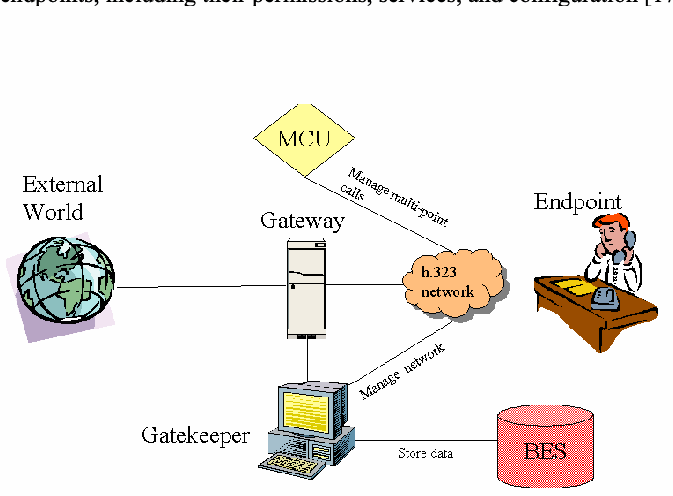
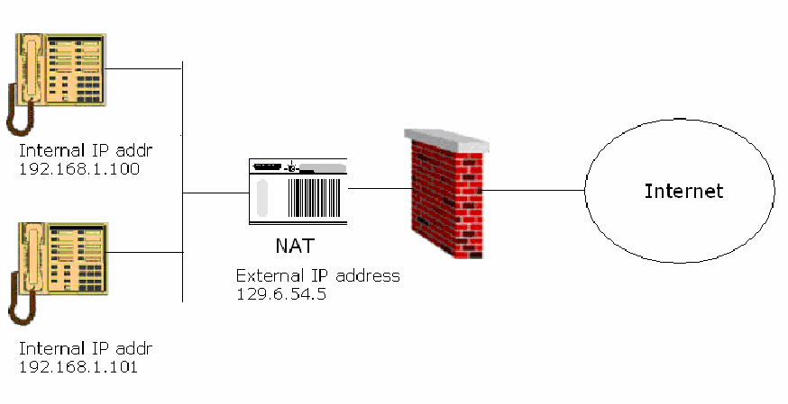
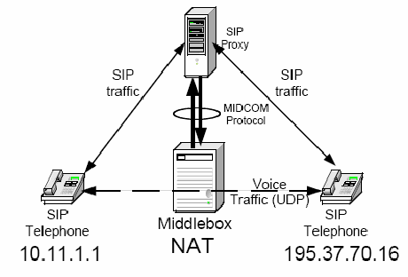

NIST SP 800-58 日本語訳
英語タイトル : Security Considerations for Voice Over IP Systems日本語タイトル : Voice over IPシステムのセキュリティ上の考慮事項
公開日 : 2005-01-01
原文URL : https://csrc.nist.gov/pubs/sp/800/58/final
翻訳編集 : 自動生成（有志による非公式の日本語訳）, 原文取得日 : 2026-10-01, 訳文 : 772 / 772 ブロック
[要約] SP 800-58 は、データ通信用ネットワークで音声を伝送する Voice over IP（VoIP）の概要と、そのセキュリティ上の課題、脆弱性に対する対抗策を紹介する文書です。VoIP 機器とデータ処理、サービス品質の問題、H.323 などのプロトコルとそのセキュリティを扱い、ネットワークアーキテクチャ、E-911、物理的管理策、バックアップ電源、ファイアウォールなどの推奨事項を挙げています。安全な VoIP ネットワークを確立するための指針を各機関に提供することが目的で、各機関は自らのセキュリティ要件や業務要件に合わせて調整することが推奨されます。
［NIST のロゴ。公的な標章のため、この非公式サイトには掲載していません。原本 PDF を参照してください。］
Special Publication 800-58
特別刊行物800-58
Security Considerations for Voice Over IP Systems
Voice over IPシステムのセキュリティに関する考慮事項
Recommendations of the National Institute of Standards and Technology
国立標準技術研究所の勧告
D. Richard Kuhn, Thomas J. Walsh, Steffen Fries
D. Richard Kuhn、Thomas J. Walsh、Steffen Fries
NIST Special Publication 800-58
NIST特別刊行物800-58
Security Considerations for Voice Over IP Systems
Voice over IPシステムのセキュリティに関する考慮事項
Recommendations of the National Institute of Standards and Technology
国立標準技術研究所の勧告
C O M P U T E R S E C U R I T Y
コンピュータセキュリティ
Computer Security Division Information Technology Laboratory National Institute of Standards and Technology Gaithersburg, MD 20899-8930
コンピュータセキュリティ部門 情報技術研究所 国立標準技術研究所 メリーランド州ゲイサーズバーグ 20899-8930
January 2005
2005年一月
U.S. Department of Commerce
米国商務省
Donald L. Evans, Secretary
Donald L. Evans 長官
Technology Administration
技術庁
Phillip J. Bond, Under Secretary for Technology
Phillip J. Bond 技術担当次官
National Institute of Standards and Technology
国立標準技術研究所
Shashi Phoha, Director
Shashi Phoha 所長
Note to Readers
読者への注記
The Information Technology Laboratory (ITL) at the National Institute of Standards and Technology (NIST) promotes the U.S. economy and public welfare by providing technical leadership for the Nation’s measurement and standards infrastructure. ITL develops tests, test methods, reference data, proof of concept implementations, and technical analysis to advance the development and productive use of information technology. ITL’s responsibilities include the development of technical, physical, administrative, and management standards and guidelines for the cost-effective security and privacy of sensitive unclassified information in Federal computer systems.
国立標準技術研究所（NIST）の情報技術研究所（ITL）は、米国の計測・標準インフラに技術面でのリーダーシップを発揮することで、米国経済と公共の福祉の向上に寄与しています。ITLは、情報技術の開発と生産的な活用を推進するため、試験、試験方法、参照データ、概念実証の実装、技術分析を開発しています。ITLの責務には、連邦コンピュータシステムにおける機微な非機密情報について、費用対効果の高いセキュリティとプライバシーを実現するための技術的、物理的、管理的、運営的な標準およびガイドラインの策定が含まれます。
This document is a publication of the National Institute of Standards and Technology (NIST) and is not subject to U.S. copyright. Certain commercial entities, equipment, or materials may be identified in this document in order to describe an experimental procedure or concept adequately. Such identification is not intended to imply recommendation or endorsement by the National Institute of Standards and Technology, nor is it intended to imply that the entities, materials, or equipment are necessarily the best available for the purpose.
本書は米国国立標準技術研究所（NIST）の刊行物であり、米国の著作権の対象ではありません。実験手順または概念を適切に説明するため、本書で特定の商業組織、装置または材料に言及することがあります。そのような特定は、NISTによる推奨または承認を意味するものではなく、また、該当する組織、材料または装置が目的に適した最良のものであることを意味するものでもありません。
T.J. Walsh and D.R. Kuhn are employees of NIST; S. Fries is an employee of Siemens AG.
T.J. WalshおよびD.R. KuhnはNISTの職員であり、S. FriesはSiemens AGの職員です。
For questions or comments on this document, contact sp800-58@nist.gov.
本書に関する質問またはコメントは、sp800-58@nist.govまで連絡されました。
Acknowledgments
謝辞
This document has benefited from review and comment by many experts. We particularly want to thank Mike Stauffer, of Booz Allen Hamilton, for his careful review and many contributions to improving the quality of this publication. Appendix A is derived from an internal NIST report by Tony Meehan and Tyler Moore of the University of Tulsa. Many people provided us with helpul comments and suggestions for improvements to the first draft of this document. We are grateful to Tim Grance, John Larson and colleagues at Sprint, Stephen Whitlock, David Waring, Steven Ungar, Larry L. Brock, Ron Rice, John Dabnor, Susan Landau, Cynthia Des Lauriers, Victor Marshall, Nora Wheeler, Anthony Smith, Curt Barker, Gerald Maguire, Frank Derks, Ben Halpert, Elaine Starkey, William Ryberg, Loraine Beyer, Terry Sherald, Gill Williams, Roberta Durant, Adrian Gardner, Rich Graveman, David Harrity, Lakshminath Dondeti, Mary Barnes, Cedric Aoun, Mike Lee, Paul Simmons, Marcus Leech, Paul Knight, Ken van Wyk, Manuel Vexler, and John Kelsey.
本書は、多くの専門家による査読とコメントの恩恵を受けました。特に、慎重な査読と本刊行物の品質向上に向けた多くの貢献に対し、Booz Allen HamiltonのMike Staufferに感謝します。付録Aは、タルサ大学のTony MeehanおよびTyler MooreによるNIST内部報告書に基づきます。本書の初稿に対する改善のため、多くの方々から有益なコメントや提案をいただきました。Tim Grance、John LarsonおよびSprintの同僚、Stephen Whitlock、David Waring、Steven Ungar、Larry L. Brock、Ron Rice、John Dabnor、Susan Landau、Cynthia Des Lauriers、Victor Marshall、Nora Wheeler、Anthony Smith、Curt Barker、Gerald Maguire、Frank Derks、Ben Halpert、Elaine Starkey、William Ryberg、Loraine Beyer、Terry Sherald、Gill Williams、Roberta Durant、Adrian Gardner、Rich Graveman、David Harrity、Lakshminath Dondeti、Mary Barnes、Cedric Aoun、Mike Lee、Paul Simmons、Marcus Leech、Paul Knight、Ken van Wyk、Manuel Vexler、およびJohn Kelseyに感謝します。
Table of Contents
目次
List of Figures and Tables
図および表の一覧
エグゼクティブサマリーおよび推奨事項
Voice over IP – the transmission of voice over packet-switched IP networks – is one of the most important emerging trends in telecommunications. As with many new technologies, VOIP introduces both security risks and opportunities. VOIP has a very different architecture than traditional circuit-based telephony, and these differences result in significant security issues. Lower cost and greater flexibility are among the promises of VOIP for the enterprise, but VOIP should not be installed without careful consideration of the security problems introduced. Administrators may mistakenly assume that since digitized voice travels in packets, they can simply plug VOIP components into their already-secured networks and remain secure. However, the process is not that simple. This publication explains the challenges of VOIP security for agency and commercial users of VOIP, and outlines steps needed to help secure an organization’s VOIP network. VOIP security considerations for the public switched telephone network (PSTN) are largely outside the scope of this document.
Voice over IP（VoIP）、すなわちパケット交換IPネットワークを介した音声伝送は、通信分野で最も重要な新興動向の一つです。多くの新技術と同様に、VoIPはセキュリティ上のリスクと機会の両方をもたらします。VoIPのアーキテクチャは従来の回線交換電話とは大きく異なり、その違いが重大なセキュリティ上の問題につながります。企業にとって、低コストと柔軟性の向上はVoIPがもたらす利点だが、VoIPが持ち込むセキュリティ上の問題を慎重に検討せずに導入すべきではありません。管理者は、デジタル化された音声がパケットで伝送されるのだから、VoIPコンポーネントを既に保護されたネットワークに接続するだけで安全を保てると誤って考えることがあります。しかし、実際はそれほど単純ではありません。本書は、政府機関および商用のVoIP利用者にとってのVoIPセキュリティ上の課題を説明し、組織のVoIPネットワークを保護するために必要な手順を示します。公衆交換電話網（PSTN）に関するVoIPセキュリティ上の考慮事項は、概ね本書の対象外です。
VOIP systems take a wide variety of forms, including traditional telephone handsets, conferencing units, and mobile units. In addition to end-user equipment, VOIP systems include a variety of other components, including call processors/call managers, gateways, routers, firewalls, and protocols. Most of these components have counterparts used in data networks, but the performance demands of VOIP mean that ordinary network software and hardware must be supplemented with special VOIP components. Not only does VOIP require higher performance than most data systems, critical services, such as Emergency 911 must be accommodated. One of the main sources of confusion for those new to VOIP is the (natural) assumption that because digitized voice travels in packets just like other data, existing network architectures and tools can be used without change. However, VOIP adds a number of complications to existing network technology, and these problems are magnified by security considerations.
VoIPシステムには、従来型の電話機、会議用端末、モバイル端末など、さまざまな形態があります。エンドユーザー機器のほか、VoIPシステムには、呼処理装置／呼管理装置、ゲートウェイ、ルーター、ファイアウォール、プロトコルなど、さまざまな構成要素が含まれます。これらの構成要素の多くにはデータネットワークで使われる対応物があるが、VoIPの性能要件を満たすには、通常のネットワーク用ソフトウェアやハードウェアを専用のVoIPコンポーネントで補う必要があります。VoIPには大半のデータシステムより高い性能が求められるだけでなく、緊急通報911などの重要なサービスにも対応しなければなりません。VoIPに不慣れな人が混乱する主な原因の一つは、デジタル化音声も他のデータと同じようにパケットで伝送されるのだから、既存のネットワークアーキテクチャやツールを変更せずに使えるという（自然な）思い込みです。しかし、VoIPは既存のネットワーク技術に多くの複雑さを加え、セキュリティ上の考慮事項によってこれらの問題はさらに大きくなります。
Quality of Service (QoS) is fundamental to the operation of a VOIP network that meets users’ quality expectations. However, the implementation of various security measures can cause a marked deterioration in QoS. These complications range from firewalls delaying or blocking call setups to encryption-produced latency and delay variation (jitter). Because of the time-critical nature of VOIP, and its low tolerance for disruption and packet loss, many security measures implemented in traditional data networks are simply not applicable to VOIP in their current form; firewalls, intrusion detection systems, and other components must be specialized for VOIP. Current VOIP systems use either a proprietary protocol, or one of two standards, H.323 and the Session Initiation Protocol (SIP). Although SIP seems to be gaining in popularity, neither of these protocols has become dominant in the market yet, so it often makes sense to incorporate components that can support both. In addition to SIP and H.323 there are also two further standards, media gateway control protocol (MGCP) and Megaco/H.248, which may be used in large deployments for gateway decomposition. These standards may be used to ease message handling with media gateways, or on the other hand they can easily be used to implement terminals without any intelligence, similar to today’s phones connected to a PBX using a stimulus protocol.
ユーザーが期待する品質を満たすVoIPネットワークの運用にとって、サービス品質（QoS）は不可欠です。しかし、さまざまなセキュリティ対策を実装すると、QoSが大幅に低下することがあります。ファイアウォールによる呼設定の遅延や遮断から、暗号化に起因する遅延や遅延変動（ジッター）まで、問題は多岐にわたります。VoIPは時間制約が厳しく、通信の中断やパケット損失への許容度が低いため、従来のデータネットワークで実装されていたセキュリティ対策の多くは、そのままではVoIPに適用できません。ファイアウォール、侵入検知システム、その他の構成要素をVoIP向けに特化させる必要があります。現在のVoIPシステムでは、独自プロトコルか、二つの標準のいずれか、すなわちH.323またはSession Initiation Protocol（SIP）が使われています。SIPの普及が進みつつあるように見えるものの、どちらのプロトコルも市場で主流にはなっていないため、両方をサポートできる構成要素を取り入れるのが妥当な場合が多くあります。SIPおよびH.323に加え、メディアゲートウェイ制御プロトコル（MGCP）とMegaco/H.248という二つの標準もあり、大規模な導入環境ではゲートウェイの機能分割に使用できます。これらの標準は、メディアゲートウェイのメッセージ処理を容易にするためにも、今日のPBXに刺激プロトコルで接続される電話機と同様、インテリジェンスを持たない端末を実装するためにも使用できます。
Packet networks depend for their successful operation on a large number of configurable parameters: IP and MAC (physical) addresses of voice terminals, addresses of routers and firewalls, and VOIP specific software such as call processing components (call managers) and other programs used to place and route calls. Many of these network parameters are established dynamically every time network components are restarted, or when a VOIP telephone is restarted or added to the network. Because there are so many places in a network with dynamically configurable parameters, intruders have a wide array of potentially vulnerable points to attack [1].
パケットネットワークを正常に運用するには、多数の設定可能なパラメーターに依存します。たとえば、音声端末のIPアドレスとMAC（物理）アドレス、ルーターとファイアウォールのアドレス、呼処理コンポーネント（呼管理装置）などのVoIP固有ソフトウェアや、呼の発信・経路制御に使われるその他のプログラムがあります。ネットワーク構成要素の再起動時や、VoIP電話機の再起動・ネットワークへの追加時に、これらのパラメーターの多くは動的に設定されます。ネットワーク内には動的に設定可能な箇所が非常に多いため、侵入者には攻撃対象となり得る潜在的に脆弱な箇所が数多くある［1］。
Firewalls are a staple of security in today’s IP networks. Whether protecting a LAN or WAN, encapsulating a DMZ, or just protecting a single computer, a firewall is usually the first line of defense against would be attackers. Firewalls work by blocking traffic deemed to be invasive, intrusive, or just plain malicious from flowing through them. Acceptable traffic is determined by a set of rules programmed into the firewall by the network administrator. The introduction of firewalls to the VOIP network complicates several aspects of VOIP, most notably dynamic port trafficking and call setup procedures.
ファイアウォールは、今日のIPネットワークにおけるセキュリティの基本です。LANやWANの保護、DMZの隔離、あるいは単一のコンピューターの保護のいずれの場合でも、ファイアウォールは通常、攻撃者に対する最初の防御線となります。ファイアウォールは、侵襲的、侵入的、または単に悪意のあるものと判断したトラフィックが通過しないように遮断します。許可するトラフィックは、ネットワーク管理者がファイアウォールに設定した一連のルールによって決まります。VoIPネットワークにファイアウォールを導入すると、特に動的なポートのやり取りや呼設定手順など、VoIPのいくつかの側面が複雑になります。
Network Address Translation (NAT) is a powerful tool that can be used to hide internal network addresses and enable several endpoints within a LAN to use the same (external) IP address. The benefits of NATs come at a price. For one thing, an attempt to make a call into the network becomes very complex when a NAT is introduced. The situation is somewhat similar to an office building where mail is addressed with employees’ names and the building address, but internal addressing is handled by the company mailroom. There are also several issues associated with the transmission of voice data across the NAT, including an incompatibility with IPsec. Although the use of NATs may be reduced as IPv6 is adopted, they will remain a common component in networks for years to come, so VOIP systems must deal with the complexities of NATs.
ネットワークアドレス変換（NAT）は、内部ネットワークのアドレスを隠し、LAN内の複数のエンドポイントで同じ（外部）IPアドレスを使用できるようにする強力な手段です。NATの利点には代償が伴います。たとえば、NATを導入すると、ネットワーク内への呼の発信が非常に複雑になります。これは、従業員名とビルの住所宛てに郵便物を送り、建物内の宛先指定は社内の郵便室が行うオフィスビルに似ています。NATを介した音声データの伝送にもいくつかの問題があり、IPsecとの非互換性もその一つです。IPv6の普及に伴いNATの使用が減る可能性はあるものの、今後何年にもわたりネットワークで一般的な構成要素であり続けるため、VoIPシステムはNATの複雑さに対処しなければなりません。
Firewalls, gateways, and other such devices can also help keep intruders from compromising a network. However, firewalls are no defense against an internal hacker. Another layer of defense is necessary at the protocol level to protect the voice traffic. In VOIP, as in data networks, this can be accomplished by encrypting the packets at the IP level using IPsec, or at the application level with secure RTP, the real-time transport protocol (RFC 3550). However, several factors, including the expansion of packet size, ciphering latency, and a lack of QoS urgency in the cryptographic engine itself can cause an excessive amount of latency in the VOIP packet delivery. This leads to degraded voice quality, again highlighting the tradeoff between security and voice quality, and emphasizing a need for speed.
ファイアウォール、ゲートウェイなどの装置は、侵入者によるネットワーク侵害の防止にも役立ちます。しかし、ファイアウォールは内部の攻撃者に対する防御にはなりません。音声トラフィックを保護するには、プロトコルレベルで別の防御層が必要です。データネットワークと同様にVoIPでは、IPレベルでIPsecを用いるか、アプリケーションレベルでセキュアRTP（リアルタイムトランスポートプロトコル、RFC 3550）を用いてパケットを暗号化できます。しかし、パケットサイズの増大、暗号処理の遅延、暗号エンジン自体におけるQoS優先度の不足など、いくつかの要因により、VoIPパケットの配送に過度の遅延が生じる可能性があります。その結果、音声品質が低下し、セキュリティと音声品質とのトレードオフが改めて明らかになるとともに、高速性が必要であることが強調されます。
VOIP is still an emerging technology, so it is difficult to develop a complete picture of what a mature worldwide VOIP network will one day look like. As the emergence of SIP has shown, new technologies and new protocol designs have the ability to radically change VOIP. Although there are currently many different architectures and protocols to choose from, eventually a true standard will emerge. Unless a widely used open standard emerges, solutions will be likely to include a number of proprietary elements, which can limit an enterprise’s future choices. The most widely used of the competing standards are SIP and H.323. Some observers believe that SIP will become dominant. Major vendors are investing an increasing portion of their development effort into SIP products. An extension of SIP, the SIP for Instant Messaging and Presence Leveraging Extensions (SIMPLE) standard, is being incorporated into products that support Instant Messaging. Until a truly dominant standard emerges, organizations moving to VOIP should consider gateways and other network elements that support both H.323 and SIP. Such a strategy helps to ensure a stable and robust VOIP network in the years that come, no matter which protocol prevails.
VoIPはまだ新興技術であり、成熟した世界規模のVoIPネットワークが将来どのような姿になるかを完全に見通すことは困難です。SIPの登場が示すように、新技術や新しいプロトコル設計はVoIPを根本的に変える可能性があります。現時点では選択可能なアーキテクチャやプロトコルが多数あるものの、いずれ真の標準が確立されるでしょう。広く使われるオープン標準が確立されなければ、ソリューションには複数の独自仕様要素が含まれ、企業の将来の選択肢を制限する可能性が高いです。競合する標準のうち、最も広く使われているのはSIPとH.323です。SIPが主流になると考える専門家もいます。大手ベンダーは、SIP製品に開発努力のより多くの割合を投じています。SIPの拡張であるSIMPLE（SIP for Instant Messaging and Presence Leveraging Extensions）標準は、インスタントメッセージングをサポートする製品に組み込まれつつあります。真に支配的な標準が確立されるまでは、VoIPへの移行を進める組織は、H.323とSIPの両方をサポートするゲートウェイやその他のネットワーク要素を検討すべきです。この戦略により、どちらのプロトコルが主流となる場合でも、今後数年間にわたって安定した堅牢なVoIPネットワークを確保しやすくなります。
Designing, deploying, and securely operating a VOIP network is a complex effort that requires careful preparation. The integration of a VOIP system into an already congested or overburdened network could create serious problems for the organization. There is no easy “one size fits all” solution to the issues discussed in these chapters. An organization must investigate carefully how its network is laid out and which solution fits its needs best.
VoIPネットワークの設計、導入、安全な運用は、慎重な準備を要する複雑な取り組みです。既に混雑または過負荷のネットワークにVoIPシステムを統合すると、組織に深刻な問題が生じる可能性があります。これらの章で扱う課題に対する、簡単な「万能」解決策はありません。組織は、自らのネットワーク構成と、どのソリューションがニーズに最も適合するかを慎重に調査しなければなりません。
NIST recommendations.
NISTの推奨事項。
Because of the integration of voice and data in a single network, establishing a secure VOIP and data network is a complex process that requires greater effort than that required for data-only networks. In particular, start with these general guidelines, recognizing that practical considerations, such as cost or legal requirements, may require adjustments for the organization:
音声とデータを単一のネットワークに統合するため、安全なVoIP・データネットワークの構築は複雑なプロセスとなり、データ専用ネットワークの場合より大きな労力を要します。特に、コストや法的要件などの実務上の事情により組織ごとに調整が必要となる場合があることを踏まえ、まず次の一般的な指針に従うこと。
1. Develop appropriate network architecture.
1. 適切なネットワークアーキテクチャを構築する。
•Separate voice and data on logically different networks if feasible. Different subnets with separate RFC 1918 address blocks should be used for voice and data traffic, with separate DHCP servers for each, to ease the incorporation of intrusion detection and VOIP firewall protection
•可能であれば、音声とデータを論理的に異なるネットワークに分離します。音声トラフィックとデータトラフィックには、RFC 1918のアドレスブロックをそれぞれ別に割り当てたサブネットを使用し、各ネットワークに個別のDHCPサーバーを設けます。これにより、侵入検知およびVoIPファイアウォールによる保護を組み込みやすくなります。
•• At the voice gateway, which interfaces with the PSTN, disallow H.323, SIP, or other VOIP protocols from the data network. Use strong authentication and access control on the voice gateway system, as with any other critical network component. Strong authentication of clients towards a gateway often presents difficulties, particularly in key management. Here, access control mechanisms and policy enforcement may help.
•• PSTNと接続する音声ゲートウェイでは、データネットワークからのH.323、SIP、その他のVoIPプロトコルを禁止します。他の重要なネットワーク構成要素と同様に、音声ゲートウェイシステムにも強固な認証とアクセス制御を使用します。クライアントがゲートウェイを相手に行う強固な認証は、特に鍵管理の面で困難を伴うことが多くあります。この場合、アクセス制御の仕組みやポリシーの適用が役立つことがあります。
•A mechanism to allow VOIP traffic through firewalls is required. There are a variety of protocol dependent and independent solutions, including application level gateways (ALGs) for VOIP protocols, Session Border Controllers, or other standards-based solutions when they mature.
•ファイアウォールを通じてVOIPトラフィックを通過させるメカニズムが必要です。プロトコル依存・非依存を問わず、VOIPプロトコル用のアプリケーションレベルゲートウェイ（ALG）、セッションボーダーコントローラー、成熟した段階での他の標準ベースのソリューションなど、さまざまな解決策があります。
•Stateful packet filters can track the state of connections, denying packets that are not part of a properly originated call. (This may not be practical when multimedia protocol inherent security or lower layer security is applied, e.g., H.235 Annex D for integrity provision or TLS to protect SIP signaling.)
•ステートフルパケットフィルターは接続状態を追跡し、適切に開始された呼の一部ではないパケットを拒否できます。（H.235 Annex Dによる完全性保護や、SIPシグナリングを保護するTLSなど、マルチメディアプロトコル固有のセキュリティまたは下位レイヤーのセキュリティが適用されている場合、この方法は実用的でないことがあります。）
•Use IPsec or Secure Shell (SSH) for all remote management and auditing access. If practical, avoid using remote management at all and do IP PBX access from a physically secure system.
•すべてのリモート管理および監査アクセスにはIPsecまたはSecure Shell（SSH）を使用します。実行可能であれば、リモート管理自体を避け、物理的に保護されたシステムからIP PBXにアクセスします。
•If performance is a problem, use encryption at the router or other gateway, not the individual endpoints, to provide for IPsec tunneling. Since some VOIP endpoints are not computationally powerful enough to perform encryption, placing this burden at a central point ensures all VOIP traffic emanating from the enterprise network has been encrypted. Newer IP phones are able to provide Advanced Encryption System (AES) encryption at reasonable cost. Note that Federal Information Processing Standard (FIPS) 140-2, Security Requirements for Cryptographic Modules, is applicable to all Federal agencies that use cryptographic-based security systems to protect sensitive information in computer and telecommunication systems (including voice systems) as defined in Section 5131 of the Information Technology Management Reform Act of 1996, Public Law 104-106.
•性能が問題となる場合、IPsecトンネルを実現する暗号化には、個々のエンドポイントではなくルーターやその他のゲートウェイを使用します。一部のVoIPエンドポイントは暗号化を実行するだけの計算能力を持たないため、この負荷を中央の装置に配置することで、企業ネットワークから送出されるすべてのVoIPトラフィックが暗号化されます。新しいIP電話では、妥当なコストでAdvanced Encryption Standard（AES）暗号化を利用できます。Federal Information Processing Standard（FIPS）140-2「暗号モジュールのセキュリティ要件」は、Information Technology Management Reform Act of 1996（Public Law 104-106）第5131条で定義される、コンピューターおよび電気通信システム（音声システムを含む）の機微情報を保護するために暗号ベースのセキュリティシステムを使用するすべての連邦機関に適用される点に留意します。
2. Ensure that the organization has examined and can acceptably manage and mitigate the risks to their information, system operations, and continuity of essential operations when deploying VOIP systems.
2. VOIPシステムの導入にあたり、自組織が情報、システム運用、重要な業務の継続に対するリスクを検討し、許容できる形で管理・低減できることを確認する。
An especially challenging security environment is created when new technologies are deployed. Risks often are not fully understood, administrators are not yet experienced with the new technology, and security controls and policies must be updated. Therefore, agencies should carefully consider such issues as their level of knowledge and training in the technology, the maturity and quality of their security practices, controls, policies, and architectures, and their understanding of the associated security risks. These issues should be considered for all systems but are especially important with VOIP deployment for essential operations, such as systems designated "high" under FIPS 199, Standards for Security Categorization of Federal Information and Information Systems [2].
新技術の導入によって、特に困難なセキュリティ環境が生じます。リスクが十分に理解されていないことが多く、管理者は新技術にまだ習熟しておらず、セキュリティ管理策とポリシーの更新も必要となります。そのため、各機関は、当該技術に関する知識と訓練の水準、セキュリティ実務・管理策・ポリシー・アーキテクチャの成熟度と品質、関連するセキュリティリスクへの理解などを慎重に検討すべきです。これらの点はすべてのシステムで考慮すべきだが、FIPS 199「連邦情報および情報システムのセキュリティ分類基準」で「High」に指定されたシステムなど、不可欠な業務に用いるVoIPの導入では特に重要である［2］。
VOIP can provide more flexible service at lower cost, but there are significant tradeoffs that must be considered. VOIP systems can be expected to be more vulnerable than conventional telephone systems, in part because they are tied in to the data network, resulting in additional security weaknesses and avenues of attack (see Appendix A for more detailed discussion of vulnerabilities of VOIP and their relation to data network vulnerabilities). Confidentiality and privacy may be at greater risk in VOIP systems unless strong controls are implemented and maintained. An additional concern is the relative instability of VOIP technology compared with established telephony systems. Today, VOIP systems are still maturing and dominant standards have not emerged. This instability is compounded by VOIP’s reliance on packet networks as a transport medium. The public switched telephone network is ultra-reliable. Internet service is generally much less reliable, and VOIP cannot function without Internet connections, except in the case of large corporate or other users who may operate a private network. Essential telephone services, unless carefully planned, deployed, and maintained, will be at greater risk if based on VOIP.
VoIPはより柔軟なサービスを低コストで提供できる一方、検討すべき重大なトレードオフがあります。VoIPシステムは従来の電話システムより脆弱になる可能性が高いです。これは一因としてデータネットワークに接続されており、その結果、追加のセキュリティ上の弱点や攻撃経路が生じるためです（VoIPの脆弱性とデータネットワークの脆弱性との関係については付録Aを参照してください）。強固な管理策を実装し維持しなければ、VoIPシステムでは機密性とプライバシーがより大きなリスクにさらされる可能性があります。確立済みの電話システムと比べたVoIP技術の相対的な不安定さも懸念事項です。現在、VoIPシステムはまだ成熟途上にあり、支配的な標準も確立されていません。この不安定さは、伝送媒体としてパケットネットワークに依存することでさらに増します。公衆交換電話網は極めて高い信頼性を持つ一方、インターネットサービスは一般に信頼性が大幅に低く、独自のプライベートネットワークを運用する大企業などの場合を除き、VoIPはインターネット接続なしでは機能しません。慎重に計画、導入、保守しなければ、VoIPを基盤とする不可欠な電話サービスはより大きなリスクにさらされます。
3. Special consideration should be given to E-911 emergency services communications, because E-911 automatic location service is not available with VOIP in some cases.
3. E-911緊急通報サービスの通信には特別な配慮をすべきである。VOIPでは、E-911の自動位置特定サービスが利用できない場合があるためである。
Unlike traditional telephone connections, which are tied to a physical location, VOIP’s packet switched technology allows a particular number to be anywhere. This is convenient for users, because calls can be automatically forwarded to their locations. But the tradeoff is that this flexibility severely complicates the provision of E-911 service, which normally provides the caller’s location to the 911 dispatch office. Although most VOIP vendors have workable solutions for E-911 service, government regulators and vendors are still working out standards and procedures for 911 services in a VOIP environment. Agencies must carefully evaluate E-911 issues in planning for VOIP deployment.
物理的な場所に結び付けられた従来の電話接続とは異なり、VOIPのパケット交換技術では、特定の番号をどこにでも置くことができます。通話を利用者の所在地へ自動転送できるため、利用者には便利です。しかしその代償として、この柔軟性により、通常は発信者の位置を911指令センターへ通知するE-911サービスの提供が著しく複雑になります。ほとんどのVOIPベンダーはE-911サービスの実用的な解決策を持っているが、政府の規制当局とベンダーは、VOIP環境における911サービスの標準と手順を現在も策定中です。各機関は、VOIPの導入計画において、E-911の問題を慎重に評価しなければなりません。
4. Agencies should be aware that physical controls are especially important in a VOIP environment and deploy them accordingly.
4. 各機関は、VOIP環境では物理的管理策が特に重要であることを認識し、それに応じて導入すべきである。
Unless the VOIP network is encrypted, anyone with physical access to the office LAN could potentially connect network monitoring tools and tap into telephone conversations. Although conventional telephone lines can also be monitored when physical access is obtained, in most offices there are many more points to connect with a LAN without arousing suspicion. Even if encryption is used, physical access to VOIP servers and gateways may allow an attacker to do traffic analysis (i.e., determine which parties are communicating). Agencies therefore should ensure that adequate physical security is in place to restrict access to VOIP network components. Physical securities measures, including barriers, locks, access control systems, and guards, are the first line of defense. Agencies must make sure that the proper physical countermeasures are in place to mitigate some of the biggest risks such as insertion of sniffers or other network monitoring devices. Otherwise, practically speaking this means that installation of a sniffer could result in not just data but all voice communications being intercepted.
VoIPネットワークが暗号化されていなければ、オフィスLANに物理的にアクセスできる人は誰でも、ネットワーク監視ツールを接続して電話の会話を盗聴できる可能性があります。従来の電話回線も物理的にアクセスされれば監視され得るが、大半のオフィスでは、疑いを招かずにLANへ接続できる箇所の方がはるかに多くあります。暗号化を使用していても、VoIPサーバーやゲートウェイへの物理アクセスによって、攻撃者がトラフィック分析（すなわち、どの当事者同士が通信しているかの特定）を行える場合があります。したがって各機関は、VoIPネットワーク構成要素へのアクセスを制限する十分な物理的セキュリティを確保すべきです。障壁、錠、アクセス制御システム、警備員などの物理的セキュリティ対策は、最初の防御線となります。盗聴器やその他のネットワーク監視装置の設置など、最大級のリスクを軽減する適切な物理的対抗策が整っていることを各機関は確認しなければなりません。そうでなければ、盗聴器の設置によって、データだけでなくすべての音声通信が傍受されるおそれがあります。
5. Evaluate costs for additional power backup systems that may be required to ensure continued operation during power outages.
5. 停電時にも運用を継続できるようにするために必要となり得る、追加の電源バックアップシステムの費用を評価する。
A careful assessment must be conducted to ensure that sufficient backup power is available for the office VOIP switch, as well as each desktop instrument. Costs may include electrical power to maintain UPS battery charge, periodic maintenance costs for backup power generation systems, and cost of UPS battery replacement. If emergency/backup power is required for more than a few hours, electrical generators will be required. Costs for these include fuel, fuel storage facilities, and cost of fuel disposal at end of storage life.
オフィスのVoIPスイッチと各デスクトップ電話機に十分なバックアップ電源があることを確認するため、慎重な評価を実施しなければなりません。費用には、UPSバッテリー充電用の電力、バックアップ発電システムの定期保守費、UPSバッテリー交換費などが含まれる場合があります。緊急用またはバックアップ電源を数時間以上必要とする場合、発電機が必要となります。その費用には、燃料、燃料貯蔵設備、貯蔵期限後の燃料廃棄費が含まれます。
6. VOIP-ready firewalls and other appropriate protection mechanisms should be employed. Agencies must enable, use, and routinely test the security features that are included in VOIP systems.
6. VOIP対応のファイアウォールやその他の適切な保護メカニズムを採用すべきである。各機関は、VOIPシステムに含まれるセキュリティ機能を有効にし、使用し、定期的に試験しなければならない。
Because of the inherent vulnerabilities (e.g. susceptibility to packet sniffing) when operating telephony across a packet network, VOIP systems incorporate an array of security features and protocols. Organization security policy should ensure that these features are used. Additional measures, described in this document, should be added. In particular, firewalls designed for VOIP protocols are an essential component of a secure VOIP system.
パケットネットワーク上で電話を運用する際の固有の脆弱性（例：パケット盗聴への脆弱性）を踏まえ、VoIPシステムには多様なセキュリティ機能とプロトコルが組み込まれています。組織のセキュリティポリシーでは、これらの機能を確実に使用するよう定めるべきです。本書で説明する追加対策も導入すべきです。特に、VoIPプロトコル向けに設計されたファイアウォールは、安全なVoIPシステムに不可欠な構成要素です。
7. If practical, “softphone” systems, which implement VOIP using an ordinary PC with a headset and special software, should not be used where security or privacy are a concern.
7. 実用上可能であれば、通常のPCにヘッドセットと専用ソフトウェアを組み合わせてVOIPを実装する「ソフトフォン」システムは、セキュリティやプライバシーが懸念される場面では使用すべきではない。
Worms, viruses, and other malicious software are extraordinarily common on PCs connected to the internet, and very difficult to defend against. Well-known vulnerabilities in web browsers make it possible for attackers to download malicious software without a user’s knowledge, even if the user does nothing more than visit a compromised web site. Malicious software attached to email messages can also be installed without the user’s knowledge, in some cases even if the user does not open the attachment. These vulnerabilities result in unacceptably high risks in the use of “softphones”, for most applications. In addition, because PCs are necessarily on the data network, using a softphone system conflicts with the need to separate voice and data networks to the greatest extent practical.
インターネットに接続されたPCでは、ワーム、ウイルス、その他の悪意あるソフトウェアが非常に一般的であり、防御も極めて困難です。ウェブブラウザーの既知の脆弱性により、ユーザーが何もせず、侵害されたウェブサイトを閲覧するだけでも、攻撃者がユーザーに気付かれずに悪意あるソフトウェアをダウンロードさせることが可能です。電子メールに添付された悪意あるソフトウェアも、ユーザーに気付かれずにインストールされる場合があり、添付ファイルを開いていない場合さえあります。こうした脆弱性により、大半の用途における「ソフトフォン」の使用には許容できないほど高いリスクが伴います。さらに、PCは必然的にデータネットワークに接続されるため、ソフトフォンシステムの使用は、実務上可能な限り音声ネットワークとデータネットワークを分離する必要性と相反します。
8. If mobile units are to be integrated with the VOIP system, use products implementing WiFi Protected Access (WPA), rather than 802.11 Wired Equivalent Privacy (WEP).
8. モバイル機器をVOIPシステムに統合する場合は、802.11のWired Equivalent Privacy（WEP）ではなく、WiFi Protected Access（WPA）を実装した製品を使用する。
The security features of 802.11 WEP provide little or no protection because WEP can be cracked with publicly available software. The more recent WiFi Protected Access (WPA), a snapshot of the ongoing 802.11i standard, offers significant improvements in security, and can aid the integration of wireless technology with VOIP. NIST strongly recommends that the WPA (or WEP if WPA is unavailable) security features be used as part of an overall defense-in-depth strategy. Despite their weaknesses, the 802.11 security mechanisms can provide a degree of protection against unauthorized disclosure, unauthorized network access, or other active probing attacks. However, the Federal Information Processing Standard (FIPS) 140-2, Security Requirements for Cryptographic Modules, is mandatory and binding for Federal agencies that have determined that certain information must be protected via cryptographic means. As currently defined, neither WEP nor WPA meets the FIPS 140-2 standard. In these cases, it will be necessary to employ higher level cryptographic protocols and applications such as secure shell (SSH), Transport Level Security (TLS) or Internet Protocol Security (IPsec) with FIPS 140-2 validated cryptographic modules and associated algorithms to protect information, regardless of whether the nonvalidated data link security protocols are used.
802.11 WEPのセキュリティ機能は、公開されているソフトウェアでWEPを解読できるため、ほとんど、またはまったく保護を提供しません。より新しいWiFi Protected Access（WPA）は、策定中の802.11i標準のスナップショットであり、セキュリティを大幅に改善し、無線技術とVoIPの統合に役立ちます。NISTは、WPA（WPAが利用できない場合はWEP）のセキュリティ機能を、全体的な多層防御戦略の一部として使用することを強く推奨します。弱点はあるものの、802.11のセキュリティ機構は、不正な開示、不正なネットワークアクセス、その他の能動的な探索攻撃に対して一定の保護を提供できます。ただし、Federal Information Processing Standard（FIPS）140-2「暗号モジュールのセキュリティ要件」は、特定の情報を暗号手段によって保護しなければならないと判断した連邦機関に対して必須であり、拘束力を持ちます。現行の定義では、WEPもWPAもFIPS 140-2標準を満たしません。このような場合には、検証されていないデータリンク層のセキュリティプロトコルを使用するか否かにかかわらず、情報を保護するために、FIPS 140-2検証済みの暗号モジュールおよび関連アルゴリズムを用いるSecure Shell（SSH）、Transport Level Security（TLS）、Internet Protocol Security（IPsec）などの、より上位レベルの暗号プロトコルやアプリケーションを採用する必要があります。
9. Carefully review statutory requirements regarding privacy and record retention with competent legal advisors.
9. プライバシーと記録保存に関する法令上の要件を、有能な法律顧問とともに慎重に確認する。
Although legal issues regarding VOIP are beyond the scope of this document, readers should be aware that laws and rulings governing interception or monitoring of VOIP lines, and retention of call records, may be different from those for conventional telephone systems. Agencies should review these issues with their legal advisors. See Section 2.5 for more on these issues.
VoIPに関する法的問題は本書の対象外だが、VoIP回線の傍受や監視、通話記録の保存を規定する法律や裁定は、従来の電話システムに適用されるものとは異なる場合があることに留意されました。各機関はこれらの問題を法律顧問と検討すべきです。詳細は2.5節を参照してください。
1 はじめに
Voice over Internet Protocol (VOIP) refers to the transmission of speech across data-style networks. This form of transmission is conceptually superior to conventional circuit switched communication in many ways. However, a plethora of security issues are associated with still-evolving VOIP technology. This publication introduces VOIP, its security challenges, and potential countermeasures for VOIP vulnerabilities.
Voice over Internet Protocol（VoIP）とは、データ通信用ネットワークを介した音声の伝送を指します。この伝送方式は、多くの点で従来の回線交換通信より概念的に優れています。しかし、進化の途上にあるVoIP技術には数多くのセキュリティ上の問題が伴います。本書ではVoIP、そのセキュリティ上の課題、およびVoIPの脆弱性に対する潜在的な対抗策を紹介します。
1.1 Authority
1.1 権限
The National Institute of Standards and Technology (NIST) developed this document in furtherance of its statutory responsibilities under the Federal Information Security Management Act (FISMA) of 2002, Public Law 107-347. NIST is responsible for developing standards and guidelines, including minimum requirements, for providing adequate information security for all agency operations and assets, but such standards and guidelines shall not apply to national security systems. This guideline is consistent with the requirements of the Office of Management and Budget (OMB) Circular A-130, Section 8b(3), “Securing Agency Information Systems,” as analyzed in A-130, Appendix IV: Analysis of Key Sections. Supplemental information is provided in A-130, Appendix III.
National Institute of Standards and Technology（NIST）は、Federal Information Security Management Act（FISMA）of 2002（Public Law 107-347）に基づく法定責務を果たすため、本書を策定しました。NISTは、すべての政府機関の業務および資産に十分な情報セキュリティを提供するための、最低要件を含む標準およびガイドラインを策定する責任を負うが、これらの標準およびガイドラインは国家安全保障システムには適用されないものとします。本ガイドラインは、Office of Management and Budget（OMB）Circular A-130の第8b(3)節「政府機関の情報システムの保護」と整合しており、その分析はA-130付録IV「主要節の分析」に記載されています。補足情報はA-130付録IIIに示されています。
This guideline has been prepared for use by Federal agencies. It may be used by nongovernmental organizations on a voluntary basis and is not subject to copyright, though attribution is desired.
本ガイドラインは連邦機関が利用するために作成されました。民間組織も任意で利用でき、著作権の制約はないが、出典を明記することが望まれます。
Nothing in this document should be taken to contradict standards and guidelines made mandatory and binding on Federal agencies by the Secretary of Commerce under statutory authority, nor should these guidelines be interpreted as altering or superseding the existing authorities of the Secretary of Commerce, Director of the OMB, or any other Federal official.
本書のいかなる内容も、法的権限に基づき商務長官が連邦機関に対して必須かつ拘束力を持たせた標準およびガイドラインと矛盾するものと解釈すべきではありません。また、本ガイドラインを、商務長官、OMB長官、その他の連邦政府職員の既存の権限を変更または置き換えるものと解釈すべきでもありません。
1.2 Document Scope and Purpose
1.2 本書の対象範囲と目的
The purpose of this document is to provide agencies with guidance for establishing secure VOIP networks. Agencies are encouraged to tailor the recommended guidelines and solutions to meet their specific security or business requirements. VOIP security considerations for the public switched telephone network are largely outside the scope of this document. Although legal issues regarding VOIP are beyond the scope of this document, readers should be aware that laws and rulings governing interception or monitoring of VOIP lines, and retention of call records, may be different from those for conventional telephone systems. Agencies should review these issues with their legal advisors. See Section 2.5 for more on this issue.
本書の目的は、安全なVoIPネットワークを確立するための指針を各機関に提供することです。各機関には、推奨される指針や解決策を、それぞれのセキュリティ要件または業務要件に合わせて調整することが推奨されます。公衆交換電話網に関するVoIPセキュリティ上の考慮事項は、概ね本書の対象外です。VoIPに関する法的問題も本書の対象外だが、VoIP回線の傍受や監視、通話記録の保存を規定する法律や裁定は、従来の電話システムに適用されるものとは異なる場合があることに留意されました。各機関はこれらの問題を法律顧問と検討すべきです。この問題の詳細は2.5節を参照してください。
1.3 Audience and Assumptions
1.3 読者および前提条件
VOIP is a very large, complex, and rapidly evolving field. This document reviews VOIP technologies and solutions. Each section provides background information for the reader who is new to VOIP, but most sections also include details of standards and technologies that may be of interest to technical personnel only. The following list highlights how people with different backgrounds might use this document. The intended audience includes the following:
VoIPは非常に大規模で複雑であり、急速に進化している分野です。本書ではVoIPの技術とソリューションを概説します。各節にはVoIPに不慣れな読者向けの背景情報がある一方、多くの節には技術担当者のみが関心を持つ可能性のある標準や技術の詳細も含まれます。以下に、異なる経歴を持つ読者が本書をどのように利用できるかを示します。本書の対象読者は次のとおりです。
•Managers planning to employ VOIP telephony devices in their organizations (chief information officers, senior managers, etc).
•組織でVoIP電話機器の導入を計画する管理者（最高情報責任者、上級管理職など）。
•Systems engineers and architects when designing and implementing networks.
•ネットワークの設計および実装を行うシステムエンジニアとアーキテクト。
•System administrators when administering, patching, securing or upgrading networks that include VOIP components.
•VoIP構成要素を含むネットワークの管理、パッチ適用、保護、またはアップグレードを行うシステム管理者。
•Security consultants when performing security assessments to determine security postures of VOIP environments.
•VoIP環境のセキュリティ態勢を判断するためにセキュリティ評価を実施するセキュリティコンサルタント。
•Researchers and analysts interested in VOIP technologies.
•VoIP技術に関心を持つ研究者およびアナリスト。
This document assumes that the readers have some minimal operating system, networking, and security expertise. Because of the rapidly changing nature of the telecommunications industry and the threats and vulnerabilities to these technologies, readers are strongly encouraged to take advantage of other resources (including those listed in this document) for more current and detailed information.
本書は、読者がオペレーティングシステム、ネットワーク、およびセキュリティに関する最低限の知識を持つことを前提とします。電気通信業界が急速に変化し、これらの技術に対する脅威や脆弱性も変わり続けているため、読者には、本書に記載されたものを含む他のリソースを活用して、より新しく詳細な情報を得ることを強く推奨します。
1.4 Document Organization
1.4 本書の構成
The document is divided into five sections followed by three appendices. This subsection is a roadmap describing the document structure.
本書は五つの節と、それに続く三つの付録で構成されます。本小節では、本書の構成を示します。
•Section 1 is composed of an authority, purpose, scope, audience, assumptions, and document structure.
•第1節は、権限、目的、対象範囲、読者、前提条件、および本書の構成から成ります。
•Section 2 provides an overview of VOIP technology.
•第2節では、VoIP技術の概要を説明します。
•Section 3 discusses performance and quality of service aspects of VOIP, and their effect on security options.
•第3節では、VoIPの性能およびサービス品質に関する側面と、それらがセキュリティ上の選択肢に及ぼす影響を説明します。
•Sections 4 and 5 describe the two most commonly used protocols for VOIP: H.323 and Session Initiation Protocol (SIP).
•第4節および第5節では、VoIPで最も一般的に使用される二つのプロトコル、H.323とSession Initiation Protocol（SIP）を説明します。
•Section 6 discusses media decomposition using the two most commonly used standards MGCP and Megaco/H.248.
•第6節では、最も一般的に使用される二つの標準であるMGCPとMegaco/H.248によるメディア機能の分割について説明します。
•Section 7 explains requirements for call establishment and address translation in a packet-switched telephony system, and the impact of these issues on VOIP security.
•第7節では、パケット交換電話システムにおける呼の確立とアドレス変換の要件、およびこれらの問題がVoIPセキュリティに及ぼす影響を説明します。
•Section 8 discusses encryption technologies that can be employed in a VOIP network.
•第8節では、VoIPネットワークで利用できる暗号化技術を説明します。
•Section 9 summarizes the options available for securing VOIP systems.
•第9節では、VoIPシステムを保護するために利用できる選択肢を要約します。
•Section 10 highlights issues to be considered in planning for VOIP.
•第10節では、VoIP導入計画で考慮すべき問題を取り上げます。
•Appendix A describes common risks, threats, and vulnerabilities of VOIP systems, to aid system administrators in securing their systems.
•付録Aでは、システム管理者がシステムを保護する際に役立つよう、VoIPシステムに共通するリスク、脅威、および脆弱性を説明します。
•Appendix B covers some of the frequently asked questions regarding VOIP technology.
•付録Bでは、VoIP技術に関するよくある質問をいくつか取り上げます。
•Appendix C provides a glossary of terms and acronyms used in this document.
•付録Cでは、本書で使用する用語と略語をまとめた用語集を掲載します。
2 VoIPの概要
Many readers who have a good understanding of the Internet and data communications technology may have little background in transmitting voice or real-time imaging in a packet-switched environment. One of the main sources of confusion for those new to VOIP is the (natural) assumption that because digitized voice travels in packets just like other data, existing network architectures and tools can be used without change for voice transmission. VOIP adds a number of complications to existing network technology, and these problems are compounded by security considerations. Most of this report is focused on how to overcome the complications introduced by security requirements for VOIP.
インターネットとデータ通信技術に詳しい読者でも、パケット交換環境における音声やリアルタイム画像の伝送についての知識は限られている場合があります。VoIPに不慣れな人が混乱する主な原因の一つは、デジタル化された音声も他のデータと同じようにパケットで伝送されるのだから、音声伝送にも既存のネットワークアーキテクチャやツールを変更せずに使えるという（自然な）思い込みです。VoIPは既存のネットワーク技術に多くの複雑さを加え、セキュリティ上の考慮事項によってこれらの問題はさらに大きくなります。本報告書の大半では、VoIPのセキュリティ要件によって生じる複雑さを克服する方法に焦点を当てます。
For several years, VOIP was a technology prospect, something on the horizon for the “future works” segment of telephony and networking papers. Now, however, telecommunications companies and other organizations have already, or are in the process of, moving their telephony infrastructure to their data networks. The VOIP solution provides a cheaper and clearer alternative to traditional PSTN phone lines. Although its implementation is widespread, the technology is still developing. It is growing rapidly throughout North America and Europe, but it is sometimes awkwardly implemented on most legacy networks, and often lacks compatibility and continuity with existing systems. Nevertheless, VOIP will capture a significant portion of the telephony market, given the fiscal savings and flexibility that it can provide.
数年前まで、VoIPは将来の電話通信・ネットワークに関する論文で「今後の課題」として挙げられる、実現が見込まれる技術にすぎませんでした。しかし現在、通信事業者やその他の組織は、電話通信インフラをデータネットワークへ既に移行したか、移行を進めています。VoIPソリューションは、従来のPSTN電話回線より安価で明瞭な代替手段となります。広く導入されているものの、この技術はなお発展途上にあります。北米と欧州で急速に普及している一方、大半のレガシーネットワークでは不自然な形で実装されることがあり、既存システムとの互換性や継続性を欠く場合も多くあります。それでも、VoIPがもたらすコスト削減と柔軟性を踏まえると、電話通信市場で大きなシェアを占めるでしょう。
2.1 VOIP Equipment
2.1 VoIP機器
VOIP systems take a wide variety of forms. Just about any computer is capable of providing VOIP; Microsoft’s NetMeeting, which comes with any Windows platform, provides some VOIP services, as does the Apple Macintosh iChat, and Linux platforms have a number of VOIP applications to choose from. In general, though, the term Voice Over IP is associated with equipment that provides the ability to dial telephone numbers and communicate with parties on the other end of a connection who have either another VOIP system or a traditional analog telephone. Demand for VOIP services has resulted in a broad array of products, including:
VoIPシステムには多様な形態があります。ほぼすべてのコンピューターがVoIPを提供できます。Windowsに付属するMicrosoft NetMeetingも、Apple MacintoshのiChatも、Linux向けに提供されるさまざまなVoIPアプリケーションも、何らかのVoIPサービスを提供します。ただし一般に「Voice over IP」という用語は、電話番号をダイヤルし、接続先の相手が別のVoIPシステムまたは従来型のアナログ電話を使っている場合に通信できる機器を指します。VoIPサービスへの需要により、次のように幅広い製品が登場しています。
•Traditional telephone handset – Usually these products have extra features beyond a simple handset with dial pad. Many have a small LCD screen that may provide browsing, instant messaging, or a telephone directory, and which is also used in configuring the handset to gain access to enhanced features such as conference calls or call-park (automatic callback when a dialed number is no longer busy). Some of these units may have a “base station” design that provides the same convenience as a conventional cordless phone.
•従来型の電話機 — 通常、これらの製品には、ダイヤルパッド付きの単純な受話器を超える追加機能があります。多くの製品には小型LCD画面があり、ウェブ閲覧、インスタントメッセージング、電話帳などを表示できるほか、会議通話や保留駐車（発信先の番号が話中でなくなった際に自動で折り返す機能）などの拡張機能を利用するための受話器設定にも使われます。従来型のコードレス電話と同じ利便性を提供する「ベースステーション」型の製品もあります。
•Conferencing units – These provide the same type of service as conventional conference calling phone systems, but since communication is handled over the Internet, they may also allow users to coordinate data communication services, such as a whiteboard that displays on computer monitors at both ends.
•会議用端末 — 従来の電話会議システムと同種のサービスを提供するが、通信がインターネット経由で行われるため、両端のコンピューター画面に表示される電子ホワイトボードなど、データ通信サービスの共同利用も可能にする場合があります。
•Mobile units – Wireless VOIP units are becoming increasingly popular, especially since many organizations already have an installed base of 802.11 networking equipment. Wireless VOIP products may present additional challenges if certain security issues are not carefully addressed. The WEP security features of 802.11b provide little or no protection. The more recent WiFi Protected Access (WPA), a snapshot of the ongoing 802.11i standard, offers significant improvements in security, and can aid the integration of wireless technology with VOIP.
•モバイル端末 — 無線VoIP端末は、802.11ネットワーク機器を既に導入済みの組織が多いこともあり、ますます普及しています。特定のセキュリティ上の問題に慎重に対処しない場合、無線VoIP製品には追加の課題が生じる可能性があります。802.11bのWEPセキュリティ機能は、ほとんど、またはまったく保護を提供しません。より新しいWiFi Protected Access（WPA）は、策定中の802.11i標準の暫定版であり、セキュリティを大幅に改善するとともに、無線技術とVoIPの統合に役立ちます。
•PC or “softphone” – With a headset, software, and inexpensive connection service, any PC or workstation can be used as a VOIP unit, often referred to as a “softphone”. If practical, softphone systems should not be used where security or privacy are a concern. Worms, viruses, and other malicious software are common on PCs connected to the internet, and very difficult to defend against. Well known vulnerabilities in web browsers make it possible for attackers to download malicious software without a user’s knowledge, even if the user does nothing more than visit a compromised web site. Malicious software attached to email messages can also be installed without the user’s knowledge, in some cases even if the user does not open the attachment. These vulnerabilities result in unacceptably high risks in the use of “softphones”, for most applications. In addition, because PCs are necessarily on the data network, using a softphone system conflicts with the need to separate voice and data networks to the greatest extent practical.
•PCまたは「ソフトフォン」 — ヘッドセット、ソフトウェア、安価な接続サービスがあれば、どのPCやワークステーションもVoIP端末として使用でき、「ソフトフォン」と呼ばれることが多くあります。実務上可能であれば、セキュリティまたはプライバシーが懸念される場所でソフトフォンシステムを使用すべきではありません。ワーム、ウイルス、その他の悪意あるソフトウェアは、インターネットに接続されたPCで一般的であり、防御も非常に困難です。ウェブブラウザーの既知の脆弱性により、ユーザーが何もせず、侵害されたウェブサイトを閲覧するだけでも、攻撃者がユーザーに気付かれずに悪意あるソフトウェアをダウンロードさせることが可能です。電子メールに添付された悪意あるソフトウェアも、ユーザーに気付かれずにインストールされる場合があり、添付ファイルを開いていない場合さえあります。こうした脆弱性により、大半の用途における「ソフトフォン」の使用には許容できないほど高いリスクが伴います。さらに、PCは必然的にデータネットワークに接続されるため、ソフトフォンシステムの使用は、実務上可能な限り音声ネットワークとデータネットワークを分離する必要性と相反します。
In addition to end-user equipment, VOIP systems include a large number of other components, including call processors (call managers), gateways, routers, firewalls, and protocols. Most of these components have counterparts used in data networks, but the performance demands of VOIP mean that ordinary network software and hardware must be supplemented with special VOIP components. The unique nature of VOIP services has a significant impact on security considerations for these networks, as will be detailed in later chapters.
エンドユーザー機器のほか、VoIPシステムには、呼処理装置（呼管理装置）、ゲートウェイ、ルーター、ファイアウォール、プロトコルなど、多数の構成要素が含まれます。これらの構成要素の多くにはデータネットワークで使われる対応物があるが、VoIPの性能要件を満たすには、通常のネットワーク用ソフトウェアやハードウェアを専用のVoIPコンポーネントで補う必要があります。VoIPサービスの特異性は、これらのネットワークのセキュリティ上の考慮事項に大きく影響します。詳細は後続の章で説明します。
2.2 Overview of VOIP Data Handling
2.2 VoIPのデータ処理の概要
Before any voice can be sent, a call must be placed. In an ordinary phone system, this process involves dialing the digits of the called number, which are then processed by the telephone company’s system to ring the called number. With VOIP, the user must enter the dialed number, which can take the form of a number dialed on a telephone keypad or the selection of a Universal Resource Indicator (URI), but after that a complex series of packet exchanges must occur, based on a VOIP signaling protocol. The problem is that computer systems are addressed using their IP address, but the user enters an ordinary telephone number or URI to place the call. The telephone number or URI must be linked with an IP address to reach the called party, much as an alphabetic web address, such as “www.nist.gov” must be linked to the IP address of the NIST web server. A number of protocols are involved in determining the IP address that corresponds to the called party’s telephone number. This process is covered in detail in Chapter 6.
音声を送信する前に、まず呼を発信しなければなりません。通常の電話システムでは、発信先の番号をダイヤルし、その数字が電話会社のシステムで処理されて相手の電話を鳴らします。VoIPでは、利用者がダイヤルする番号を入力する必要があり、電話機のキーパッドで入力する番号の場合も、Universal Resource Indicator（URI）を選択する場合もあります。その後、VoIPシグナリングプロトコルに基づく複雑な一連のパケット交換が行われます。問題は、コンピューターシステムはIPアドレスで指定される一方、利用者は呼を発信するために通常の電話番号またはURIを入力することです。電話番号またはURIを発信先に到達するIPアドレスに対応付けなければなりません。この処理は、たとえば「www.nist.gov」のようなアルファベットのウェブアドレスをNISTウェブサーバーのIPアドレスに対応付けるのとよく似ています。発信先の電話番号に対応するIPアドレスの特定には、複数のプロトコルが関与します。この処理については第6章で詳しく説明します。
![Figure 1. Voice Data Processing in a VOIP System. A woman on a telephone (clip art) at the top left; an arrow leads from her into a large box labeled “Alice’s voice terminal (telephone or computer)”. Inside the box, arrows lead through “Analog-digital converter” → “Data Compression” → “RTP” → “UDP packet”. An arrow leads from “UDP packet” to a box “INTERNET”, an arrow from INTERNET to a box “Bob’s voice terminal (telephone or computer)”, and an arrow from that box to a man on a telephone (clip art) at the bottom left.](assets/58/p0020-figure-02.png)
図1 VoIPシステムにおける音声データ処理。左上に電話中の女性のイラストがあり、そこから矢印が「Alice’s voice terminal (telephone or computer)」（Aliceの音声端末（電話またはコンピューター））と書かれた大きな箱に入る。箱の中では、矢印が「Analog-digital converter」（アナログ・デジタル変換器）→「Data Compression」（データ圧縮）→「RTP」→「UDP packet」（UDPパケット）と進む。「UDP packet」から「INTERNET」（インターネット）の箱へ、INTERNETから「Bob’s voice terminal (telephone or computer)」（Bobの音声端末（電話またはコンピューター））の箱へ矢印が向かい、その箱から左下の電話中の男性のイラストへ矢印が向かう。
Figure 1. Voice Data Processing in a VOIP System.
図1 VoIPシステムにおける音声データ処理。
Figure 1 illustrates the basic flow of voice data in a VOIP system. Once the called party answers, voice must be transmitted by converting the voice into digitized form, then segmenting the voice signal into a stream of packets. The first step in this process is converting analog voice signals to digital, using an analog-digital converter. Since digitized voice requires a large number of bits, a compression algorithm can be used to reduce the volume of data to be transmitted. Next, voice samples are inserted into data packets to be carried on the Internet. The protocol for the voice packets is typically the Real-time Transport Protocol, RTP (RFC 3550). RTP packets have special header fields that hold data needed to correctly re-assemble the packets into a voice signal on the other end. But voice packets will be carried as payload by UDP protocols that are also used for ordinary data transmission. In other words, the RTP packets are carried as data by the UDP datagrams, which can then be processed by ordinary network nodes throughout the Internet. At the other end, the process is reversed: the packets are disassembled and put into the proper order, digitized voice data extracted from the packets and uncompressed, then the digitized voice is processed by a digital-to-analog converter to render it into analog signals for the called party’s handset speaker.
図1は、VoIPシステムにおける音声データの基本的な流れを示しています。発信先が応答すると、音声をデジタル形式に変換し、さらに音声信号をパケットのストリームに分割して伝送する必要があります。この処理の最初の段階では、アナログ・デジタル変換器を用いてアナログ音声信号をデジタル信号に変換します。デジタル化した音声には多数のビットが必要となるため、伝送するデータ量を減らすために圧縮アルゴリズムを使用できます。次に音声サンプルをデータパケットに挿入し、インターネット上で伝送します。音声パケットには通常、Real-time Transport Protocol（RTP、RFC 3550）を使用します。RTPパケットには、受信側でパケットを正しく再構成して音声信号にするために必要なデータを格納する特別なヘッダーフィールドがあります。ただし、音声パケットは、通常のデータ伝送にも使われるUDPプロトコルによってペイロードとして伝送されます。つまり、RTPパケットはUDPデータグラムのデータとして運ばれ、そのUDPデータグラムはインターネット上の通常のネットワークノードで処理できます。受信側では逆の処理が行われます。パケットを分解して正しい順序に並べ替え、パケットからデジタル音声データを取り出して伸長し、最後にデジタル・アナログ変換器でアナログ信号に変換して、受信側電話機のスピーカーから出力します。
2.3 Cost
2.3 コスト
The feature of VOIP that has attracted the most attention is its cost-saving potential. By moving away from the public switched telephone networks, long distance phone calls become very inexpensive. Instead of being processed across conventional commercial telecommunications line configurations, voice traffic travels on the Internet or over private data network lines.
VoIPの特徴のうち最も注目を集めているのは、コスト削減の可能性です。公衆交換電話網から移行することで、長距離電話の費用は非常に安くなります。従来の商用電話回線の構成を通じて処理する代わりに、音声トラフィックはインターネットまたはプライベートデータネットワーク回線を通ります。
VOIP is also cost effective because all of an organization’s electronic traffic (phone and data) is condensed onto one physical network, bypassing the need for separate PBX tie lines. Although there is a significant initial startup cost to such an enterprise, significant net savings can result from managing only one network and not needing to sustain a legacy telephony system in an increasingly digital/data centered world. Also, the network administrator’s burden may be lessened as they can now focus on a single network. There is no longer a need for several teams to manage a data network and another to mange a voice network. The simplicity of VOIP systems is attractive, one organization / one network; but as we shall see, the integration of security measures into this architecture is very complex.
VoIPは、組織の電子トラフィック（電話とデータ）を一つの物理ネットワークに集約し、個別のPBX中継回線を不要にする点でも費用対効果が高い水準にあります。このような企業規模の導入には初期費用がかなりかかるものの、管理対象を一つのネットワークに限り、デジタル／データ中心の世界でレガシー電話システムを維持する必要がなくなることで、大幅な純削減効果を得られる可能性があります。また、ネットワーク管理者は単一のネットワークに集中できるため、負担が軽減される場合があります。データネットワークと音声ネットワークを別々のチームで管理する必要もなくなります。VoIPシステムの「一組織、一ネットワーク」という単純さは魅力的だが、後述するように、このアーキテクチャにセキュリティ対策を統合する作業は非常に複雑です。
2.4 Speed and Quality
2.4 速度と品質
In theory, VOIP can provide reduced bandwidth use and quality superior to its predecessor, the conventional PSTN. That is, the use of high bandwidth media common to data communications, combined with the high quality of digitized voice, make VOIP a flexible alternative for speech transmission. In practice, however, the situation is more complicated. Routing all of an organization’s traffic over a single network causes congestion and sending this traffic over the Internet can cause a significant delay in the delivery of speech. Also, bandwidth usage is related to digitization of voice by codecs, circuits or software processes that code and decode data for transmission. That is, producing greater bandwidth savings may slow down encoding and transmission processes. Speed and voice quality improvements are being made as VOIP networks and phones are deployed in greater numbers, and many organizations that have recently switched to a VOIP scheme have noticed no significant degradation in speed or quality.
理論上、VoIPは従来のPSTNより帯域幅の使用量を減らし、より高い品質を提供できます。すなわち、データ通信で一般的な広帯域メディアと高品質なデジタル音声を組み合わせることで、VoIPは柔軟な音声伝送手段となります。しかし実際の状況はより複雑です。組織のすべてのトラフィックを単一ネットワーク上に流すと輻輳が生じ、インターネット経由で伝送すると音声の配送に大きな遅延が生じる場合があります。また、帯域幅の使用量は、伝送データを符号化・復号するコーデック、回路、またはソフトウェア処理による音声のデジタル化にも関係します。つまり、帯域幅をさらに節約すると、符号化や伝送の処理が遅くなる場合があります。VoIPネットワークや電話機の普及に伴って速度と音声品質は改善しており、最近VoIP方式に切り替えた多くの組織では、速度や品質の大幅な低下は確認されていません。
2.5 Privacy and Legal Issues with VOIP
2.5 VoIPのプライバシーおよび法的問題
Although legal issues regarding VOIP are beyond the scope of this document, readers should be aware that laws and rulings governing interception or monitoring of VOIP lines may be different from those for conventional telephone systems. Privacy issues, including the security of call detail records (CDR) are addressed primarily by the Privacy Act of 1974. In addition, agencies may need to consider the Office of Management and Budget's "Guidance on the Privacy Act Implications of Call Detail Programs to Manage Employees' Use of the Government's Telecommunication System" (See FEDERAL REGISTER, 52 FR 12990, April 20, 1987). Because of these guidelines, many federal agencies have Privacy Act System of Record notices for the telephone CDR or usage records. CDR data may be used to reconcile the billing of services and for possible detection of waste, fraud, and abuse of government resources. In addition, NARA General Records Schedule 12, requires a 36-month retention of telephone CDR records (see http://www.archives.gov/records_management/ardor/grs12.html). VOIP systems may produce different types (and a higher volume) of CDR data than conventional telephone systems, so agencies must determine retention requirements for these records. Agencies should review any questions regarding privacy and statutory concerns with their legal advisors.
VoIPに関する法的問題は本書の対象外だが、VoIP回線の傍受や監視を規定する法律や裁定は、従来の電話システムに適用されるものとは異なる場合があることに留意されました。通話明細記録（CDR）のセキュリティを含むプライバシー問題は、主として1974年プライバシー法で扱われます。さらに各機関は、Office of Management and Budget（OMB）の「政府の電気通信システムの職員による使用を管理するための通話明細プログラムのプライバシー法上の影響に関する指針」（Federal Register、52 FR 12990、1987年4月20日）を考慮する必要がある場合があります。これらの指針を受けて、多くの連邦機関は電話のCDRまたは利用記録について、Privacy Act System of Records Noticeを設けています。CDRデータは、サービス料金の照合や、政府資源の浪費、詐欺、不正使用の検出に使われる場合があります。さらに、NARA一般記録スケジュール12は、電話CDR記録を36か月間保存するよう求めています（http://www.archives.gov/records_management/ardor/grs12.htmlを参照してください）。VoIPシステムは従来の電話システムとは異なる種類のCDRデータを、より大量に生成する可能性があるため、各機関はこれらの記録の保存要件を決定しなければなりません。プライバシーや法定要件に関する疑問は、法律顧問と検討すべきです。
2.6 VOIP Security Issues
2.6 VoIPのセキュリティ上の問題
With the introduction of VOIP, the need for security is compounded because now we must protect two invaluable assets, our data and our voice. Federal government agencies are required by law to protect a great deal of information, even if it is unclassified. Both privacy-sensitive and financial data must be protected, as well as other government information that is categorized as sensitive but unclassified. Protecting the security of conversations is thus required. In a conventional office telephone system, security is a more valid assumption. Intercepting conversations requires physical access to telephone lines or compromise of the office private branch exchange (PBX). Only particularly security-sensitive organizations bother to encrypt voice traffic over traditional telephone lines. The same cannot be said for Internet-based connections. For example, when ordering merchandise over the phone, most people will read their credit card number to the person on the other end. The numbers are transmitted without encryption to the seller. In contrast, the risk of sending unencrypted data across the Internet is more significant. Packets sent from a user’s home computer to an online retailer may pass through 15-20 systems that are not under the control of the user’s ISP or the retailer. Because digits are transmitted using a standard for transmitting digits out of band as special messages, anyone with access to these systems could install software that scans packets for credit card information. For this reason, online retailers use encryption software to protect a user’s information and credit card number. So it stands to reason that if we are to transmit voice over the Internet Protocol, and specifically across the Internet, similar security measures must be applied.
VoIPの導入により、データと音声という二つの重要な資産を保護する必要が生じ、セキュリティ上の課題がさらに大きくなります。連邦政府機関は、機密指定されていない情報であっても、多くの情報を法律に基づいて保護しなければなりません。プライバシーに関わる情報と財務データに加え、機微だが機密指定されていないものとして分類されたその他の政府情報も保護しなければなりません。したがって会話のセキュリティを確保する必要があります。従来型のオフィス電話システムでは、セキュリティが確保されていると想定することに、より妥当性があります。会話を傍受するには電話回線に物理アクセスするか、オフィスの構内交換機（PBX）を侵害する必要があります。従来の電話回線で音声トラフィックを暗号化するのは、特にセキュリティに敏感な組織に限られます。同じことはインターネットベースの接続には当てはまりません。たとえば電話で商品を注文する際、ほとんどの人は相手にクレジットカード番号を伝えます。その番号は暗号化されずに販売業者へ送られます。一方、暗号化されていないデータをインターネット上で送信するリスクは、より重大です。利用者の自宅のコンピューターからオンライン小売業者へ送られるパケットは、利用者のISPや小売業者の管理下にない15～20台のシステムを通過する場合があります。数字は帯域外の特殊メッセージとして送信する標準に従って伝送されるため、これらのシステムにアクセスできる者なら誰でも、クレジットカード情報を検索するソフトウェアを導入できます。このためオンライン小売業者は、利用者の情報とクレジットカード番号を保護する暗号化ソフトウェアを使用します。したがって、Internet Protocol上で、特にインターネットを介して音声を伝送するなら、同様のセキュリティ対策を適用しなければなりません。
The current Internet architecture does not provide the same physical wire security as the phone lines. The key to securing VOIP is to use the security mechanisms like those deployed in data networks (firewalls, encryption, etc.) to emulate the security level currently enjoyed by PSTN network users. This publication investigates the attacks and defenses relevant to VOIP and explores ways to provide appropriate levels of security for VOIP networks at reasonable cost.
現在のインターネットアーキテクチャは、電話回線と同じ物理的な配線セキュリティを提供しません。VoIPを保護する鍵は、データネットワークで導入されているファイアウォールや暗号化などのセキュリティ機構を使い、PSTN利用者が現在享受しているセキュリティレベルを再現することです。本書では、VoIPに関係する攻撃と防御を調査し、妥当なコストでVoIPネットワークに適切なセキュリティレベルを提供する方法を検討します。
3 サービス品質に関する問題
Quality of Service (QoS) [3,4] is fundamental to the operation of a VOIP network. Despite all the money VOIP can save users and the network elegance it provides, if it cannot deliver at least the same quality of call setup and voice relay functionality and voice quality as a traditional telephone network, then it will provide little added value. The implementation of various security measures can degrade QoS. These complications range from delaying or blocking of call setups by firewalls to encryption-produced latency and delay variation (jitter). QoS issues are central to VOIP security. If QoS was assured, then most of the same security measures currently implemented in today’s data networks could be used in VOIP networks. But because of the time-critical nature of VOIP, and its low tolerance for disruption and packet loss, many security measures implemented in traditional data networks just aren’t applicable to VOIP in their current form. The main QoS issues associated with VOIP that security affects are presented here:
サービス品質（QoS）［3, 4］は、VoIPネットワークの運用に不可欠です。VoIPは利用者のコストを大きく削減し、優れたネットワーク構成を提供するが、従来の電話ネットワークと同等以上の呼設定、音声中継機能、および音声品質を提供できなければ、付加価値はほとんどありません。さまざまなセキュリティ対策の導入によりQoSが低下する場合があります。ファイアウォールによる呼設定の遅延や遮断から、暗号化に起因する遅延や遅延変動（ジッター）まで、問題は多岐にわたります。QoSの問題はVoIPセキュリティの中心的課題です。QoSが保証されれば、現在のデータネットワークで実装されているものとほぼ同じセキュリティ対策をVoIPネットワークでも使用できます。しかし、VoIPは時間制約が厳しく、通信の中断やパケット損失への許容度が低いため、従来のデータネットワーク向けセキュリティ対策の多くは、そのままではVoIPに適用できません。セキュリティが影響を及ぼす主なVoIPのQoS問題を以下に示します。
3.1 Latency
3.1 遅延
Latency in VOIP refers to the time it takes for a voice transmission to go from its source to its destination. Ideally, we would like to keep latency as low as possible but there are practical lower bounds on the delay of VOIP. The ITU-T Recommendation G.114 [5] establishes a number of time constraints on one-way latency. The upper bound is150 ms for one-way traffic. This corresponds to the current latency bound experienced in domestic calls across PSTN lines in the continental United States [6]. For international calls, a delay of up to 400 ms was deemed tolerable [7], but since most of the added time is spent routing and moving the data over long distances, we consider here only the domestic case and assume our solutions are upwards compatible in the international realm.
VoIPにおける遅延とは、音声伝送が送信元から宛先に到達するまでにかかる時間を指します。遅延はできる限り小さくすることが望ましいが、VoIPの遅延には実際上の下限があります。ITU-T勧告G.114［5］は、片方向遅延に関するいくつかの時間制約を定めています。上限は片方向通信で150 msです。これは米国本土内のPSTN回線による国内通話で現在経験される遅延の上限に相当する［6］。国際通話では最大400 msの遅延が許容可能とされた［7］が、追加時間の大半は長距離にわたる経路制御とデータ移動に費やされるため、ここでは国内の場合のみを扱い、国際環境にも上位互換性のある解決策を想定します。
VOIP calls must achieve the 150 ms bound to successfully emulate the QoS that today’s phones provide. This time constraint leaves very little margin for error in packet delivery. Furthermore, it places a genuine constraint on the amount of security that can be added to a VOIP network. The encoding of voice data can take between 1 and 30 ms [8] and voice data traveling across the North American continent can take upwards of 100 ms [9] although actual travel time is often much faster [10]. Assuming the worst case (100 ms transfer time), 20 –50 ms remain for queuing and security implementations. A less pessimistic delay budget is provided by Goode [10] and reproduced in Figure 2. (Dnw = backbone network delay, bounded to 29 ms with a total of 121 ms from other sources.)
VoIP通話で現在の電話が提供するQoSを適切に再現するには、150 msの上限を満たさなければなりません。この時間制約により、パケット配送に許される余裕は非常にわずかです。さらに、VoIPネットワークに追加できるセキュリティの量にも実質的な制約が課されます。音声データの符号化には1～30 msかかり［8］、北米大陸を横断する音声データの伝送には100 msを超えることがある［9］が、実際の伝送時間はしばしばこれよりかなり短い［10］。最悪の場合（伝送時間100 ms）を想定すると、キューイングとセキュリティ実装に残される時間は20～50 msです。Goode［10］が示した、これより悲観的でない遅延予算を図2に再掲します。（Dnw＝バックボーンネットワーク遅延。上限は29 msで、その他の要因による合計は121 ms。）
![Figure 2. Sample Latency Budget. A two-column table, “Delay Source (G.729)” and “On-net Budget (ms)”: Device Sample Capture 0.1; Encoding Delay (Algorithmic Delay + Processing Delay) 17.5; Packetization/ Depacketization Delay 20; Move to Output Queue/Queue Delay 0.5; Access (up) Link Transmission Delay 10; Backbone Network Transmission Delay Dnw; Access (down) Link Transmission Delay 10; Input Queue to Application 0.5; Jitter Buffer 60; Decoder Processing Delay 2; Device Playout Delay 0.5; Total 121.1 + Dnw.](assets/58/p0025-figure-01.png)
図2 遅延予算の例。「Delay Source (G.729)」（遅延の発生源（G.729））と「On-net Budget (ms)」（ネット上の予算（ms））の2列の表である。Device Sample Capture（機器でのサンプル取得）0.1、Encoding Delay (Algorithmic Delay + Processing Delay)（符号化遅延（アルゴリズム遅延＋処理遅延））17.5、Packetization/ Depacketization Delay（パケット化／パケット分解の遅延）20、Move to Output Queue/Queue Delay（出力キューへの移動／キュー遅延）0.5、Access (up) Link Transmission Delay（アクセス（上り）リンクの伝送遅延）10、Backbone Network Transmission Delay（バックボーンネットワークの伝送遅延）Dnw、Access (down) Link Transmission Delay（アクセス（下り）リンクの伝送遅延）10、Input Queue to Application（アプリケーションへの入力キュー）0.5、Jitter Buffer（ジッターバッファー）60、Decoder Processing Delay（復号器の処理遅延）2、Device Playout Delay（機器での再生遅延）0.5、Total（合計）121.1 + Dnwである。
Figure 2. Sample Latency Budget
図2 遅延予算の例
Delay is not confined to the endpoints of the system. Each hop along the network introduces a new queuing delay and possibly a processing delay if it is a security checkpoint (i.e. firewall or encryption/decryption point). Also, larger packets tend to cause bandwidth congestion and increased latency. In light of these issues, VOIP tends to work best with small packets on a logically abstracted network to keep latency at a minimum.
遅延はシステムのエンドポイントだけで生じるわけではありません。ネットワーク上の各ホップで新たなキューイング遅延が発生し、ファイアウォールや暗号化／復号ポイントなどのセキュリティ検査箇所では処理遅延も生じる可能性があります。また、パケットが大きいほど帯域幅の輻輳と遅延が増す傾向があります。これらの問題を踏まえると、VoIPは遅延を最小限に抑えるため、論理的に抽象化されたネットワーク上で小さなパケットを使う場合に最も良好に動作します。
3.2 Jitter
3.2 ジッター
Jitter refers to non-uniform packet delays. It is often caused by low bandwidth situations in VOIP and can be exceptionally detrimental to the overall QoS. Variations in delays can be more detrimental to QoS than the actual delays themselves [11]. Jitter can cause packets to arrive and be processed out of sequence. RTP, the protocol used to transport voice media, is based on UDP so packets out of order are not reassembled at the protocol level. However, RTP allows applications to do the reordering using the sequence number and timestamp fields. The overhead in reassembling these packets is non-trivial, especially when dealing with the tight time constraints of VOIP.
ジッターとは、パケット遅延が一定でないことを指します。VoIPでは帯域幅が不足する状況で発生することが多く、全体的なQoSを著しく損なう場合があります。遅延の変動は、遅延そのものよりQoSに悪影響を及ぼすことがある［11］。ジッターによりパケットの到着や処理の順序が乱れる場合があります。音声メディアの伝送に使われるRTPはUDPに基づくため、順序の乱れたパケットはプロトコルレベルでは再構成されません。ただしRTPでは、アプリケーションがシーケンス番号とタイムスタンプのフィールドを使って順序を並べ替えられます。特にVoIPの厳しい時間制約の下では、パケット再構成に伴うオーバーヘッドは無視できません。
When jitter is high, packets arrive at their destination in spurts. This situation is analogous to uniform road traffic coming to a stoplight. As soon as the stoplight turns green (bandwidth opens up), traffic races through in a clump. The general prescription to control jitter at VOIP endpoints is the use of a buffer, but such a buffer has to release its voice packets at least every 150 ms (usually a lot sooner given the transport delay) so the variations in delay must be bounded. The buffer implementation issue is compounded by the uncertainty of whether a missing packet is simply delayed an anomalously long amount of time, or is actually lost. If jitter is particularly erratic, then the system cannot use past delay times as an indicator for the status of a missing packet. This leaves the system open to implementation specific behavior regarding such a packet.
ジッターが大きいと、パケットは宛先にまとまって到着します。この状況は、一定の速度で流れていた道路の交通が信号で停止するのに似ています。信号が青に変わる（帯域幅が空く）と、車両が一団となって一気に進みます。VoIP端末でジッターを抑制する一般的な方法はバッファの使用だが、バッファは少なくとも150 msごとに音声パケットを放出しなければならず（伝送遅延を考慮すれば通常はもっと短い間隔である）、遅延変動を一定範囲内に収める必要があります。パケットが欠落した場合、それが異常に長く遅延しているだけなのか、実際に失われたのか分からないため、バッファの実装はさらに難しくなります。ジッターが特に不規則な場合、過去の遅延時間を、欠落パケットの状態を判断する指標として使えません。その結果、そのようなパケットの処理は実装ごとに異なる動作に委ねられます。
Jitter can also be controlled throughout the VOIP network by using routers, firewalls, and other network elements that support QoS. These elements process and pass along time urgent traffic like VOIP packets sooner than less urgent data packets. However, not all network components were designed with QoS in mind. An example of a network element that does not implement this QoS demand is a crypto-engine that ignores Type of Service (ToS) bits in an IP header and other indicators of packet urgency (see Section 8.6). Another method for reducing delay variation is to pattern network traffic to diminish jitter by making as efficient use of the bandwidth as possible. This constraint is at odds with some security measures in VOIP. Chief among these is IPsec, whose processing requirements may increase latency, thus limiting effective bandwidth and contributing to jitter. Effective bandwidth is compromised when packets are expanded with new headers. In normal IP traffic, this problem is negligible since the change in the size of the packet is very small compared with the packet size. Because VOIP uses very small packets, even a minimal increase is important because the increase accrues across all the packets, and VOIP sends a very high volume of these small packets.
QoSをサポートするルーター、ファイアウォール、その他のネットワーク要素を使えば、VoIPネットワーク全体でジッターを制御することもできます。これらの要素は、VoIPパケットのような時間制約の厳しいトラフィックを、優先度の低いデータパケットより先に処理して転送します。しかし、すべてのネットワーク構成要素がQoSを考慮して設計されているわけではありません。たとえば、IPヘッダーのType of Service（ToS）ビットなど、パケットの優先度を示す情報を無視する暗号エンジンは、QoS要件に対応しないネットワーク要素です（8.6節を参照してください）。遅延変動を減らすもう一つの方法は、帯域幅をできる限り効率よく使えるようネットワークトラフィックを整形することです。しかしこの制約は、VoIPの一部のセキュリティ対策と相反します。特にIPsecは、処理要件によって遅延が増し、実効帯域幅が制限されてジッターの原因にもなります。パケットに新たなヘッダーを追加すると、実効帯域幅が損なわれます。通常のIPトラフィックでは、パケットサイズに比べてサイズの変化がごく小さいため、この問題は無視できます。VoIPは非常に小さなパケットを使うため、わずかな増加でも重要です。増加分がすべてのパケットに累積し、VoIPはそのような小さなパケットを大量に送信するからです。
The window of delivery for a VOIP packet is very small, so it follows that the acceptable variation in packet delay is even smaller. Thus, although we are concerned with security, the utmost care must be given to assuring that delays in packet deliveries caused by security devices are kept uniform throughout the traffic stream. Implementing devices that support QoS and improving the efficiency of bandwidth with header compression allows for more uniform packet delay in a secured VOIP network.
VoIPパケットの配送可能時間枠は非常に短いため、パケット遅延に許容される変動幅はさらにわずかです。したがって、セキュリティにも配慮しつつ、セキュリティ装置が引き起こすパケット配送遅延をトラフィック全体で均一に保つよう最大限の注意を払わなければなりません。QoSをサポートする装置の導入と、ヘッダー圧縮による帯域幅利用効率の改善により、保護されたVoIPネットワークでパケット遅延をより均一にできます。
3.3 Packet Loss
3.3 パケット損失
VOIP is exceptionally intolerant of packet loss. Packet loss can result from excess latency, where a group of packets arrives late and must be discarded in favor of newer ones. It can also be the result of jitter, that is, when a packet arrives after its surrounding packets have been flushed from the buffer, making the received packet useless. VOIP-specific packet loss issues exist in addition to the packet loss issues already associated with data networks; these are the cases where a packet is not delivered at all. Compounding the packet loss problem is VOIP’s reliance on RTP, which uses the unreliable UDP for transport, and thus does not guarantee packet delivery. However, the time constraints do not allow for a reliable protocol such as TCP to be used to deliver media. By the time a packet could be reported missing, retransmitted, and received, the time constraints for QoS would be well exceeded. The good news is that VOIP packets are very small, containing a payload of only 10-50 bytes [8], which is approximately 12.5-62.5 ms, with most implementations tending toward the shorter range. The loss of such a minuscule amount of speech is not discernable or at least not worthy of complaint for a human VOIP user. The bad news is these packets are usually not lost in isolation. Bandwidth congestion and other such causes of packet loss tend to affect all the packets being delivered around the same time. So although the loss of one packet is fairly inconsequential, probabilistically the loss of one packet means the loss of several packets, which severely degrades the quality of service in a VOIP network.
VoIPはパケット損失に極めて脆弱です。過度の遅延によりパケット群が遅れて到着し、より新しいパケットを優先するために破棄される場合、パケット損失が生じます。また、ジッターによって、周囲のパケットがバッファから既に出力された後にパケットが到着し、そのパケットが役に立たなくなる場合にも生じます。パケットがまったく配送されないという、データネットワークで既に見られるパケット損失問題に加え、VoIP固有のパケット損失問題も存在します。VoIPは信頼性のないUDPを転送に使用するRTPに依存するため、パケット配送が保証されず、問題がさらに複雑になります。しかし、時間制約上、メディア配送にTCPのような信頼性の高いプロトコルを使用することはできません。パケットの欠落が報告され、再送され、受信される頃には、QoSの時間制約を大幅に超過してしまいます。幸い、VoIPパケットは非常に小さく、ペイロードはわずか10～50バイト［8］で、これは約12.5～62.5 msに相当し、多くの実装は短い方の範囲にあります。この程度のわずかな音声損失は、人間のVoIP利用者には認識できないか、少なくとも苦情につながるほどではありません。問題は、通常、これらのパケットが単独で失われるわけではないことです。帯域幅の輻輳などによる損失は、同じ頃に配送されるすべてのパケットに影響する傾向があります。そのため、1個のパケット損失自体はさほど重大でなくても、確率的には1個の損失が複数個の損失を意味し、VoIPネットワークのサービス品質を大きく低下させます。
In a comparison of VOIP quality versus traditional circuit switched networks, Sinden [12] reported data from a Telecommunications Industry Association (TIA) study that showed even a fairly small percentage of lost packets could push VOIP network QoS below the level users have come to expect on their traditional phone lines. Each codec the TIA studied experienced a steep downturn in user satisfaction when latency crossed the 150 ms point. However, even with less than 150 ms of latency, a packet loss of 5% caused VOIP traffic encoded with G.711 (an international standard for encoding telephone audio on a 64 kbps stream) to drop below the QoS levels of the PSTN, even with a packet loss concealment scheme. Similarly, losses of 1 and 2 percent, respectively, were enough to place quality in VOIP networks encoded with G.723.1 (for very low bit rate speech compression) and G.729A (for voice compression on an 8kbps stream) below this threshold. At losses of 3 and 4 percent, respectively, the performance of these networks resulted in a majority of dissatisfied users. These results corroborated the findings of a 1998 study at UCal-Berkeley that determined “tolerable loss rates are within 1-3% and the quality becomes intolerable when more than 3% of the voice packets are lost” [9]. Both studies found that greater payload compression rates resulted in a higher sensitivity to packet loss. On the bright side, the implementation of forward error correction [9] and packet loss concealment schemes produced a VOIP network that was less sensitive to packet loss. The percentages presented in both studies did not take into account varying packet sizes and several other properties that can affect the relationship between packet loss and QoS.
従来の回線交換ネットワークとVoIPの品質を比較し、Sinden［12］はTelecommunications Industry Association（TIA）の調査結果を報告しました。同調査は、わずかな割合のパケット損失でも、VoIPネットワークのQoSが利用者の従来型電話回線への期待を下回り得ることを示しました。TIAが調査した各コーデックでは、遅延が150 msを超えると利用者の満足度が急激に低下しました。しかし、遅延が150 ms未満であっても、損失率5%では、パケット損失隠蔽方式を使っていた場合でも、G.711（64 kbpsストリームで電話音声を符号化する国際標準）で符号化されたVoIPトラフィックのQoSがPSTNの水準を下回りました。同様に、G.723.1（超低ビットレート音声圧縮用）およびG.729A（8 kbpsストリームで音声を圧縮する方式）で符号化されたVoIPネットワークでは、それぞれ1%および2%の損失でこの水準を下回りました。損失率がそれぞれ3%と4%になると、これらのネットワークでは利用者の過半数が不満を示しました。これらの結果は、1998年のUCal-Berkeley調査の知見とも一致します。同調査は、「許容可能な損失率は1～3%であり、音声パケットの損失が3%を超えると品質は許容できなくなる」と結論付けた［9］。どちらの調査でも、ペイロードの圧縮率が高いほどパケット損失に敏感になることが分かりました。一方、前方誤り訂正［9］およびパケット損失隠蔽方式の導入により、パケット損失の影響を受けにくいVoIPネットワークを構築できました。両調査で示された割合は、パケットサイズの変動や、パケット損失とQoSの関係に影響するその他の複数の特性を考慮していません。
Despite the infeasibility of using a guaranteed delivery protocol such as TCP, there are some remedies for the packet loss problem. One cannot guarantee all packets are delivered, but if bandwidth is available, sending redundant information can probabilistically annul the chance of loss. Such bandwidth is not always accessible and the redundant information will have to be processed, introducing even more latency to the system and ironically, possibly producing even greater packet loss. Newer codecs such as internet Low Bit-rate Codec (iLBC) are also being developed that offer roughly the voice quality and computational complexity of G.729A, while providing increased tolerance to packet loss.
TCPのような配送保証プロトコルを使うことは実現困難だが、パケット損失問題への対処法はいくつかあります。すべてのパケットの配送は保証できないものの、帯域幅に余裕があれば冗長な情報を送信し、損失の可能性を確率的に打ち消すことができます。ただし、そのような帯域幅を常に利用できるとは限らず、冗長情報の処理によってシステムの遅延がさらに増し、皮肉にもパケット損失を一層増やす場合があります。Internet Low Bit-rate Codec（iLBC）などの新しいコーデックも開発されており、G.729Aと概ね同等の音声品質と計算量を実現しながら、パケット損失への耐性を高めています。
3.4 Bandwidth & Effective Bandwidth
3.4 帯域幅と実効帯域幅
In any network, the obvious first concern is whether the network is available for use. Since a network can be broken down into nodes and links between nodes where traffic flows, the quest for an available network boils down to the availability of each node, and the availability of each path between the nodes. Later on, we will consider the nodes themselves, in cases where firewalls, CPUs, or other endpoints are unavailable, but for now we will concentrate on the availability of the edges: the bandwidth of the VOIP system.
どのネットワークでも、まず問題となるのはネットワークが利用可能かどうかです。ネットワークは、トラフィックが流れるノードとノード間のリンクに分けられるため、ネットワークの可用性を調べることは、各ノードおよび各ノード間経路の可用性を調べることに帰着します。後ほど、ファイアウォール、CPU、その他のエンドポイントが利用できない場合などにノード自体を検討するが、ここではまずリンク、すなわちVoIPシステムの帯域幅の可用性に焦点を当てます。
As in data networks, bandwidth congestion can cause packet loss and a host of other QoS problems. Thus, proper bandwidth reservation and allocation is essential to VOIP quality. One of the great attractions of VOIP, data and voice sharing the same wires, is also a potential headache for implementers who must allocate the necessary bandwidth for both networks in a system normally designed for one. Congestion of the network causes packets to be queued, which in turn contributes to the latency of the VOIP system. Low bandwidth can also contribute to non-uniform delays (jitter), since packets will be delivered in spurts when a window of opportunity opens up in the traffic.
データネットワークと同様、帯域幅の輻輳はパケット損失やその他多くのQoS問題を引き起こす可能性があります。したがって、VoIPの品質には適切な帯域幅の予約と割り当てが不可欠です。VoIPの大きな魅力の一つは、音声とデータで同じ配線を共有できることだが、通常は一方のネットワーク向けに設計されたシステムで両ネットワークに必要な帯域幅を割り当てなければならず、実装者の悩みの種にもなります。ネットワークの輻輳によってパケットがキューに入れられ、VoIPシステムの遅延につながります。帯域幅が少ない場合、トラフィックに空きができたときにパケットがまとまって配送されるため、不均一な遅延（ジッター）も生じます。
Because of these issues, VOIP network infrastructures must provide the highest amount of bandwidth possible. On a LAN, this means having modern switches running at 100M bit/sec and other architectural upgrades that will alleviate bottlenecks within the LAN. Percy and Hommer [13] suggest that if network latencies are kept below 100 milliseconds, maximum jitter never more than 40 milliseconds, then packet loss should not occur. With these properties assured, one can calculate the necessary bandwidth for a VOIP system on the LAN in a worst case scenario using statistics associated with the worst-case bandwidth congesting codec [13]. This is fine when dealing simply with calls across the LAN, but the use of a WAN complicates matters. Bandwidth usage varies significantly across a WAN, so a much more complex methodology is needed to estimate required bandwidth usage. Chuah [9] provides an analysis of the aggregate bandwidth needed in terms of the amount of traffic and its rate of flow.
これらの問題があるため、VoIPネットワークのインフラは可能な限り最大の帯域幅を提供しなければなりません。LANでは、100 Mbit/sで動作する最新のスイッチを導入し、LAN内のボトルネックを解消するその他のアーキテクチャ上の更新を行うことを意味します。PercyとHommer［13］は、ネットワーク遅延を100 ms未満、最大ジッターを40 ms以下に維持すれば、パケット損失は発生しないはずだと述べています。これらの条件が保証されれば、最悪の帯域幅輻輳を引き起こすコーデックに関する統計［13］を用い、最悪のケースを想定したLAN上のVoIPシステムに必要な帯域幅を算出できます。LAN内の通話のみを扱う場合はこれでよいが、WANを使うと状況は複雑になります。WANでは帯域幅の使用状況が大きく変動するため、必要な帯域幅を推定するにはさらに複雑な方法が必要です。Chuah［9］は、トラフィック量と流量に基づき、必要となる集約帯域幅を分析しています。
Methods for reducing the bandwidth usage of VOIP include RTP header compression and Voice Activity Detection (VAD). RTP compression condenses the media stream traffic so less bandwidth is used. However, an inefficient compression scheme can cause latency or voice degradation, causing an overall downturn in QoS. VAD prevents the transmission of empty voice packets (i.e. when a user is not speaking, their device does not simply send out white noise). However, by definition VAD will contribute to jitter in the system by causing irregular packet generation.
VoIPの帯域幅使用量を減らす方法には、RTPヘッダー圧縮とVoice Activity Detection（VAD）があります。RTP圧縮はメディアストリームのトラフィックを圧縮して、使用する帯域幅を減らします。ただし、圧縮方式が非効率だと遅延や音声品質の低下を招き、QoS全体を悪化させることがあります。VADは、無音時に空の音声パケットを送信しないようにする機能です（すなわち、ユーザーが話していないときに端末が単にホワイトノイズを送信することはありません）。しかし、VADは定義上、パケット生成を不規則にするため、システムのジッターを増加させます。
The bandwidth requirements put forth by Chuah are designed for a basic VOIP system. Adding security constraints significantly increases the bandwidth usage, causing more latency and jitter, thereby degrading the overall QoS of the network. In addition, these requirements do not explicitly take into account the heterogeneous data flow over the network. Since voice and data streams are sharing the same finite bandwidth, and data streams tend to contain much larger packets than VOIP, significant amounts of data can congest the network and prevent voice traffic from reaching its destination in a timely fashion. For this reason, most new hardware devices deployed on networks support QoS for VOIP. These devices, such as routers and firewalls, make use of the IP protocol’s Type of Service (ToS) bits to send VOIP traffic through before less time urgent data traffic. VOIP phones often also include QoS features [13].
Chuahが示した帯域幅要件は基本的なVoIPシステムを対象とします。セキュリティ上の制約を加えると帯域幅の使用量が大幅に増え、遅延とジッターが増加してネットワーク全体のQoSが低下します。さらに、これらの要件ではネットワーク上の異種データフローが明示的に考慮されていません。音声ストリームとデータストリームは同じ有限の帯域幅を共有し、データストリームはVoIPよりはるかに大きなパケットを含む傾向があるため、大量のデータでネットワークが輻輳し、音声トラフィックが適時に宛先へ到達できなくなる場合があります。このため、新しいネットワーク機器の大半はVoIP向けQoSをサポートします。ルーターやファイアウォールなどの機器は、IPプロトコルのType of Service（ToS）ビットを使い、時間制約の緩いデータトラフィックより先にVoIPトラフィックを送信します。VoIP電話機にもQoS機能が含まれることが多い［13］。
Not only is the available bandwidth of the system affected by the introduction of security measures, but in addition the effective bandwidth of the VOIP system is significantly depreciated. Effective bandwidth is defined by Barbieri et al. [8] as “the percentage of bandwidth carrying actual data with regard to the total bandwidth used.” The introduction of IPsec or other forms of encryption results in a much larger header to payload ratio for each packet, and this reduces the effective bandwidth as the same number of packets (but larger sized) are used to transport the same amount of data. The consequences of this reduction include decreased throughput and increased latency.
セキュリティ対策の導入によってシステムで利用可能な帯域幅が影響を受けるだけでなく、VoIPシステムの実効帯域幅も大幅に低下します。Barbieriら［8］は実効帯域幅を「使用帯域幅全体に対して、実データを運ぶ帯域幅の割合」と定義しています。IPsecなどの暗号化を導入すると、各パケットのヘッダーとペイロードの比率が大きくなります。同じ量のデータを同じ数のパケットで運ぶ場合でも、各パケットが大きくなるため、実効帯域幅が低下します。この低下により、スループットが減少し、遅延が増加します。
3.5 The Need for Speed
3.5 速度の必要性
The key to conquering QoS issues like latency and bandwidth congestion is speed. By definition, faster throughput means reduced latency and probabilistically reduces the chances of severe bandwidth congestion. Thus every facet of network traversal must be completed quickly in VOIP. The latency often associated with tasks in data networks will not be tolerated. Chief among these latency producers that must improve performance are firewall/NAT traversal and traffic encryption/decryption. Traditionally, these are two of the most effective ways for administrators to secure their networks. However, they are also two of the greatest contributors to network congestion and throughput delay. Inserting traditional firewall and encryption products into a VOIP network is not feasible, particularly when VOIP is integrated into existing data networks. Instead, these data-network solutions must be adapted to support security in the new fast paced world of VOIP. The next several chapters explore the resolution of the conflict between the speed demands of QoS and the slowdown associated with these traditional security measures.
遅延や帯域幅の輻輳など、QoS上の問題を解決する鍵は速度です。定義上、スループットが速いほど遅延が短くなり、深刻な帯域幅輻輳が起きる可能性も低下します。したがって、VoIPではネットワークを通過するあらゆる処理を迅速に完了しなければなりません。データネットワークのタスクで通常許容される遅延も、VoIPでは許容されません。性能改善が必要な主な遅延要因は、ファイアウォール／NATの通過と、トラフィックの暗号化／復号です。従来、これらは管理者がネットワークを保護するための最も効果的な方法の二つだった。しかし同時に、ネットワークの輻輳とスループット遅延を最も大きく引き起こす要因でもあります。従来型のファイアウォール製品や暗号化製品をVoIPネットワークに組み込むことは、特にVoIPを既存のデータネットワークに統合する場合、実現可能ではありません。こうしたデータネットワーク向けソリューションを、新しい高速なVoIP環境でのセキュリティを支援するよう適応させる必要があります。以降の数章では、QoSが要求する速度と従来のセキュリティ対策がもたらす低速化との対立を解消する方法を検討します。
3.6 Power Failure and Backup Systems
3.6 停電とバックアップ電源システム
Conventional telephones operate on 48 volts supplied by the telephone line itself. This is why home telephones continue to work even during a power failure. Most offices use PBX systems with their conventional telephones, and PBXs require backup power systems so that they continue to operate during a power failure. These backup systems will continue to be required with VOIP, and in many cases will need to be expanded. An organization that provides uninterruptible power systems for its data network and desktop computers may have much of the power infrastructure needed to continue communication functions during power outages, but a careful assessment must be conducted to ensure that sufficient backup power is available for the office VOIP switch, as well as each desktop instrument. Costs may include electrical power to maintain UPS battery charge, periodic maintenance costs for backup power generation systems, and cost of UPS battery replacement. If emergency/backup power is required for more than a few hours, electrical generators will be required. Costs for these include fuel, fuel storage facilities, and cost of fuel disposal at end of storage life.
従来型の電話機は、電話回線自体から供給される48ボルトで動作します。これが、停電中でも家庭用電話機が使える理由です。多くのオフィスでは従来型電話機にPBXシステムを使用しており、停電中も動作を続けるにはPBX用のバックアップ電源システムが必要となります。こうしたバックアップシステムはVoIPでも必要であり、多くの場合、拡張が必要になります。データネットワークやデスクトップコンピューターに無停電電源装置を提供している組織では、停電時に通信機能を継続するための電源インフラの多くを既に備えている可能性があります。しかし、オフィスのVoIPスイッチと各デスクトップ電話機に十分なバックアップ電源があることを確認するため、慎重な評価を実施しなければなりません。費用には、UPSバッテリー充電用の電力、バックアップ発電システムの定期保守費、UPSバッテリー交換費などが含まれる場合があります。緊急用またはバックアップ電源を数時間以上必要とする場合、発電機が必要となります。その費用には、燃料、燃料貯蔵設備、貯蔵期限後の燃料廃棄費が含まれます。
3.7 Quality of Service Implications for Security
3.7 サービス品質がセキュリティに及ぼす影響
The strict performance requirements of VOIP have significant implications for security, particularly denial of service (DoS) issues [14]. VOIP-specific attacks (i.e., floods of specially crafted SIP messages) may result in DoS for many VOIP-aware devices. For example, SIP phone endpoints may freeze and crash when attempting to process a high rate of packet traffic SIP proxy servers also may experience failure and intermittent log discrepancies with a VOIP-specific signaling attack of under 1Mb/sec. In general, the packet rate of the attack may have more impact than the bandwidth; i.e., a high packet rate may result in a denial of service even if the bandwidth consumed is low.
VoIPの厳しい性能要件は、特にサービス拒否（DoS）の問題など、セキュリティに重大な影響を及ぼす［14］。特別に細工したSIPメッセージを大量送信するなどのVoIP固有の攻撃は、多くのVoIP対応機器でDoSを引き起こす可能性があります。たとえば、SIP電話端末は大量のパケットトラフィックを処理しようとしてフリーズし、クラッシュする場合があります。SIPプロキシサーバーも、1 Mb/s未満のVoIP固有シグナリング攻撃で障害が発生し、ログに断続的な不整合が生じることがあります。一般に、攻撃の影響は帯域幅よりもパケットレートに左右される場合があります。すなわち、消費帯域幅が小さくても、パケットレートが高ければサービス拒否を引き起こす可能性があります。
4 H.323
H.323 is the ITU specification for audio and video communication across packetized networks. H.323 is actually an umbrella standard, encompassing several other protocols, including H.225, H.245, and others. It acts as a wrapper for a suite of media control recommendations by the ITU. Each of these protocols has a specific role in the call setup process, and all but one are made to dynamic ports. Figure 3 shows the H.323 architecture and Figure 4 provides an overview of the H.323 call setup process.
H.323は、パケット化ネットワークを介した音声および映像通信に関するITU仕様です。H.323自体は包括的な標準であり、H.225、H.245など複数のプロトコルを包含します。ITUによる一連のメディア制御勧告を包摂します。各プロトコルは呼設定処理において固有の役割を持ち、一つを除き動的ポートを使用します。図3にH.323アーキテクチャを、図4にH.323の呼設定プロセスの概要を示します。
4.1 H.323 Architecture
4.1 H.323アーキテクチャ
An H.323 network is made up of several endpoints (terminals), a gateway, and possibly a gatekeeper, Multipoint control unit, and Back End Service. The gatekeeper is often one of the main components in H.323 systems. It provides address resolution and bandwidth control. The gateway serves as a bridge between the H.323 network and the outside world of (possibly) non-H.323 devices. This includes SIP networks and traditional PSTN networks. This brokering can add to delays in VOIP, and hence there has been a movement towards the consolidation of at least the two major VOIP protocols [15]. A Multipoint Control Unit is an optional element that facilitates multipoint conferencing and other communications between more than two endpoints. Gatekeepers are an optional but widely used component of a VOIP network [16]. If a gatekeeper is present, a Back End Service (BES) may exist to maintain data about endpoints, including their permissions, services, and configuration [17].
H.323ネットワークは、複数のエンドポイント（端末）、ゲートウェイ、および場合によってゲートキーパー、Multipoint Control Unit（MCU）、Back End Service（BES）から構成されます。ゲートキーパーは、H.323システムの主要な構成要素の一つであることが多く、アドレス解決と帯域幅制御を提供します。ゲートウェイはH.323ネットワークと、H.323以外の可能性がある外部機器との間を橋渡しします。これにはSIPネットワークや従来のPSTNネットワークが含まれます。この仲介によってVoIPの遅延が増す場合があり、少なくとも二つの主要なVoIPプロトコルを統合する動きにつながっている［15］。Multipoint Control Unitは、二つを超えるエンドポイント間の多地点会議やその他の通信を可能にするオプションの要素です。ゲートキーパーはオプションだが、VoIPネットワークで広く使われる構成要素である［16］。ゲートキーパーが存在する場合、Back End Service（BES）がエンドポイントの権限、サービス、構成などのデータを維持することがある［17］。

図3 H.323アーキテクチャ。中央に「h.323 network」（H.323ネットワーク）と書かれた雲がある。「External World」（外部の世界、地球儀）が線で「Gateway」（ゲートウェイ、サーバー）につながり、ゲートウェイがH.323ネットワークにつながる。「Endpoint」（エンドポイント、机で電話する人物）もネットワークにつながる。「MCU」（ひし形）は「Manage multi-point calls」（多地点通話を管理する）と書かれた線でネットワークにつながる。「Gatekeeper」（ゲートキーパー、コンピューター）はゲートウェイにつながるほか、「Manage network」（ネットワークを管理する）と書かれた線でネットワークに、「Store data」（データを保存する）と書かれた線で「BES」（円筒）につながる。
Figure 3. H.323 Architecture
図3 H.323アーキテクチャ
![Figure 4. H.323 Call Setup Process. Sequence diagram between “Bob” (left vertical bar) and “Alice” (right vertical bar), with messages drawn as horizontal arrows and grouped by braces at the right. Q.931: “TCP connection established” (Bob to Alice), “Call SETUP” (Bob to Alice), “ALERTING” (Alice to Bob), “CONNECT H.245 address/port specified” (Alice to Bob). H.245: “TCP connection established” (Bob to Alice), “H.245 messages” (both directions), “Open logical channel (RTCP addr/port specified)” (Bob to Alice), “Open logical channel ACK(RTCP & RTP addr/port)” (Alice to Bob), “Open logical channel (RTCP addr/port specified)” (Alice to Bob), “Open logical channel ACK(RTCP & RTP addr/port)” (Bob to Alice). RTP: “RTP Stream” (Bob to Alice), “RTP Stream” (both directions), “RTCP Instructions” (both directions). Dashed lines separate the three groups.](assets/sp800-58/p0032-drawing-01.png)
図4 H.323の呼設定プロセス。左の縦棒「Bob」と右の縦棒「Alice」の間のシーケンス図で、メッセージは横向きの矢印で描かれ、右側の波括弧でまとめられている。Q.931：「TCP connection established」（TCP接続の確立。BobからAlice）、「Call SETUP」（BobからAlice）、「ALERTING」（AliceからBob）、「CONNECT H.245 address/port specified」（H.245のアドレス／ポートを指定したCONNECT。AliceからBob）。H.245：「TCP connection established」（BobからAlice）、「H.245 messages」（H.245メッセージ。双方向）、「Open logical channel (RTCP addr/port specified)」（論理チャネルのオープン（RTCPのアドレス／ポートを指定）。BobからAlice）、「Open logical channel ACK(RTCP & RTP addr/port)」（論理チャネルのオープンの確認応答（RTCPとRTPのアドレス／ポート）。AliceからBob）、「Open logical channel (RTCP addr/port specified)」（AliceからBob）、「Open logical channel ACK(RTCP & RTP addr/port)」（BobからAlice）。RTP：「RTP Stream」（RTPストリーム。BobからAlice）、「RTP Stream」（双方向）、「RTCP Instructions」（RTCPの指示。双方向）。3つのグループは破線で区切られている。
Figure 4. H.323 Call Setup Process
図4 H.323の呼設定プロセス
Generally, there are different types of H.323 calls defined in the H.323 standard: − Gatekeeper routed call with gatekeeper routed H.245 signaling − Gatekeeper routed call with direct H.245 signaling − Direct routed call with gatekeeper − Direct routed call without gatekeeper
一般に、H.323標準では複数の種類のH.323通話が定義されています。 − ゲートキーパー経由のH.245シグナリングを使う、ゲートキーパー経由呼 − H.245シグナリングを直接行う、ゲートキーパー経由呼 − ゲートキーパーを経由する直接ルーティング呼 − ゲートキーパーを経由しない直接ルーティング呼
An H.323 VOIP session is initiated (depending on the call model used) by either a TCP or a UDP (if RAS is the starting point) connection with an H.225 signal. In the case of UDP this signal contains the Registration Admission Status (RAS) protocol that negotiates with the gatekeeper and obtains the address of the endpoint it is attempting to contact. Then a “Q.931-like” protocol (still within the realm of H.225) is used to establish the call itself and negotiate the addressing information for the H.245 signal. (This is done via TCP; Q.931 actually encapsulates the H.225 Call Signaling messages.) This “setup next” procedure is common throughout the H.323 progression where one protocol negotiates the configuration of the next protocol used. In this case, it is necessary because H.245 has no standard port [10]. While H.225 simply negotiates the establishment of a connection, H.245 establishes the channels that will actually be used for media transfer. Once again, this is done over TCP. In a time-urgent situation, the H.245 message can be embedded within the H.225 message (H.245 tunneling), but the speed of a call setup is usually a QoS issue that vendors and customers are willing to concede for better call quality. H.323 also offers Fast Connect. Here, a call may be setup using one roundtrip. The SETUP and the CONNECT messages piggyback the necessary H.245 signaling elements.
使用する呼モデルに応じて、H.323 VoIPセッションは、H.225シグナリングを伴うTCP接続、または（RASが開始点である場合は）UDP接続によって開始されます。UDPの場合、このシグナリングにはゲートキーパーと交渉し、接続先エンドポイントのアドレスを取得するRegistration Admission Status（RAS）プロトコルが含まれます。次に、H.225の範囲内にある「Q.931に類似した」プロトコルを使って呼自体を確立し、H.245シグナルのアドレス情報を交渉します。（これはTCP経由で行われ、Q.931は実際にはH.225のCall Signalingメッセージをカプセル化します。）この「次のプロトコルの設定」方式はH.323全体で一般的であり、あるプロトコルで次に使うプロトコルの構成を交渉します。この場合に必要となるのは、H.245に標準ポートがないためである［10］。H.225は接続の確立を交渉するだけだが、H.245はメディア伝送に実際に使用するチャネルを確立します。これもTCP経由で行われます。時間的な緊急性がある場合は、H.245メッセージをH.225メッセージ内に埋め込めます（H.245トンネリング）。ただし、通話設定の速度は通常QoS上の問題であり、ベンダーや顧客は通話品質を高めるためにその速度を譲歩することがあります。H.323はFast Connectも提供します。これを使うと、1回の往復通信で呼を設定できます。SETUPメッセージとCONNECTメッセージに、必要なH.245シグナリング要素を付加します。
H.245 must establish several properties of the VOIP call. These include the audio codecs that will be used and the logical channels for the transportation of media. The “OpenLogicalChannel” signal also brokers the RTP and RTCP ports. Overall, 4 connections must be established because the logical channels (RTP and RTCP) are only one direction. Each one-way pair must also be on adjacent ports as well. After H.245 has established all the properties of the VOIP call and the logical channels, the call may begin.
H.245ではVoIP通話の複数の特性を確立しなければなりません。これには、使用する音声コーデックと、メディア伝送用の論理チャネルが含まれます。「OpenLogicalChannel」シグナルではRTPおよびRTCPのポートも仲介します。論理チャネル（RTPとRTCP）は一方向のみであるため、合計4つの接続を確立する必要があります。さらに、一方向の接続ペアごとに隣接するポートを使わなければなりません。H.245でVoIP通話のすべての特性と論理チャネルを確立した後、通話を開始できます。
The preceding described the complex VOIP setup process based on H.323.. The H.323 suite has different protocols associated with more complex forms of communication including H.332 (large conferences), H.450.1, H.450.2, and H.450.3 (supplementary services), H.235 (security), and H.246 (interoperability with circuit switched services) [18]. Authentication may also be performed at each point in the call setup process using symmetric keys or some prior shared secret [19]. The use of these extra protocols and/or security measures adds to the complexity of the H.323 setup process. We shall see that this complexity is paramount in the incompatibility of H.323 with firewalls and NATs. These issues are discussed at length in the next section.
以上では、H.323に基づく複雑なVoIP設定プロセスを説明しました。H.323スイートには、より複雑な通信形態に関連する別のプロトコルもあります。たとえば、大規模会議向けのH.332、付加サービス向けのH.450.1、H.450.2、H.450.3、セキュリティ向けのH.235、回線交換サービスとの相互運用向けのH.246がある［18］。呼設定プロセスの各段階で、共通鍵または事前共有シークレット情報を使って認証を行う場合もある［19］。これらの追加プロトコルやセキュリティ対策を使うと、H.323の設定プロセスはさらに複雑になります。この複雑さがH.323とファイアウォールおよびNATとの非互換性の主因となることを、後ほど説明します。これらの問題は次節で詳しく扱います。
4.2 H.235 Security Profiles
4.2 H.235セキュリティプロファイル
With the establishment of the H.235 version 2 standard in November 2000 the ITU-T took a step towards interoperability by defining different security profiles. This was necessary because the standard itself does not mandate particular features. The defined profiles provide different levels of security and describe a subset of possible security mechanisms offered by H.235. They comprise different options for the protection of communications, e.g., by using different options of H.235, which results in different implementation impact. The following subsections provide a short overview of the profiles provided by different organizations.
2000年11月にH.235バージョン2標準が確立されたことで、ITU-Tは異なるセキュリティプロファイルを定義し、相互運用性に向けた一歩を踏み出しました。標準自体が特定の機能を必須としていないため、プロファイルの定義が必要だった。定義されたプロファイルは異なるレベルのセキュリティを提供し、H.235が提供する複数のセキュリティ機構のうち一部を規定します。H.235のさまざまな選択肢を使うなど、通信を保護する選択肢もそれぞれ異なり、その違いは実装への影響にも反映されます。以下の各小節では、異なる組織が策定したプロファイルの概要を説明します。
4.2.1 H.235v2
4.2.1 H.235v2
H.235v2 is the followup version of H.235 that was approved in November 2000. Besides enhancements such as the support of elliptic curve cryptography and the support for the Advanced Encryption System (AES) standard, several security profiles are defined to support product interoperability. These profiles are defined in annexes to H.235v2 as follows: – Annex D – Shared secrets and keyed hashes – Annex E – Digital signatures on every message – Annex F – Digital signatures and shared secret establishment on first handshake, afterwards keyed hash usage
H.235v2は、2000年11月に承認されたH.235の後継版です。楕円曲線暗号のサポートやAdvanced Encryption Standard（AES）標準のサポートなどの機能強化に加え、製品の相互運用性を支援する複数のセキュリティプロファイルが定義されています。これらのプロファイルはH.235v2の各附属書に定義されており、次のとおりです。Annex D — 共有シークレットと鍵付きハッシュ、Annex E — すべてのメッセージに対するデジタル署名、Annex F — 最初のハンドシェイクでデジタル署名と共有シークレットの確立を行い、その後は鍵付きハッシュを使用します。
4.2.1.1 H.235v2 Annex D – Baseline Security Profile
4.2.1.1 H.235v2 Annex D — 基本セキュリティプロファイル
The Baseline Security Profile relies on symmetric techniques. Shared secrets are used to provide authentication and/or message integrity. The supported scenarios for this profile are endpoint to gatekeeper, gatekeeper to gatekeeper, and endpoint to endpoint. For the profile the gatekeeper-routed signaling (hop-by-hop security) is favored. Using it for the direct call model is generally possible but limited due to the fact that a shared secret has to be established between the parties that want to communicate before the actual communication takes place. This might be possible in smaller environments but may lead to a huge administrative effort in larger environments.
基本セキュリティプロファイルは共通鍵方式に依存します。共有シークレットを使って認証および／またはメッセージ完全性を提供します。このプロファイルがサポートするシナリオは、エンドポイントとゲートキーパー間、ゲートキーパー間、およびエンドポイント間です。このプロファイルでは、ゲートキーパー経由のシグナリング（ホップごとのセキュリティ）が優先されます。直接呼モデルでも通常は利用可能だが、通信開始前に通信当事者間で共有シークレットを確立する必要があるため制約があります。小規模環境では実現できる場合があるものの、大規模環境では管理作業が膨大になる可能性があります。
This profile supports secure fast connect and H.245 tunneling, and may be combined with the Voice Encryption Option described in section 4.2.1.3. Note: that this profile is easy to implement but it is not really scalable for “global” IP telephony due to the restricted key management.
このプロファイルはセキュアFast ConnectとH.245トンネリングをサポートし、4.2.1.3節で説明する音声暗号化オプションと併用できます。注：このプロファイルは実装しやすいが、鍵管理に制約があるため「グローバル」なIP電話には拡張性が十分ではありません。
| Security Services | Call Functions | |||
|---|---|---|---|---|
| RAS | H.225.0 | H.245 | RTP | |
| Authentication | Shared Secret (Password), HMAC-SHA1-96 | Shared Secret (Password), HMAC-SHA1-96 | Shared Secret (Password), HMAC-SHA1-96 | |
| Access Control | ||||
| Non-Repudiation | ||||
| Confidentiality | ||||
| Integrity | Shared Secret (Password), HMAC-SHA1-96 | Shared Secret (Password), HMAC-SHA1-96 | Shared Secret (Password), HMAC-SHA1-96 | |
| Key Management | Subscription-based password assignment | Subscription-based password assignment | ||
| セキュリティサービス | 呼機能 | |||
|---|---|---|---|---|
| RAS | H.225.0 | H.245 | RTP | |
| 認証 | 共有シークレット（パスワード）、HMAC-SHA1-96 | 共有シークレット（パスワード）、HMAC-SHA1-96 | 共有シークレット（パスワード）、HMAC-SHA1-96 | |
| アクセス制御 | ||||
| 否認防止 | ||||
| 機密性 | ||||
| 完全性 | 共有シークレット（パスワード）、HMAC-SHA1-96 | 共有シークレット（パスワード）、HMAC-SHA1-96 | 共有シークレット（パスワード）、HMAC-SHA1-96 | |
| 鍵管理 | サブスクリプションベースのパスワード割当 | サブスクリプションベースのパスワード割当 | ||
Table 1: H235v2 Annex D - Baseline Security Profile
表1 H.235v2 Annex D — 基本セキュリティプロファイル
4.2.1.2 H.235v2 Annex E – Signature Security Profile
4.2.1.2 H.235v2 Annex E – 署名セキュリティプロファイル
The Signature Security Profile relies on asymmetric techniques. Certificates and digital signatures are used to provide authentication and message integrity. The signature security profile mandates the gatekeeper-routed model. Other call models are for further study. Since this profile relies on a public key infrastructure rather than on pre-established shared secrets it scales for larger, global environments. In addition to the Baseline Security Profile it provides non-repudiation.
署名セキュリティプロファイルは非対称技術に依拠します。認証とメッセージの完全性を提供するために、証明書とデジタル署名が使用されます。署名セキュリティプロファイルは、ゲートキーパー経由モデルを必須とします。他の呼モデルは今後の検討課題です。このプロファイルは、事前に確立された共有シークレットではなく公開鍵基盤に依拠するため、より大規模でグローバルな環境にも拡張できます。ベースラインセキュリティプロファイルに加えて、否認防止を提供します。
| Security Services | Call Functions | |||
|---|---|---|---|---|
| RAS | H.225.0 | H.245 | RTP | |
| Authentication | SHA1/ MD5, digital signature | SHA1/MD5, digital signature | SHA1/MD5, digital signature | |
| Access Control | ||||
| Non-Repudiation | SHA1/ MD5, digital signature | SHA1/ MD5, digital signature | SHA1/ MD5, digital signature | |
| Confidentiality | ||||
| Integrity | SHA1/ MD5, digital signature | SHA1/ MD5, digital signature | SHA1/ MD5, digital signature | |
| Key Management | certificate allocation | certificate allocation | ||
| セキュリティサービス | 呼機能 | |||
|---|---|---|---|---|
| RAS | H.225.0 | H.245 | RTP | |
| 認証 | SHA1/ MD5、デジタル署名 | SHA1/MD5、デジタル署名 | SHA1/MD5、デジタル署名 | |
| アクセス制御 | ||||
| 否認防止 | SHA1/ MD5、デジタル署名 | SHA1/ MD5、デジタル署名 | SHA1/ MD5、デジタル署名 | |
| 機密性 | ||||
| 完全性 | SHA1/ MD5、デジタル署名 | SHA1/ MD5、デジタル署名 | SHA1/ MD5、デジタル署名 | |
| 鍵管理 | 証明書の割当 | 証明書の割当 | ||
Table 2: H235v2 Annex E – Signature Security Profile
表2 H.235v2 Annex E — 署名セキュリティプロファイル
This profile supports secure fast connect and H.245 tunneling and may be combined with the Voice Encryption Option described in section 4.2.1.3. Note: This protocol may have a critical impact on overall performance. This is due to the use of digital signatures for every message, requiring signature generation and verification on the sender’s and the receiver’s side. The Hybrid Security Profile described in section 4.2.1.4 provides an alternative to the Signature Security Profile.
このプロファイルはセキュアFast ConnectとH.245トンネリングをサポートし、4.2.1.3節で説明する音声暗号化オプションと併用できます。注：このプロトコルは全体的な性能に重大な影響を及ぼす可能性があります。すべてのメッセージにデジタル署名を用いるため、送信側と受信側の両方で署名の生成と検証が必要になるためです。4.2.1.4節で説明するハイブリッドセキュリティプロファイルは、署名セキュリティプロファイルの代替となります。
4.2.1.3 H.235v2 Annex D - Voice Encryption Option
4.2.1.3 H.235v2 Annex D — 音声暗号化オプション
The voice encryption option offers confidentiality for the voice media stream data and may be combined with the baseline or the signature security profile.
音声暗号化オプションは、音声メディアストリームのデータに機密性を提供し、基本または署名セキュリティプロファイルと併用できます。
| Security Services | Call Functions | |||
|---|---|---|---|---|
| RAS | H.225.0 | H.245 | RTP | |
| Authentication | ||||
| Access Control | ||||
| Non-Repudiation | ||||
| Confidentiality | 56-bit DES or 56-RC2®/ 168-bit | |||
| セキュリティサービス | 呼機能 | |||
|---|---|---|---|---|
| RAS | H.225.0 | H.245 | RTP | |
| 認証 | ||||
| アクセス制御 | ||||
| 否認防止 | ||||
| 機密性 | 56ビットDESまたは56-RC2®／168ビット | |||
| Security Services | Call Functions | |||
|---|---|---|---|---|
| RAS | H.225.0 | H.245 | RTP | |
| Triple-DES, AES | ||||
| Integrity | ||||
| Key Management | Authenticated Diffie-Hellman key agreement | Integrated H.235 session key management (key distribution, key update); certificate requests | ||
| セキュリティサービス | 呼機能 | |||
|---|---|---|---|---|
| RAS | H.225.0 | H.245 | RTP | |
| Triple-DES、AES | ||||
| 完全性 | ||||
| 鍵管理 | 認証付き Diffie-Hellman 鍵合意 | H.235 統合セッション鍵管理（鍵配布、鍵更新）、証明書要求 | ||
Table 3: H235v2 - Voice Encryption Option
表3：H235v2 – 音声暗号化オプション
The voice encryption option describes the master key exchange during H.225.0 call signaling and the generation and distribution of media stream keys during H.245 call control. The encryption algorithms are to be used in CBC mode. New is the support of the AES. AES and TDEA may also be used in EOFB mode.
音声暗号化オプションは、H.225.0の呼シグナリング中のマスター鍵交換と、H.245の呼制御中のメディアストリーム鍵の生成および配布を規定します。暗号化アルゴリズムはCBCモードで使用することとされています。新たにAESがサポートされました。AESとTDEAはEOFBモードでも使用できます。
The following security mechanisms are described within the voice encryption security profile:
音声暗号化セキュリティプロファイルでは、次のセキュリティ機構について説明します。
•Encryption of RTP packets with an assortment of algorithms and modes to be taken;
•複数のアルゴリズムとモードを用いたRTPパケットの暗号化。
•Key management with key and security capability exchange;
•鍵およびセキュリティ機能の交換を伴う鍵管理。
•Key update mechanism and synchronization.
•鍵更新の仕組みと同期。
The following issues are not covered by this profile:
次の問題は、このプロファイルでは扱いません。
•Encryption and key management for RTCP;
•RTCPの暗号化および鍵管理。
•Authentication and integrity for RTP and RTCP (a lightweight authentication and integrity could be provided by media anti-spamming).
•RTPおよびRTCPの認証と完全性。（軽量な認証と完全性は、メディアのスパム対策によって提供できる場合があります。）
To counter denial of service and flooding attacks on discovered RTP/UDP ports, the H.235 standard defines the media anti-spamming procedure, which provides lightweight RTP packet authentication and integrity on selected fields through a computed message authentication code (MAC). The algorithms used are triple-DES-MAC or the cryptographic one-way function SHA1. Media anti-spamming uses the padding mechanism of RTP. For this feature, no special security profile was specified in H.235 like the voice encryption security profile for the RTP encryption, but media anti-spamming may be used in combination with media encryption.
検出されたRTP/UDPポートに対するサービス拒否攻撃やフラッディング攻撃に対抗するため、H.235標準はメディアアンチスパミング手順を定義しています。これは、算出されたメッセージ認証コード（MAC）により、選択されたフィールドに対する軽量なRTPパケット認証と完全性を提供します。使用されるアルゴリズムは、トリプルDES-MAC、または暗号学的一方向関数であるSHA1です。メディアアンチスパミングはRTPのパディングメカニズムを使用します。この機能については、RTP暗号化用の音声暗号化セキュリティプロファイルのような専用のセキュリティプロファイルはH.235で規定されていないが、メディアアンチスパミングはメディア暗号化と組み合わせて使用してもよいです。
4.2.1.4 H.235v2 Annex F – Hybrid Security Profile
4.2.1.4 H.235v2 Annex F — ハイブリッドセキュリティプロファイル
The Hybrid Security Profile relies on asymmetric and symmetric techniques. It can be seen as a combination of the Baseline and the Signature Security Profile. Certificates and digital signatures are used to provide authentication and message integrity (as in the Signature Security Profile) for the first handshake between two entities. During this handshake a shared secret is established that will be used further on in the same way described for the Baseline Security Profile. The hybrid security profile mandates the gatekeeper-routed model. Other call models are open for further study.
ハイブリッドセキュリティプロファイルは公開鍵方式と共通鍵方式に依存します。基本セキュリティプロファイルと署名セキュリティプロファイルを組み合わせたものとみなせます。二つのエンティティ間の最初のハンドシェイクでは、（署名セキュリティプロファイルと同様に）証明書とデジタル署名を使って認証とメッセージ完全性を提供します。このハンドシェイク中に共有シークレットを確立し、その後は基本セキュリティプロファイルで説明した方法と同様に使用します。ハイブリッドセキュリティプロファイルではゲートキーパー経由モデルが必須です。その他の呼モデルは今後の検討対象です。
Since this profile relies on a public key infrastructure rather than on pre-established shared secrets it scales for larger, global environments.
このプロファイルは、事前に確立した共有シークレットではなく公開鍵基盤に依存するため、大規模なグローバル環境にも拡張できます。
This profile supports secure fast connect and H.245 tunneling and may be combined with the Voice Encryption Option described in section 4.2.1.3.
このプロファイルはセキュアFast ConnectとH.245トンネリングをサポートし、4.2.1.3節で説明する音声暗号化オプションと併用できます。
Note: This profile provides high security without relying on pre-established shared secrets. Due to the key management using digital signatures it is scalable for “global” IP telephony. Moreover, it does not suffer from the same performance requirements as the Signature Security Profile described in section 4.2.1.2.
注：このプロファイルは、事前に確立した共有シークレットに依存せずに高いセキュリティを提供します。デジタル署名を用いた鍵管理により、「グローバル」なIP電話にも拡張できます。さらに、4.2.1.2節で説明する署名セキュリティプロファイルと同じ性能上の要件は生じない。
| Security Services | Call Functions | |||
|---|---|---|---|---|
| RAS | H.225.0 | H.245 | RTP | |
| Authentication | RSA digital signature, (SHA1) | RSA digital signature, (SHA1) | RSA digital signature, (SHA1) | |
| HMAC-SHA1-96 | HMAC-SHA1-96 | HMAC-SHA1-96 | ||
| Access Control | ||||
| Non-Repudiation | Only for first handshake send between two entities | Only for first handshake send between two entities | ||
| Confidentiality | ||||
| Integrity | RSA digital signature, (SHA1) | RSA digital signature, (SHA1) | RSA digital signature, (SHA1) | |
| HMAC-SHA1-96 | HMAC-SHA1-96 | HMAC-SHA1-96 | ||
| Key Management | certificate allocation | certificate allocation | ||
| authenticated Diffie-Hellman key agreement | authenticated Diffie-Hellman key agreement | |||
| セキュリティサービス | 呼機能 | |||
|---|---|---|---|---|
| RAS | H.225.0 | H.245 | RTP | |
| 認証 | RSA デジタル署名、(SHA1) | RSA デジタル署名、(SHA1) | RSA デジタル署名、(SHA1) | |
| HMAC-SHA1-96 | HMAC-SHA1-96 | HMAC-SHA1-96 | ||
| アクセス制御 | ||||
| 否認防止 | 二者間で最初に送信されるハンドシェイクに限る | 二者間で最初に送信されるハンドシェイクに限る | ||
| 機密性 | ||||
| 完全性 | RSA デジタル署名、(SHA1) | RSA デジタル署名、(SHA1) | RSA デジタル署名、(SHA1) | |
| HMAC-SHA1-96 | HMAC-SHA1-96 | HMAC-SHA1-96 | ||
| 鍵管理 | 証明書の割当 | 証明書の割当 | ||
| 認証付き Diffie-Hellman 鍵合意 | 認証付き Diffie-Hellman 鍵合意 | |||
Table 4: H235v2 Annex F – Hybrid Security Profile
表4 H.235v2 Annex F — ハイブリッドセキュリティプロファイル
4.2.2 H.235v3
4.2.2 H.235v3
Version 3 of H.235 supersedes H.235 version 2 featuring a procedure for encrypted DTMF (touch tone) signals, object identifiers for the AES encryption algorithm for media payload encryption, and the Enhanced Outer FeedBack (EOFB) stream-cipher encryption mode for encryption of media streams. Moreover, an authentication-only option in Annex D for smooth NAT/firewall traversal is introduced as well as better security support for direct-routed calls in a new Annex I. Error reporting is also improved. Annex G is also discussed to support H.235v3. Annex G describes a profile to support SRTP.
H.235のバージョン3は、暗号化されたDTMF（プッシュホン）信号の手順、メディアペイロード暗号化用AESアルゴリズムのオブジェクト識別子、メディアストリームの暗号化用Enhanced Outer Feedback（EOFB）ストリーム暗号モードを追加し、H.235バージョン2に取って代わります。さらに、NAT／ファイアウォールの通過を円滑にするためのAnnex Dの認証のみのオプションに加え、新しいAnnex Iで直接ルーティング呼をより適切に保護する機能が導入されました。エラー報告も改善されました。H.235v3を支援するためAnnex Gについても説明します。Annex Gでは、SRTPを支援するプロファイルを説明します。
4.2.2.1 H.235 Annex D – Baseline Security Profile Enhancements
4.2.2.1 H.235 Annex D — 基本セキュリティプロファイルの機能強化
Using this profile, either message authentication and integrity is achieved by calculating an integrity check value over the complete message, or authentication only by computing an integrity check over a special part of the message. The latter option is useful in environments where NAT and Firewalls are applied. The version used is distinguished by an identifier.
このプロファイルでは、完全なメッセージに対する完全性検査値を計算してメッセージ認証と完全性を実現するか、またはメッセージの特定部分に対する完全性検査値を計算して認証のみを実現します。後者は、NATやファイアウォールが適用される環境で有用です。使用するバージョンは識別子によって区別します。
| Security Services | Call Functions | |||
|---|---|---|---|---|
| RAS | H.225.0 | H.245 | RTP | |
| Authentication | Shared Secret (Password), HMAC-SHA1-96 | Shared Secret (Password), HMAC-SHA1-96 | Shared Secret (Password), HMAC-SHA1-96 | |
| Access Control | ||||
| Non-Repudiation | ||||
| Confidentiality | ||||
| Integrity (optional) | Shared Secret (Password), HMAC-SHA1-96 | Shared Secret (Password), HMAC-SHA1-96 | Shared Secret (Password), HMAC-SHA1-96 | |
| Key Management | Subscription-based password assignment | Subscription-based password assignment | ||
| セキュリティサービス | 呼機能 | |||
|---|---|---|---|---|
| RAS | H.225.0 | H.245 | RTP | |
| 認証 | 共有シークレット（パスワード）、HMAC-SHA1-96 | 共有シークレット（パスワード）、HMAC-SHA1-96 | 共有シークレット（パスワード）、HMAC-SHA1-96 | |
| アクセス制御 | ||||
| 否認防止 | ||||
| 機密性 | ||||
| 完全性（任意） | 共有シークレット（パスワード）、HMAC-SHA1-96 | 共有シークレット（パスワード）、HMAC-SHA1-96 | 共有シークレット（パスワード）、HMAC-SHA1-96 | |
| 鍵管理 | サブスクリプションベースのパスワード割当 | サブスクリプションベースのパスワード割当 | ||
Table 5: H235v3 Annex D - Baseline Security Profile
表5 H.235v3 Annex D — 基本セキュリティプロファイル
Table 5 shows the updated version of the baseline security profile, where the integrity protection of the signaling data is marked as optional.
表5は、シグナリングデータの完全性保護が任意とされている、更新版の基本セキュリティプロファイルを示します。
4.2.2.2 Draft H.235v3 Annex G – SRTP & MIKEY usage
4.2.2.2 H.235v3 Annex G（草案） — SRTPおよびMIKEYの利用
Annex G discusses the incorporation of key management supporting the Secure Real-time Transport Protocol (SRTP). SRTP provides confidentiality, message authentication and replay protection to the RTP/RTCP traffic. The RTP standard provides the flexibility to adapt to application specific requirements with the possibility to define profiles in companion documents. SRTP is defined as such a profile of the RTP protocol and is currently stardards-track RFC 3711. SRTP may be used within multimedia sessions to ensure a secure media data exchange. It can be used with several session control protocols, e.g., with H.323 or SIP.
Annex Gでは、Secure Real-time Transport Protocol（SRTP）を支援する鍵管理の組み込みについて説明します。SRTPはRTP／RTCPトラフィックに対して、機密性、メッセージ認証、およびリプレイ保護を提供します。RTP標準では、関連文書でプロファイルを定義できるため、アプリケーション固有の要件に柔軟に対応できます。SRTPはRTPプロトコルのそのようなプロファイルとして定義され、現在、標準化過程にあるRFC 3711です。SRTPは、メディアデータの安全な交換を確保するためにマルチメディアセッション内で使用できます。H.323やSIPなど、複数のセッション制御プロトコルとともに使用できます。
SRTP does not define key management by itself. It rather uses a set of negotiated parameters from which session keys for encryption, authentication and integrity protection are derived. The key management is not fixed. Within the IETF, the MSEC working group discusses key management solutions to be used beyond other protocols with SRTP. The preferred solution here is Multimedia Internet Keying (MIKEY) [RFC 3830] which is also part of the group key management architecture (GKMArch).
SRTP自体は鍵管理を定義していません。その代わり、暗号化、認証、および完全性保護のためのセッション鍵を導出する際に、交渉済みパラメーター一式を使用します。鍵管理方式は固定されていません。IETF内では、MSECワーキンググループがSRTPと他のプロトコルで使用する鍵管理ソリューションを検討しています。ここで優先されるソリューションはMultimedia Internet Keying（MIKEY）［RFC 3830］であり、グループ鍵管理アーキテクチャ（GKMArch）の一部でもあります。
MIKEY describes a key management scheme that addresses real-time multimedia scenarios (e.g. SIP calls and RTSP sessions, streaming, unicast, groups, multicast). The focus lies on the setup of a security association for secure multimedia sessions including key management and update, security policy data, etc., such that requirements in a heterogeneous environment are fulfilled. MIKEY also supports the negotiation of single and multiple crypto sessions. This is especially useful for the case where the key management is applied to SRTP, since here RTP and RTCP may to be secured independently. Deployment scenarios for MIKEY comprise peer-to-peer, simple one-to-many, and small-size interactive group scenarios.
MIKEYは、リアルタイムのマルチメディアシナリオ（例：SIP通話、RTSPセッション、ストリーミング、ユニキャスト、グループ、マルチキャスト）に対応する鍵管理方式を規定します。異種混在環境の要件を満たすため、鍵管理と更新、セキュリティポリシーデータなどを含む、安全なマルチメディアセッション用のセキュリティアソシエーションの設定に重点を置いています。MIKEYは、単一および複数の暗号セッションのネゴシエーションもサポートします。これは、鍵管理をSRTPに適用する場合に特に有用です。この場合、RTPとRTCPは個別に保護される場合があります。MIKEYの展開シナリオには、ピアツーピア、単純な1対多、小規模な対話型グループのシナリオが含まれます。
MIKEY supports the negotiation of cryptographic keys and security parameters (SP) for one or more security protocols. This results in the concept of crypto session bundles, which describe a collection of crypto sessions that may have a common Traffic Encryption Key (TEK), Generation Key (TGK), and session security parameters.
MIKEYは、1つ以上のセキュリティプロトコルのための暗号鍵とセキュリティパラメータ（SP）のネゴシエーションをサポートします。これにより、共通のトラフィック暗号化鍵（TEK）、生成鍵（TGK）、セッションセキュリティパラメータを持つ場合がある暗号セッションの集合を表す、暗号セッションバンドルの概念が生まれます。
MIKEY defines three options for the user authentication and negotiation of the master keys all as 2 way-handshakes. They are:
MIKEYは、ユーザー認証とマスター鍵のネゴシエーションについて3つのオプションを定義しており、いずれも2ウェイハンドシェイクです。それらは次のとおり。
•Symmetric key distribution (pre-shared keys, MAC for integrity protection)
•共通鍵の配布（事前共有鍵、完全性保護用MAC）
•Asymmetric key distribution
•非対称鍵配布
•Diffie Hellman key agreement protected by digital signatures
•デジタル署名で保護されたDiffie-Hellman鍵合意
A fourth version exists, which is not part of MIKEY itself. It is specified as an extension to MIKEY and describes the Diffie-Hellman key agreement protected by symmetric pre-shared keys.
MIKEY自体には含まれない第4の版も存在します。これはMIKEYの拡張として規定されており、事前共有された共通鍵で保護されたDiffie-Hellman鍵合意を記述します。
The default and mandatory key transport encryption is AES in counter mode. MIKEY uses a 160-bit authentication tag, generated by HMAC with SHA-1 as the mandatory algorithm as described in RFC 2104. Also mandatory, when asymmetric mechanisms are used, is the support of X.509v3 certificates for public key encryption and digital signatures.
既定かつ必須の鍵輸送用暗号は、カウンターモードのAESです。MIKEYは、RFC 2104に記載されているとおり、必須アルゴリズムであるSHA-1を用いたHMACで生成される160ビットの認証タグを使用します。また、非対称メカニズムを使用する場合、公開鍵暗号とデジタル署名のためにX.509v3証明書をサポートすることも必須です。
Annex G discusses the use of MIKEY to integrate key management suitable for SRTP in three profiles:
Annex Gでは、SRTPに適した鍵管理を統合するためのMIKEYの使用を、次の3つのプロファイルで論じています。
•Profile 1 using symmetric techniques to protect the key management data in gatekeeper routed scenarios;
•プロファイル1：ゲートキーパー経由のシナリオで、鍵管理データの保護に共通鍵技術を使用します。
•Profile 2 using asymmetric techniques to protect the key management data in scenarios with a single gatekeeper instance;
•プロファイル2：ゲートキーパーのインスタンスが1つのシナリオで、鍵管理データの保護に非対称技術を使用します。
•Profile 3 describes Profile 2 for multiple intermediate gatekeepers. The basic concept of all profiles is the protected transmission of the key management data as self-contained container.
•プロファイル3は、複数の中継ゲートキーパーを使用する場合のプロファイル2を記述します。すべてのプロファイルの基本概念は、鍵管理データを自己完結型のコンテナーとして保護付きで伝送することです。
4.2.2.3 Draft H.235v3 Annex H – RAS Key Management
4.2.2.3 H.235v3 Annex H（草案）— RAS鍵管理
The basic idea formulated in H.235 Annex H is key management negotiation during the RAS gatekeeper discovery phase. During gatekeeper discovery a shared secret is established between the endpoint and the gatekeeper. The negotiation of the shared secret may be protected using PINs or passwords during the initial phase of the protocol.
H.235 Annex Hで示される基本的な考え方は、RASによるゲートキーパー発見フェーズ中に鍵管理の交渉を行うことです。ゲートキーパーの発見時に、エンドポイントとゲートキーパーの間で共有シークレットを確立します。プロトコルの初期段階では、PINやパスワードを使って共有シークレットの交渉を保護できます。
The draft references two protocols for Encrypted Key Exchange using a shared secret to "obscure" a Diffie-Hellman key exchange. The first one is the Encrypted Key Exchange (EKE), where the shared secret is used to encrypt the Diffie-Hellman public keys under a symmetric algorithm. The second one is the Simple Password-authenticated Exponential Key Exchange (SPEKE) method [20], where the shared secret builds a generator for the Diffie-Hellman group. The usage of these protocols leads to a strong Diffie-Hellman key exchange with use of the shared secret. A potential disadvantage of these protocols is that they are typically subject to patent protection.
この草案では、共有シークレット鍵を使ってDiffie-Hellman鍵交換を「秘匿」する、暗号化鍵交換用の二つのプロトコルを参照しています。一つ目はEncrypted Key Exchange（EKE）で、共有シークレット鍵を使い、共通鍵アルゴリズムの下でDiffie-Hellman公開鍵を暗号化します。二つ目はSimple Password-authenticated Exponential Key Exchange（SPEKE）方式［20］で、共有シークレット鍵からDiffie-Hellman群の生成元を構成します。これらのプロトコルを使用すると、共有シークレット鍵を用いた強固なDiffie-Hellman鍵交換が可能になります。潜在的な欠点は、これらのプロトコルが通常、特許による保護の対象となることです。
The draft discusses the use of the PIN or password for the protection of the exchange of the public parameter of public key system (Diffie Hellman, elliptic curves) by encryption using a symmetric algorithm in CBC mode. To be more specific, the password or PIN is used to derive the initialization vectors for the encryption algorithms. The negotiated keys and algorithms may then be applied later on to protect the further RAS and call signaling phase.
この草案では、PINまたはパスワードを使い、共通鍵アルゴリズムのCBCモードによる暗号化で、公開鍵システム（Diffie-Hellman、楕円曲線）の公開パラメーター交換を保護する方法を説明します。具体的には、パスワードまたはPINを使って暗号化アルゴリズムの初期化ベクトルを導出します。その後、交渉済みの鍵とアルゴリズムを、後続のRASおよび呼シグナリングフェーズの保護に適用できます。
One option to protect the call signaling phase is TLS, which is discussed further in the draft Annex H. Here, the RAS negotiation replaces the initial TLS handshake protocol. This is obviously only useful if the call signaling is gatekeeper routed. The approach is especially useful for inter-gatekeeper authentication and signaling using the LRQ/LCF exchange. In this case, there is no third RAS message by which the calling gatekeeper can authenticate itself to the called gatekeeper using the negotiated key material, but the caller can be implicitly authenticated by its ability to establish the call signaling channel with the correct TLS session parameters. TLS can then be deployed without the costly handshake phase using only the recode layer of TLS together with the negotiated key material and algorithms from the RAS phase.
呼シグナリングフェーズを保護する方法の一つはTLSであり、草案のAnnex Hでさらに説明されています。この方式では、RAS交渉によって初期TLSハンドシェイクプロトコルを置き換えます。これは当然、呼シグナリングがゲートキーパー経由である場合にのみ有用です。この方式は、LRQ／LCF交換を用いたゲートキーパー間の認証とシグナリングに特に有用です。この場合、呼側ゲートキーパーが交渉済みの鍵素材を使って着信側ゲートキーパーに自身を認証するための3番目のRASメッセージはありません。しかし発信者は、正しいTLSセッションパラメーターで呼シグナリングチャネルを確立できることによって、暗黙に認証されます。その後、TLSの高コストなハンドシェイクフェーズを省略し、RASフェーズで交渉した鍵素材とアルゴリズムをTLSレコード層で使用してTLSを導入できます。
4.2.2.4 H.235v3 Annex I – H.235 Annex D for Direct Routed Scenarios
4.2.2.4 H.235v3 Annex I — 直接ルーティング環境向けH.235 Annex D
Both Annex D and Annex F are to be used in gatekeeper routed environments. Annex I of H.235 enhances the Baseline Security Profile (Annex D, section 4.2.1.1) as well as the Hybrid Security Profile (Annex F, section 4.2.1.3) with the option to be applied in an environment were direct routed calls (endpoint to endpoint) are performed using the gatekeeper for address resolution. Since endpoints do not possess a shared secret from scratch, a Kerberos-like approach is taken to establish a shared secret between the communicating endpoints. This is done using the admission phase from the calling endpoint and the call signaling between the calling and the called endpoint. The gatekeeper serves in this scenario also as the key distribution center (KDC), issuing two “tickets” (tokens), one containing the key material secured with the caller’s encryption key and the other one secured with the called party encryption key. The encryption keys are derived from the shared secret between the caller and the gatekeeper using a pseudo random function (PRF), which is also defined by H.235 Annex I. The PRF is basically the same as used in TLS
Annex DとAnnex Fはいずれも、ゲートキーパー経由の環境で使用します。H.235のAnnex Iは、アドレス解決にゲートキーパーを使用しつつ、直接ルーティング呼（エンドポイント間）を行う環境にも適用できるよう、基本セキュリティプロファイル（Annex D、4.2.1.1節）とハイブリッドセキュリティプロファイル（Annex F、4.2.1.3節）を拡張します。エンドポイントは最初から共有シークレットを持たないため、通信するエンドポイント間で共有シークレットを確立する際にKerberosに似た方式を採ります。これは、発信側エンドポイントのアドミッションフェーズと、発信側・着信側エンドポイント間の呼シグナリングを使って行われます。このシナリオでゲートキーパーは鍵配布センター（KDC）としても機能し、二つの「チケット」（トークン）を発行します。一方には発信側の暗号鍵で保護した鍵素材を格納し、もう一方には着信側の暗号鍵で保護した鍵素材を格納します。暗号鍵は、発信者とゲートキーパーの間の共有シークレットから、H.235 Annex Iでも定義される疑似乱数関数（PRF）を用いて導出します。PRFは基本的にTLSで使われるものと同じです。
The gatekeeper also generates a session key, which is applicable for the communication between the two endpoints involved in the call, and encrypts this key material using the previously derived encryption keys. The encrypted session keys are then transmitted back to the caller. The caller uses the encrypted session key destined to him, the other one is sent to the called party as part of the SETUP message.
ゲートキーパーは、通話に関与する二つのエンドポイント間の通信に使用するセッション鍵も生成し、前に導出した暗号鍵でこの鍵素材を暗号化します。暗号化したセッション鍵は発信者へ返送します。発信者は自分宛ての暗号化セッション鍵を使用し、もう一方はSETUPメッセージの一部として着信側に送られます。
The messages exchanged between the gatekeeper and the calling endpoint carrying the tickets are secured with either the H.235 Annex D (section 4.2.1.1) or with H.235 Annex F (4.2.1.4). The shared secret established via the “ticket” (token) exchange between caller and callee may be used in subsequent direct messages to provide an integrity protection according to H.235 Annex D.
チケットを含むゲートキーパーと発信側エンドポイントとの間のメッセージは、H.235 Annex D（4.2.1.1節）またはH.235 Annex F（4.2.1.4節）で保護します。発信者と着信者のチケット（トークン）交換で確立した共有シークレットは、その後の直接メッセージにおいて、H.235 Annex Dに基づく完全性保護に使用できます。
4.2.3 H.323 Annex J
4.2.3 H.323 Annex J
H.323 Annex J describes security for simple endpoint types, which are defined by H.323 Annex F. This profile relies on the Baseline Security Profile described in section 4.2.1.1.
H.323 Annex Jでは、H.323 Annex Fで定義される単純なエンドポイント種別のセキュリティを説明します。このプロファイルは、4.2.1.1節で説明した基本セキュリティプロファイルに依存します。
4.2.4 H.323 Security Issues
4.2.4 H.323のセキュリティ上の問題
Firewalls pose particularly difficult problems for VOIP networks using H.323. With the exception of the “Q.931-like” H.225, all H.323 traffic is routed through dynamic ports. For H.323 Fast Start and H.245 tunneling just one channel (H.225 Call Signaling) is used. Usually the call signaling is performed via port 1720. If additionally H.225 RAS communication is done with the gatekeeper (UDP), this is done via port 1719. That is, each successive channel in the protocol is routed through a port dynamically determined by its predecessor. This ad-hoc method of securing channels does not lend itself well to a static firewall configuration. This is particularly true in the case of stateless firewalls that cannot comprehend H.323 traffic. These simple packet filters cannot correlate UDP transmissions and replies. This necessitates punching holes in the firewall to allow H.323 traffic to traverse the security bridge on any of the ephemeral ports it might use. This practice would introduce serious security weaknesses because such an implementation would need to leave 10,000 UDP ports and several H.323 specific TCP ports wide open [sample configuration provided in 1]. There is thus a need for a stateful firewall that understands VOIP, specifically H.323. Such a firewall can read H.323 messages and dynamically open the correct ports for each channel as the protocol moves through its call setup process. Such a firewall must be part of a security architecture especially in scenarios where protocol–provided security measures are applied, e.g. message integrity. Barring this, some kind of proxy server or middlebox would have to be used. Several solutions to this problem are presented in chapter 6.
H.323を使用するVoIPネットワークでは、ファイアウォールが特に扱いにくい問題となります。「Q.931に類似した」H.225を除き、すべてのH.323トラフィックは動的ポート経由でルーティングされます。H.323 Fast StartとH.245トンネリングでは、H.225呼シグナリングという一つのチャネルのみを使用します。呼シグナリングには通常、ポート1720を使用します。さらにH.225のRAS通信をゲートキーパーと行う場合は（UDP経由）、ポート1719を使用します。つまり、プロトコル内の各後続チャネルは、直前のチャネルによって動的に決定されたポートを経由します。この場当たり的なチャネル保護方式は、静的なファイアウォール構成には適しません。H.323トラフィックを理解できないステートレスファイアウォールでは、特に問題となります。このような単純なパケットフィルターは、UDPの送信と応答を関連付けられません。そのため、H.323トラフィックが使用する可能性のある一時ポートを通じてセキュリティ境界を通過できるよう、ファイアウォールに穴を開ける必要があります。この方式では、UDPポートを10,000個と複数のH.323固有TCPポートを開放したままにする必要があり、重大なセキュリティ上の弱点が生じる［設定例は文献1を参照］。したがって、VoIP、特にH.323を理解するステートフルファイアウォールが必要です。このようなファイアウォールはH.323メッセージを読み取り、呼設定プロセスの進行に応じて各チャネルに適切なポートを動的に開放できます。このファイアウォールは、特にメッセージ完全性など、プロトコルが提供するセキュリティ対策を適用する場合には、セキュリティアーキテクチャの一部でなければなりません。これができない場合は、何らかのプロキシサーバーまたはミドルボックスを使用する必要があります。この問題に対する複数の解決策を第6章で示します。
Even with a VOIP-aware firewall, parsing H.323 traffic is not a trivial matter. H.323 traffic is encoded in a binary format based on ASN.1. ASN.1 does not use fixed offsets for address information, and different instances of an application may negotiate different options, resulting in different byte offsets for the same information [21]. This level of complexity does not allow for simple parsing tools or uncomplicated Perl scripts to decode the traffic; in fact special code generators are needed [18]. Such technology is not available on traditional packet filtering firewalls or even simple stateful firewalls. Although this analysis can be done using modern VOIP-aware gateways, the complex parsing necessary to discern the contents of the ASN.1 encoded packets introduces further latency into a speed-sensitive system that is already saturated with delays.
VoIP対応ファイアウォールであっても、H.323トラフィックを解析するのは簡単ではありません。H.323トラフィックはASN.1に基づくバイナリ形式で符号化されます。ASN.1ではアドレス情報に固定オフセットを使わず、アプリケーションごとに異なるオプションを交渉する場合があるため、同じ情報でもバイトオフセットが異なることがある［21］。この複雑さのため、単純な解析ツールや簡単なPerlスクリプトではトラフィックを復号できず、実際には専用のコードジェネレーターが必要となる［18］。従来型のパケットフィルタリングファイアウォールや単純なステートフルファイアウォールでは、この技術を利用できません。最新のVoIP対応ゲートウェイであれば解析できるが、ASN.1符号化パケットの内容を判別する複雑な解析処理は、遅延ですでに飽和し、速度に敏感なシステムにさらなる遅延を加えます。
NAT is also particularly troublesome for VOIP systems using the H.323 call setup protocol. NAT complicates H.323 communications because the internal IP address and port specified in the H.323 headers and messages themselves are not the actual address/port numbers used externally by a remote terminal. This disrupts the “setup next” procedure used by each protocol within the H.323 suite (e.g., H.225 setting up H.245). Not only does the firewall have to comprehend this, but it is essential that the VOIP application receiving these H.323 communications receives the correct translated address/port numbers. Thus, if H.323 is to traverse a NAT gateway, the NAT device must be able to reconfigure the addresses in the control stream. So with NAT, not only does H.323 traffic need to be read, it must also be modified so that the correct address/port numbers are sent to each of the endpoints.
NATも、H.323呼設定プロトコルを使用するVoIPシステムにとって特に厄介です。H.323のヘッダーやメッセージに指定された内部IPアドレスとポートは、リモート端末が外部で使用する実際のアドレス／ポート番号ではないため、NATによってH.323通信が複雑になります。このため、H.323スイート内の各プロトコルが用いる「次のプロトコルの設定」手順（例：H.225がH.245を設定する）が妨げられます。ファイアウォールがこの状況を理解する必要があるだけでなく、H.323通信を受信するVoIPアプリケーションが正しく変換されたアドレス／ポート番号を受け取ることが不可欠です。したがって、H.323トラフィックをNATゲートウェイ経由で通すには、NAT装置が制御ストリーム内のアドレスを書き換えられなければなりません。つまり、NAT環境ではH.323トラフィックを読み取るだけでなく、各エンドポイントに正しいアドレス／ポート番号が送られるよう変更する必要があります。
4.3 Encryption Issues and Performance
4.3 暗号化に関する問題と性能
Delay in a VOIP system can be added by codecs and by addtional processing such as encryption. Codecs add delay in coding and compressing speech data. Processing time increases with the degree of compression, because larger blocks of speech data are needed to produce higher degrees of compression.
VoIPシステムでは、コーデックや暗号化などの追加処理によって遅延が生じます。コーデックは音声データの符号化と圧縮に遅延を加えます。圧縮率を高めるほど、より大きな音声データブロックが必要となるため、処理時間が長くなります。
Encryption serves two purposes for VOIP: privacy protection, by encrypting voice data, and message authentication, which protects the origin and integrity of voice packets. Encryption may be done using either a stream or block cipher. If a stream cipher is used, very little delay is introduced if the key stream can be produced before or at least as fast as voice data arrives. In this case there will be only one bit of delay as the cipher stream is applied. Block ciphers may require one block of delay, which will vary with the method used, but still require relatively little overhead.
VoIPにおける暗号化には二つの目的があります。音声データを暗号化してプライバシーを保護すること、および音声パケットの送信元と完全性を保護するメッセージ認証です。暗号化にはストリーム暗号またはブロック暗号を使用できます。ストリーム暗号を使用し、音声データの到着前、または少なくとも到着と同じ速さで鍵ストリームを生成できれば、遅延はごくわずかです。この場合、暗号ストリームを適用する際の遅延は1ビット分だけです。ブロック暗号では1ブロック分の遅延が必要となる場合があり、その時間は方式によって異なるが、それでもオーバーヘッドは比較的わずかです。
More significant delays are introduced by computing HMAC hash valures for authentication. HMAC is used with secret key hash functions, such as MD5 or SHA-1. HMAC-MD5 produces a 128-bit message authentication code (MAC), while HMAC-SHA-1 will produce a 160-bit MAC. Because the HMAC operation must wait for a full block of data to arrive before processing, these operations can produce significant latency delays. On arrival, the reverse operations must be applied, introducing further performance delays.
認証用のHMACハッシュ値の計算によって、さらに大きな遅延が生じます。HMACはMD5やSHA-1などの秘密鍵付きハッシュ関数とともに使用されます。HMAC-MD5は128ビットのメッセージ認証コード（MAC）を生成し、HMAC-SHA-1は160ビットのMACを生成します。HMAC演算は処理前にデータの完全なブロックが到着するのを待つ必要があるため、大きな遅延が発生することがあります。受信時には逆方向の処理も必要となり、さらに性能遅延が加わります。
In most applications, authentication and integrity are equally, or more, important than encryption, but with voice processing for human speakers, some authentication is normally built-in because parties recognize the person on the other end of the conversation. Even if the conversation is with a stranger, concern with source authentication applies primarily to call setup, rather than to the authentication of voice packets in the midst of a conversation. As a result of these considerations, some designers may consider HMAC less important for secure VOIP than call encryption, and may limit HMAC use if performance is a problem.
ほとんどのアプリケーションでは、認証と完全性は暗号化と同等以上に重要です。しかし、人間の音声処理では、会話相手を本人だと認識することにより、通常、ある程度の認証が自然に行われます。相手が見知らぬ人であっても、送信元認証が問題となるのは、会話中の音声パケットより主に呼設定時です。こうした点から、一部の設計者は、安全なVoIPでは呼の暗号化よりHMACの重要性が低いと考え、性能に問題があればHMACの使用を制限する場合があります。
5 SIP
SIP is the IETF specified protocol for initiating a two-way communication session. It is considered by some to be simpler than H.323 [18][16], though it is now the largest RFC in IETF history. SIP is text based; thereby avoiding the ASN.1 associated parsing issues that exist with the H.323 protocol suite, if S/MIME is not used as part of SIP inherent security measures.. Also, SIP is an application level protocol, that is, it is decoupled from the protocol layer it is transported across. It can be carried by TCP, UDP, or SCTP. UDP may be used to decrease overhead and increase speed and efficiency, or TCP may be used if SSL/TLS is incorporated for security services. Newer implementations may use stream control transmission protocol (SCTP), developed in the IETF SIGTRAN working group (RFC 2960) specifically to transport signaling protocols. SCTP offers increased resistance to DoS attacks through a four-way handshake method, the ability to multi-home, and optional bundling of multiple user messages into a single SCTP packet. Additional security services can be used with SCTP via RFC 3436 (TLS over SCTP) or 3554 (SCTP over IP Sec). Unlike H.323, only one port is used in SIP (note that H.323 may also be used in a way that uses only one port – direct routed calls). The default value for this port is 5060.
SIPは、双方向通信セッションを開始するためにIETFが規定したプロトコルです。H.323より単純だと考える人もいる［18］［16］が、現在はIETF史上最大のRFCとなっています。SIPはテキストベースであるため、S/MIMEをSIP固有のセキュリティ対策に使わない限り、H.323プロトコルスイートにあるASN.1に関連する解析上の問題を回避できます。また、SIPはアプリケーション層プロトコルであり、転送に使用するプロトコル層から独立しています。TCP、UDP、またはSCTPで転送できます。UDPはオーバーヘッドを減らし、速度と効率を高める目的で使用できます。セキュリティサービスにSSL/TLSを組み込む場合にはTCPを使用できます。新しい実装では、シグナリングプロトコルの転送を目的にIETF SIGTRANワーキンググループが開発したStream Control Transmission Protocol（SCTP、RFC 2960）を使用する場合もあります。SCTPは4ウェイハンドシェイク方式、マルチホーム機能、複数のユーザーメッセージを単一のSCTPパケットにまとめるオプション機能により、DoS攻撃への耐性を高めます。RFC 3436（SCTP上のTLS）またはRFC 3554（IPsec上のSCTP）によって、SCTPで追加のセキュリティサービスを利用できます。H.323とは異なり、SIPではポートを一つだけ使用します（H.323も直接ルーティング呼では一つのポートだけを使えることに注意）。このポートの既定値は5060です。
5.1 SIP Architecture
5.1 SIPアーキテクチャ
The architecture of a SIP network is different from the H.323 structure. A SIP network is made up of end points, a proxy and/or redirect server, location server, and registrar. A diagram is provided in Figure 5. In the SIP model, a user is not bound to a specific host (neither is this the case in H.323, gatekeeper provides address resolution). The user initially reports their location to a registrar, which may be integrated into a proxy or redirect server. This information is in turn stored in the external location server.
SIPネットワークのアーキテクチャはH.323の構造とは異なります。SIPネットワークは、エンドポイント、プロキシサーバーおよび／またはリダイレクトサーバー、ロケーションサーバー、レジストラーから構成されます。図5に構成図を示します。SIPモデルでは、ユーザーは特定のホストに結び付けられません（H.323でも同様であり、ゲートキーパーがアドレス解決を提供します）。ユーザーは最初に自分の場所をレジストラーに通知します。レジストラーはプロキシまたはリダイレクトサーバーに統合されている場合があります。この情報は外部のロケーションサーバーに保存されます。
Messages from endpoints must be routed through either a proxy or redirect server. The proxy server intercepts messages from endpoints or other services, inspects their “To:” field, contacts the location server to resolve the username into an address and forwards the message along to the appropriate end point or another server. Redirect servers perform the same resolution functionality, but the onus is placed on the end points to perform the actual transmission. That is, Redirect servers obtain the actual address of the destination from the location server and return this information to the original sender, which then must send its message directly to this resolved address (similar to H.323 direct routed calls with gatekeeper).
エンドポイントからのメッセージは、プロキシサーバーまたはリダイレクトサーバーのいずれかを経由してルーティングしなければなりません。プロキシサーバーは、エンドポイントやその他のサービスからメッセージを受け取り、その「To:」フィールドを調べ、ロケーションサーバーに問い合わせてユーザー名をアドレスに解決し、適切なエンドポイントまたは別のサーバーにメッセージを転送します。リダイレクトサーバーも同じアドレス解決機能を実行するが、実際の送信はエンドポイント側が行います。つまり、リダイレクトサーバーはロケーションサーバーから宛先の実アドレスを取得して元の送信者に返し、送信者は解決されたアドレスへメッセージを直接送ります（ゲートキーパーを使ったH.323の直接ルーティング呼と同様）。
The SIP protocol itself is modeled on the three-way handshake method implemented in TCP (see Figure 6). We will consider the setup here when a proxy server is used to mediate between endpoints. The process is similar with a redirect server, but with the extra step of returning the resolved address to the source endpoint. During the setup process, communication details are negotiated between the endpoints using Session Description Protocol (SDP), which contains fields for the codec used, caller’s name, etc. If Bob wishes to place a call to Alice he sends an INVITE request to the proxy server containing SDP info for the session, which is then forwarded to Alice’s client by Bob’s proxy, possibly via her proxy server. Eventually, assuming Alice wants to talk to Bob, she will send an “OK” message back containing her call preferences in SDP format. Then Bob will respond with an “ACK”. SIP provides for the ACK to contain SDP instead of the INVITE, so that an INVITE may be seen without protocol specific information. After the “ACK” is received, the conversation may commence along the RTP / RTCP ports previously agreed upon. Notice that all the traffic was transported through one port in a simple (text) format, without any of the complicated channel / port switching associated with H.323. Still, SIP presents several challenges for firewalls and NAT. These difficulties are discussed in the next section.
SIPプロトコル自体は、TCPで実装されている3ウェイハンドシェイク方式をモデルとしています（図6を参照してください）。ここでは、プロキシサーバーがエンドポイント間を仲介する場合の設定手順を扱います。リダイレクトサーバーでも同様だが、解決済みアドレスを発信元エンドポイントに返す手順が追加されます。設定中、コーデックや発信者名などのフィールドを含むSession Description Protocol（SDP）を使って、エンドポイント間で通信の詳細を交渉します。BobがAliceに電話をかける場合、BobはセッションのSDP情報を含むINVITE要求をプロキシサーバーに送り、Bob側のプロキシがAliceのクライアントへ転送します（Alice側のプロキシを経由する場合もあります）。最終的に、AliceがBobとの通話を希望すると、SDP形式で自身の通話設定を含む「OK」メッセージを返します。その後、Bobは「ACK」を返します。SIPでは、INVITEの代わりにACKにSDPを含めることができるため、プロトコル固有の情報を含まないINVITEが見られる場合があります。「ACK」の受信後、事前に合意したRTP／RTCPポートを使用して会話を開始できます。H.323に伴う複雑なチャネル／ポート切り替えを行わず、すべてのトラフィックが単一のポートを通じて単純なテキスト形式で転送された点に注目されました。それでもSIPはファイアウォールやNATに対して複数の課題をもたらします。これらの問題は次節で説明します。
![Figure 5. SIP Network Architecture. Titled “Bob Calls Alice in an SIP Network (Topological View)”. “Bob” (a man on a telephone at a desk) is at the upper left, “Alice” (a desk with a telephone) at the upper right, and a “Location server” (a cylinder) between them at the top. A black line from Bob, labeled “Registrar Service”, leads to the location server with the label “Store Bob’s location”; a black line from Alice, labeled “Registrar Service”, leads to the location server with the label “Store Alice’s location”. A red arrow labeled “Call Alice” goes from Bob to the “Proxy server” at the lower left; a red arrow labeled “Send call to Alice’s Domain” goes from that proxy to the “Proxy server” at the lower right; a red two-headed arrow labeled “Resolve Alice’s location” connects the lower-right proxy with the location server; and a red arrow goes from the lower-right proxy to Alice.](assets/58/p0045-figure-01.png)
図5 SIPネットワークアーキテクチャ。表題は「Bob Calls Alice in an SIP Network (Topological View)」（SIPネットワークでBobがAliceに電話をかける（トポロジーの観点））である。左上に「Bob」（机で電話する男性）、右上に「Alice」（電話のある机）、その間の上部に「Location server」（ロケーションサーバー、円筒）がある。Bobからの黒い線は「Registrar Service」（レジストラーサービス）を経てロケーションサーバーへ向かい、「Store Bob’s location」（Bobの位置を保存する）と書かれている。Aliceからの黒い線も「Registrar Service」を経てロケーションサーバーへ向かい、「Store Alice’s location」（Aliceの位置を保存する）と書かれている。「Call Alice」（Aliceに電話をかける）と書かれた赤い矢印がBobから左下の「Proxy server」（プロキシサーバー）へ、「Send call to Alice’s Domain」（Aliceのドメインへ呼を送る）と書かれた赤い矢印がそのプロキシから右下の「Proxy server」へ向かう。「Resolve Alice’s location」（Aliceの位置を解決する）と書かれた赤い両方向矢印が右下のプロキシとロケーションサーバーを結び、右下のプロキシからAliceへ赤い矢印が向かう。
Figure 5. SIP Network Architecture
図5 SIPネットワークアーキテクチャ
5.2 Existing Security Features within the SIP Protocol
5.2 SIPプロトコル内の既存のセキュリティ機能
RFC 3261 describes several security features for SIP, which will be described in the next subsections. RFC 3261 deprecates several security features, which were advocated in the original RFC 2543, such as the usage of PGP and HTTP Basic Authentication.
RFC 3261では、SIPの複数のセキュリティ機能について説明しており、次の各小節で扱います。RFC 3261は、元のRFC 2543で推奨されていたPGPやHTTP Basic認証など、いくつかのセキュリティ機能を非推奨としています。
5.2.1 Authentication of Signaling Data using HTTP Digest Authentication
5.2.1 HTTP Digest認証によるシグナリングデータの認証
The Digest authentication scheme is based on a simple challenge-response paradigm. The digest authentication scheme challenges the remote end using a nonce value. SIP digest authentication is based on the digest authentication defined in RFC 2617. Here, a valid response contains a checksum (by default, the MD5 checksum) of the user name, the password, the given nonce value, the HTTP method, and the requested URI. In this way, the password is never sent in the clear. Because of its weak security, and to avoid attacks by downgrading the required security level of the authentication, HTTP Basic Authentication was not recommended in the current draft of RFC 3261.
Digest認証方式は、単純なチャレンジ・レスポンスのパラダイムに基づきます。Digest認証ではnonce値を使ってリモート側にチャレンジを行います。SIP Digest認証はRFC 2617で定義されたDigest認証に基づきます。有効なレスポンスには、ユーザー名、パスワード、指定されたnonce値、HTTPメソッド、および要求されたURIのチェックサム（既定ではMD5チェックサム）が含まれます。この方式ではパスワードが平文で送信されません。セキュリティが弱く、認証に必要なセキュリティレベルを引き下げる攻撃を避けるため、現行のRFC 3261草案ではHTTP Basic認証は推奨されていませんでした。
5.2.2 S/MIME Usage within SIP
5.2.2 SIPにおけるS/MIMEの利用
SIP messages carry MIME bodies. MIME itself defines mechanisms for the integrity protection and the encryption of the MIME contents. SIP may use S/MIME to enable mechanisms like public key distribution, authentication and integrity protection, or confidentiality of SIP signaling data. S/MIME may be considered as a replacement for PGP to provide means for integrity protection and encryption of SIP messages. To be able to protect SIP header fields as well, tunneling of SIP messages in MIME bodies is specified. Generally the proposed SIP tunneling for SIP header protection will create additional overhead. S/MIME requires certificates and private keys to be used, whereas the certificates may be issued by a trusted third party or may be self-generated. The latter case may not provide real user authentication but may be used to provide a limited form of message integrity protection. The following sections explain the usage of S/MIME more deeply.
SIPメッセージにはMIME本文が含まれます。MIME自体がMIMEコンテンツの完全性保護と暗号化の仕組みを定義します。SIPではS/MIMEを使って、公開鍵の配布、認証と完全性保護、またはSIPシグナリングデータの機密性などの仕組みを有効にできます。S/MIMEは、SIPメッセージの完全性保護と暗号化の手段を提供するPGPの代替として利用できます。SIPヘッダーフィールドも保護できるよう、SIPメッセージをMIME本文にトンネリングする方式が規定されています。一般に、SIPヘッダー保護のために提案されたSIPトンネリングは、追加のオーバーヘッドを生じさせます。S/MIMEでは証明書と秘密鍵が必要であり、証明書は信頼できる第三者機関が発行する場合と、自己生成する場合があります。後者では実際のユーザー認証が提供されない可能性があるが、限定的なメッセージ完全性保護には利用できます。以下の各節でS/MIMEの利用を詳しく説明します。
The current document, RFC 3261, recommends S/MIME to be used for UAs. Moreover, if S/MIME is used to tunnel messages (described below) it is recommend using a TCP connection because of the larger messages. This is to avoid problems that may arise by the fragmentation of UDP packets. The following services can be realized: (a) authentication and integrity protection of signaling data, and (b) confidentiality of signaling data
現行文書のRFC 3261は、ユーザーエージェント（UA）にS/MIMEを使用することを推奨します。また、メッセージをトンネリングするためにS/MIMEを使う場合（後述）、メッセージサイズが大きくなるためTCP接続の使用を推奨します。これはUDPパケットの断片化で生じ得る問題を避けるためです。実現できるサービスは、(a) シグナリングデータの認証と完全性保護、および (b) シグナリングデータの機密性です。
5.2.3 Confidentiality of Media Data
5.2.3 メディアデータの機密性
SIP itself does not consider the encryption of media data. Using the RTP encryption as defined in RFC 1889 may provide confidentiality for media data. Another option for media stream security is the use of SRTP [DSRTP]. For key management SDP (cf. RFC 2327) may be used. SDP can convey session keys for media streams. Note that using SDP for the key exchange provides no method to send an encrypted media stream key (cf. Appendix A2). Therefore, the signaling request should be encrypted, preferably by using End-to-End encryption.
SIP自体はメディアデータの暗号化を扱いません。RFC 1889で定義されたRTP暗号化を使うと、メディアデータに機密性を提供できます。メディアストリームを保護する別の方法として、SRTP［DSRTP］の使用があります。鍵管理にはSDP（RFC 2327を参照）を使用できます。SDPではメディアストリームのセッション鍵を伝達できます。ただし、鍵交換にSDPを使用しても、暗号化されたメディアストリーム鍵を送る方法は提供されません（付録A2を参照してください）。したがって、シグナリング要求を暗号化すべきであり、できればエンドツーエンド暗号化を使用します。
5.2.4 TLS usage within SIP
5.2.4 SIPにおけるTLSの利用
RFC 3261 mandates the use of TLS for proxies, redirect servers, and registrars to protect SIP signaling. Using TLS for UAs is recommended. TLS is able to protect SIP signaling messages against loss of integrity, confidentiality and against replay. It provides integrated key-management with mutual authentication and secure key distribution. TLS is applicable hop-by-hop between UAs/proxies or between proxies. The drawback of TLS in SIP scenarios is the requirement of a reliable transport stack (TCP-based SIP signaling). TLS cannot be applied to UDP-based SIP signaling. Just as secure HTTP is specified with the “https:”, secure SIP is specified with a Universal Resource Indicator (URI) that begins with “sips:”.
RFC 3261は、SIPシグナリングを保護するため、プロキシ、リダイレクトサーバー、およびレジストラーにTLSの使用を義務付けています。ユーザーエージェント（UA）でのTLS使用は推奨されます。TLSはSIPシグナリングメッセージを完全性の喪失、機密性の侵害、およびリプレイから保護できます。相互認証と安全な鍵配布を伴う鍵管理機能も統合して提供します。TLSはUAとプロキシ間、またはプロキシ間のホップごとの通信に適用できます。SIP環境でのTLSの欠点は、信頼できる転送スタック（TCPベースのSIPシグナリング）が必要となる点です。UDPベースのSIPシグナリングにはTLSを適用できません。セキュアHTTPを「https:」で表すのと同様、セキュアSIPは「sips:」で始まるUniversal Resource Indicator（URI）で表します。
5.2.5 IPsec usage within SIP
5.2.5 SIPにおけるIPsecの利用
IPsec may also be used to provide security for SIP signaling at the network layer. This type of security is most suited to securing SIP hosts in a SIP VPN scenario (SIP user agents/proxies) or between administrative SIP domains. IPsec works for all UDP, TCP and SCTP based SIP signaling. IPsec may be used to provide authentication, integrity and confidentiality for the transmitted data and supports end-to-end as well as hop-by-hop scenarios. At this time there is no default cipher suite for IPsec defined in SIP. Note that RFC 3261 does not describe a framework for the use of IPsec and no requirement is given as to how the key management is to be realized, or which IPsec header and mode is to be used. One accepted protocol for key management is Internet Key Exchange (IKE), a hybrid protocol based on the Internet Security Association and Key Management Protocol (ISAKMP), the Oakley Key Determination Protocol (RFC 2412) and the Secure Key Exchange Mechanism for the Internet (SKEME). The IKE protocol provides automated cryptographic key exchange and management mechanisms for IPsec. IKE is used to negotiate security associations (SAs) for use with its own key management exchanges (called Phase 1) and for other services such as IPsec (called Phase 2). IKE is particularly used in the establishment of VPNs.
IPsecをネットワーク層で使い、SIPシグナリングにセキュリティを提供することもできます。この種のセキュリティは、SIP VPN環境のSIPホスト（SIPユーザーエージェント／プロキシ）間、または管理主体の異なるSIPドメイン間の保護に最も適しています。IPsecはUDP、TCP、SCTPベースのすべてのSIPシグナリングで機能します。送信データの認証、完全性、機密性を提供し、エンドツーエンドとホップごとの両方のシナリオをサポートします。現時点で、SIPにおけるIPsecの既定暗号スイートは定義されていません。RFC 3261はIPsec利用の枠組みを説明しておらず、鍵管理の実現方法や、使用するIPsecヘッダーとモードについても要件を定めていない点に注意されました。鍵管理用として認められているプロトコルの一つにInternet Key Exchange（IKE）があります。IKEは、Internet Security Association and Key Management Protocol（ISAKMP）、Oakley Key Determination Protocol（RFC 2412）、およびSecure Key Exchange Mechanism for the Internet（SKEME）に基づくハイブリッドプロトコルです。IKEはIPsec用の暗号鍵の自動交換と管理の仕組みを提供します。IKEは、自身の鍵管理交換（フェーズ1）と、IPsecなどその他のサービス（フェーズ2）に用いるセキュリティアソシエーション（SA）の交渉に使われます。IKEは特にVPNの確立に使用されます。
5.2.6 Security Enhancements for SIP
5.2.6 SIPのセキュリティ強化
Currently within the IETF several drafts concerning security are being discussed, with a view toward providing a general security solution to SIP scenarios. Several drafts have been produced concerning authentication, integrity, and confidentiality for SIP. The following subsections provide a short overview of Internet drafts, which may be of interest for a discussion of security enhancements for common SIP scenarios. This list of Internet drafts is not complete, as this is a continually evolving area, but the most significant drafts are considered here.
IETFでは現在、SIP環境に対する一般的なセキュリティソリューションを提供することを目指し、セキュリティに関する複数の草案を検討しています。SIPの認証、完全性、機密性に関する草案が複数作成されています。次の各節では、一般的なSIP環境のセキュリティ強化を議論するうえで参考となるInternet-Draftの概要を示します。この分野は継続的に進化しているため、この一覧は網羅的ではないが、特に重要な草案を扱います。
5.2.6.1 SIP Authenticated Identity Body
5.2.6.1 SIP認証済みID本文
SIP Authenticated Identity Body (AIB) defines a generic SIP authentication token. The token is provided by adding an S/MIME body to a SIP request or response in order to provide reference integrity over its headers. The document defines a format for this message body referred to as an authenticated identity body (AIB). This is a digitally signed SIP message (sip/message) or message fragment (sip/frag).
SIP Authenticated Identity Body（AIB）は、汎用的なSIP認証トークンを定義します。このトークンは、ヘッダーの参照完全性を提供するため、SIP要求または応答にS/MIME本文を追加して渡します。この文書は、authenticated identity body（AIB）と呼ぶメッセージ本文の形式を定義します。これはデジタル署名付きのSIPメッセージ（sip/message）またはメッセージ断片（sip/frag）です。
5.2.6.2 SIP Authenticated Identity Management
5.2.6.2 SIP認証済みIDの管理
The existing mechanisms for expressing identity in SIP often do not permit an administrative domain to securely verify the identity of the originator of a request. This document recommends practices and conventions for authenticating end users, and proposes a way to distribute cryptographically secure authenticated identities within SIP messages by including an authentication token (as a MIME body). This token is then added to the message.
SIPでIDを表現する既存の仕組みでは、管理ドメインが要求の発信者のIDを安全に検証できない場合が多くあります。本書は、エンドユーザーを認証するための慣行と規約を推奨し、認証トークン（MIME本文として含める）を追加することで、暗号学的に安全な認証済みIDをSIPメッセージ内で配布する方法を提案します。このトークンをメッセージに追加します。
5.2.6.3 S/MIME AES Requirement for SIP
5.2.6.3 SIPにおけるS/MIMEのAES要件
RFC 3261 specifies 3DES as the required minimum encryption algorithm for implementations of S/MIME in SIP. Although 3DES is still a viable algorithm, NIST has selected an improved algorithm, AES, as a replacement for DES and 3DES. Standards-track RFC 3853, the S/MIME AES Requirement for SIP, updates the normative guidance of RFC 3261 to require AES for S/MIME. This specification may be found at: http://www.ietf.org/rfc/rfc3853.txt. AES provides higher throughput and lower computational complexity than 3DES, and can be implemented with low memory requirements, making it more suitable for mobile or embedded devices, including VOIP phones.
RFC 3261は、SIPのS/MIME実装で最低限必要な暗号化アルゴリズムとして3DESを規定します。3DESは現在も使用可能なアルゴリズムだが、NISTはDESと3DESを置き換える改良アルゴリズムとしてAESを選定しました。標準化過程にあるRFC 3853「SIPにおけるS/MIMEのAES要件」はRFC 3261の規範的な指針を更新し、S/MIMEでAESを必須としています。この仕様は次のURLにある：http://www.ietf.org/rfc/rfc3853.txt。AESは3DESよりスループットが高く計算量が少なく、必要なメモリも少なく実装できるため、VoIP電話機を含むモバイル機器や組み込み機器により適しています。
5.2.6.4 Security Mechanism Agreement for SIP
5.2.6.4 SIPのセキュリティ機構の合意
SIP has a number of security mechanisms. Some of them have been built in to the SIP protocol directly, such as HTTP authentication. These mechanisms have alternative algorithms and parameters. The idea originates from the 3rd Generation Partnership Project (3GPP), a collaboration of telecommunications companies, and provides a mechanism for selecting which security mechanisms to use between two entities. RFC 3261 itself does not provide any mechanism agreement options. Moreover, even if some mechanisms such as OPTIONS were used to perform a mechanism agreement, the agreement would be vulnerable to Bidding-Down attacks (a phase of man-in-the-middle attack where the attacker modifies messages to convince communicating parties that both sides support only weak algorithms). Three header fields are defined for negotiating the security mechanisms within SIP between a SIP User Agent entity and its next hop SIP server. It is a proposed standard (RFC 3329) from the IETF. Five mechanisms are currently supported:
SIPには複数のセキュリティ機構があります。一部はHTTP認証など、SIPプロトコルに直接組み込まれています。これらの機構には代替となるアルゴリズムやパラメーターがあります。この考え方は、通信事業者による共同体であるThird Generation Partnership Project（3GPP）に由来し、二つのエンティティ間で使用するセキュリティ機構を選択する仕組みを提供します。RFC 3261自体は、機構の合意を行うオプションを提供していません。さらに、OPTIONSなどの機構を合意に使っても、Bidding-Down攻撃（中間者攻撃の一段階であり、攻撃者がメッセージを変更して、通信当事者の双方が弱いアルゴリズムしかサポートしていないと誤認させる攻撃）に対して脆弱となります。SIPユーザーエージェントと次ホップのSIPサーバー間でセキュリティ機構を交渉するため、三つのヘッダーフィールドが定義されています。これはIETFの提案標準（RFC 3329）です。現在、次の五つの機構をサポートします。
•TLS
•TLS
•HTTP Digest
•HTTP Digest
•IPsec with IKE
•IKEを用いたIPsec
•manually keyed IPsec without IKE
•IKEを用いない、手動で鍵を設定するIPsec
•S/MIME
•S/MIME
5.2.6.5 End-to-Middle, Middle-to-Middle, Middle-to-End Security
5.2.6.5 エンドから中間、中間から中間、中間からエンドのセキュリティ
Currently there are two drafts being discussed within the IETF dealing with end-to-middle, middle-to-middle and middle-to- end security: “End-to-middle Security in the Session Initiation Protocol (SIP)” [30] and “A Mechanism to Secure SIP information inserted by Intermediaries” [31]. The motivation for the End to Middle Security draft [30] stems from the need to enable intermediaries to use some of the SIP message header and body when end-to-end security is applied. Examples include logging services for enterprise use, firewall traversal, and transcoding (tailoring web pages for varying devices such as PDAs or cell phones). Intermediaries may not be able to trace the SIP message body for certain information (e.g., port numbers to be opened) if the body is encrypted. This draft is related to [31]. There is still a discussion about this draft within the SIPPING group.
現在、エンドツーミドル、ミドルツーミドル、ミドルツーエンドのセキュリティを扱う2つのドラフトがIETFで議論されています。「End-to-middle Security in the Session Initiation Protocol (SIP)」［30］と「A Mechanism to Secure SIP information inserted by Intermediaries」［31］です。End to Middle Securityドラフト［30］の動機は、エンドツーエンドのセキュリティを適用する場合に、中間装置がSIPメッセージのヘッダーや本体の一部を使用できるようにする必要があることにあります。例としては、企業向けのロギングサービス、ファイアウォール越え、トランスコーディング（PDAや携帯電話などさまざまな機器向けにウェブページを調整すること）があります。本体が暗号化されていると、中間装置は特定の情報（例：開放すべきポート番号）についてSIPメッセージ本体を追跡できない場合があります。このドラフトは［31］と関連しています。このドラフトについては、SIPPINGグループでなお議論が続いています。
The second draft [31] aims at a mechanism to secure information inserted by intermediaries. This document came about to provide a more robust security solution for History-Info header, however, the intention is to provide an overall more robust security solution for SIP. Proxies sometimes have the need to read and/or modify a message body or header in a request. However, this is explicitly precluded by the SIP specification and is further complicated when a message body is protected with S/MIME. RFC 3261 is designed so that a proxy does not break integrity of the body.
二つ目の草案［31］は、仲介者が挿入する情報を保護する仕組みを目指します。この文書はHistory-Infoヘッダーに対してより堅牢なセキュリティソリューションを提供するために作成されたが、SIP全体に対して、より堅牢なセキュリティソリューションを提供することも意図しています。プロキシは、要求のメッセージ本文またはヘッダーを読んだり変更したりする必要がある場合があります。しかし、SIP仕様ではこれが明示的に禁止されており、メッセージ本文がS/MIMEで保護されている場合にはさらに複雑になります。RFC 3261は、プロキシが本文の完全性を損なわないよう設計されています。
The security requirements between both approaches are slightly different, since information is added by intermediaries and used by intermediaries. Nevertheless, SIP End to Middle Security [30] and SIP Intermediate Security [31] share the same fundamental problems to be solved in SIP. It is anticipated that there will be further discussion on this item, as certain scenarios exist where this functionality is needed.
二つの方式では、情報を仲介者が追加し、仲介者が利用するため、セキュリティ要件が若干異なります。それでもSIPのエンドから中間のセキュリティ［30］とSIP仲介者セキュリティ［31］は、SIPで解決すべき基本的な問題を共有します。この機能を必要とするシナリオがあるため、この項目についてさらに議論が続くと見込まれます。
5.2.7 SIP Security Issues
5.2.7 SIPのセキュリティ上の問題
The text encoding of SIP makes it easier to analyze using standard parsing tools such as Perl or lex and yacc. Still, some new requirements are placed on the firewall in a SIP-based VOIP network. First, firewalls must be stateful and monitor SIP traffic to determine which RTP ports are to be opened and made available to which addresses. This responsibility is similar to the task firewalls on an H.323 based network perform, except the call setup and header parsing is much simpler. The other issues SIP-based VOIP encounters with firewalls are associated with RTP traffic and incoming calls, as covered in section 7.4. As with H.323, the big problem for SIP is NAT.
SIPはテキストで符号化されているため、Perlやlex、yaccなどの標準的な解析ツールで分析しやすい傾向があります。それでも、SIPベースのVoIPネットワークではファイアウォールに新たな要件が課されます。まず、ファイアウォールはステートフルでなければならず、SIPトラフィックを監視して、どのRTPポートを開放し、どのアドレスに利用させるかを判断しなければなりません。この責任はH.323ネットワークのファイアウォールが担う作業と似ているが、呼設定とヘッダー解析ははるかに単純です。SIPベースのVoIPでファイアウォールに関係するその他の問題は、RTPトラフィックと着信に関連し、7.4節で扱います。H.323と同様、SIPの大きな問題はNATです。
NAT inhibits SIP’s registration and communication mechanisms and requires innovative solutions to resolve these issues. The problems exist because in a SIP-based network, the SIP proxy is normally outside the NAT device. There are three main scenarios for using a SIP proxy:
NATはSIPの登録および通信メカニズムを阻害するため、これらの問題を解決する革新的なソリューションが必要となります。SIPベースのネットワークでは、SIPプロキシは通常NATデバイスの外側にあるため、この問題が生じます。SIPプロキシを使用する主なシナリオは3つあります。
•The proxy is within the corporate LAN and the Teleworker connects from outside
•プロキシは社内LAN内にあり、テレワーカーが外部から接続する
•The proxy is at the telecom side and clients from, for instance, smaller companies connecting to this proxy for VOIP service
•プロキシは通信事業者側にあり、たとえば小規模企業のクライアントがVOIPサービスのためにこのプロキシに接続する
•Two administrative domains are connected, both have their own proxy.
•2つの管理ドメインが接続されており、それぞれが独自のプロキシを持ちます。
So the problem is bartering communication between a proxy server that deals with global IP addresses and a machine that has been assigned a private network address. Rosenberg & Schulzrinne [22] classify three different sets of problems SIP traffic has in such an architecture: originating requests, receiving requests, and handling RTP. We have already dealt with the incompatibilities of RTP with NAT and now we will see the issues NAT presents to the call setup process itself.
問題は、グローバルIPアドレスを扱うプロキシサーバーと、プライベートネットワークアドレスを割り当てられた機器との間で通信を仲介することです。RosenbergとSchulzrinne［22］は、このようなアーキテクチャにおけるSIPトラフィックの問題を、発信要求、着信要求、およびRTPの処理という三つに分類しています。RTPとNATの非互換性については既に扱いました。ここでは、呼設定プロセスにNATがもたらす問題を見ていきます。
To initialize a session from behind the NAT, a caller can simply send an INVITE message as always. The outgoing port number (5060) will be preserved by the NAT, but response communication could be disturbed. If SIP is implemented over UDP (recall SIP is protocol independent) the proxy server must send the UDP response to the address and port the request arrived on [22] A simpler solution is to use the standard practice of routing SIP communication over TCP. With TCP, the response from the callee will come over the same channel as the original INVITE and so NAT will not present a problem.
NATの背後からセッションを開始する場合、発信者は通常どおりINVITEメッセージを送信できます。送信側のポート番号（5060）はNATによって保持されるが、応答の通信が妨げられることがあります。SIPをUDP上に実装している場合（SIPがプロトコルに依存しないことを想起されたい）、プロキシサーバーは要求が到着したアドレスとポートにUDP応答を送らなければならない［22］。より単純な解決策は、SIP通信をTCP経由でルーティングする標準的な方法を使うことです。TCPでは、着信者からの応答が元のINVITEと同じチャネルを通るため、NATは問題になりません。
Bob Calls Alice in an SIP Network (Protocol View)
BobがSIPネットワークでAliceに発信する様子（プロトコル表示）
![Figure 6. SIP Protocol. A sequence diagram (its title, “Bob Calls Alice in an SIP Network (Protocol View)”, is printed above it) with three vertical lines for Bob, Proxy Server(s) and Alice. Messages from top to bottom: Bob to the proxy, “INVITE Alice”; the proxy to Alice, “INVITE Alice@123.45.67.8”; Alice to the proxy, “OK from Alice@123.45.67.8”; the proxy to Bob, “OK from Alice@123.45.67.8”; Bob to the proxy, “ACK Alice with route Alice@123.45.67.8”; the proxy to Alice, “ACK Alice@123.45.67.8”; a green double-headed arrow “CONVERSATION” spanning from Bob to Alice; Bob to the proxy, “BYE Alice@123.45.67.8”; the proxy to Alice, “BYE Alice@123.45.67.8”; Alice to the proxy, “OK”; the proxy to Bob, “OK”.](assets/sp800-58/p0051-drawing-01.png)
図6 SIPプロトコル。シーケンス図で（表題「BobがSIPネットワークでAliceに発信する様子（プロトコル表示）」は図の上に印刷されている）、Bob、プロキシサーバー（Proxy Server(s)）、Alice の3本の縦線がある。メッセージは上から順に、Bobからプロキシへ「INVITE Alice」、プロキシからAliceへ「INVITE Alice@123.45.67.8」、Aliceからプロキシへ「OK from Alice@123.45.67.8」、プロキシからBobへ「OK from Alice@123.45.67.8」、Bobからプロキシへ「ACK Alice with route Alice@123.45.67.8」、プロキシからAliceへ「ACK Alice@123.45.67.8」、BobからAliceまでにわたる緑の双方向の矢印「CONVERSATION」（会話）、Bobからプロキシへ「BYE Alice@123.45.67.8」、プロキシからAliceへ「BYE Alice@123.45.67.8」、Aliceからプロキシへ「OK」、プロキシからBobへ「OK」である。
Figure 6. SIP Protocol
図6 SIPプロトコル
We have already discussed some of the problems with incoming VOIP connections against NAT (see Section 4.2). Now we will look more in depth at the SIP specific problems with incoming calls. Rosenberg & Schulzrinne [22] trace the problem back to the registration process itself. When a user contacts the registrar, they provide their IP address as their reachable address and this is stored in the location server. However, this is their private IP address. The proxy server deals only with global IP addresses, so when a message comes in for username@domain.com, it will attempt to route this call to the registered address, but in the public domain. For instance, if username@domain.com is registered to an internal IP address of 10.7.34.189, then the proxy server will attempt to forward the traffic to this address, but in the public domain. This address is unreachable for the proxy server and the connection will be refused. The solution to this is a delicate manipulation of IP addresses and an expansion of the responsibilities of the SIP proxy server.
NATを経由する着信VoIP接続に関する問題の一部は既に説明しました（4.2節を参照してください）。ここでは、着信通話に関するSIP固有の問題をさらに詳しく見ます。RosenbergとSchulzrinne［22］は、問題の原因を登録プロセスそのものに遡って説明しています。ユーザーがレジストラーに連絡すると、到達可能なアドレスとして自分のIPアドレスを通知し、そのアドレスはロケーションサーバーに保存されます。しかし、これはプライベートIPアドレスです。プロキシサーバーはグローバルIPアドレスしか扱わないため、username@domain.com宛てのメッセージを受信すると、登録されたアドレスへ、ただしパブリックドメイン上で呼をルーティングしようとします。たとえば、username@domain.comが内部IPアドレス10.7.34.189に登録されていると、プロキシサーバーはこのアドレスへ、ただしパブリックドメイン上でトラフィックを転送しようとします。このアドレスにはプロキシサーバーから到達できず、接続は拒否されます。解決にはIPアドレスを慎重に操作し、SIPプロキシサーバーの責任を拡張する必要があります。
6 ゲートウェイの機能分割
Media gateway control protocols address the requirements of IP telephony networks that are built using “decomposed” VOIP gateways. Decomposed VOIP gateways consist of Media Gateways (MGs) and Media Gateway Controllers (MGC), and appear to the outside as a single VOIP gateway. MGC handles the signaling data between the MGs and other network components such as H.323 gatekeepers or SIP Servers, or towards SS7 Signaling Gateways. MGs focus on the audio signal translation function, performing conversion between the audio signals carried on telephone circuits and data packets carried over the Internet or other packet networks. A single MGC can control multiple MGs, which leads to cost reductions when deploying larger systems. Common examples are the Media Gateway Control Protocol (MGCP) and Megaco/H.248, which are described within the next subsections.
メディアゲートウェイ制御プロトコルは、「機能分割」されたVoIPゲートウェイを用いて構築されるIP電話ネットワークの要件に対応します。機能分割されたVoIPゲートウェイは、Media Gateway（MG）とMedia Gateway Controller（MGC）から成り、外部からは一つのVoIPゲートウェイに見えます。MGCは、MGとH.323ゲートキーパーやSIPサーバーなどの他のネットワーク構成要素との間、またはSS7シグナリングゲートウェイとの間のシグナリングデータを処理します。MGは音声信号の変換機能に特化し、電話回線上の音声信号とインターネットやその他のパケットネットワーク上のデータパケットとの変換を行います。一つのMGCで複数のMGを制御できるため、大規模なシステムの導入コストを削減できます。一般的な例であるMedia Gateway Control Protocol（MGCP）とMegaco/H.248を、以下の各節で説明します。
6.1 MGCP
6.1 MGCP
6.1.1 Overview
6.1.1 概要
MGCP is used to communicate between the separate components of a decomposed VOIP gateway. It is a complementary protocol to SIP and H.323. The MGCP protocol was derived from version 1.1 of the SGCP protocol, which was a fusion of the SGCP version 1 and IPDC. MGCP is currently being maintained by PacketCable (called NCS (Network Call Signaling Protocol)) and the Softswitch Consortium. In October 1999, MGCP was converted into an informational RFC 2705.
MGCPは機能分割されたVoIPゲートウェイの個別構成要素間の通信に使用されます。SIPおよびH.323を補完するプロトコルです。MGCPはSGCPバージョン1とIPDCを統合したSGCPバージョン1.1から派生しました。現在、MGCPはPacketCable（NCS（Network Call Signaling Protocol）と呼ばれる）およびSoftswitch Consortiumによって維持されています。1999年10月、MGCPは情報提供RFC 2705として公開されました。
There are plans for the MGCP specification to be enhanced by international standards bodies. One is the IP Cablecom activity proposing J.162 (Network Call Signaling) and J.171 (Trunking Gateway Control Protocol, a variant of J.162). A similar version of these proposals will also be provided within ETSI as EuroPacketCable specifications. At the present time, MGCP is the de-facto industry standard and has not yet been superseded by MEGACO/H.248.
MGCP仕様は国際標準化団体によって強化される計画があります。その一つは、J.162（ネットワーク呼シグナリング）およびJ.171（J.162の変種であるトランキングゲートウェイ制御プロトコル）を提案するIP Cablecomの活動です。これらの提案と同様の仕様は、ETSIのEuroPacketCable仕様としても提供される予定です。現時点では、MGCPは事実上の業界標準であり、MEGACO/H.248に置き換えられてはいません。
6.1.2 System Architecture
6.1.2 システムアーキテクチャ
Within MGCP the MGC server or “call agent” is mandatory and manages calls and conferences, and supports the services provided (see Figure 7). The MG endpoint is unaware of the calls and conferences and does not maintain call states. MGs are expected to execute commands sent by the MGC call agents. MGCP assumes that call agents will synchronize with each other sending coherent commands to MGs under their control. MGCP does not define a mechanism for synchronizing call agents. MGCP is a master/slave protocol with a tight coupling between the MG (endpoint) and MGC (server).
MGCPでは、MGCサーバー、すなわち「コールエージェント」が必須であり、呼と会議を管理し、提供されるサービスをサポートします（図7を参照してください）。MGエンドポイントは呼や会議を認識せず、呼の状態も保持しません。MGは、MGCコールエージェントから送られるコマンドを実行することが期待されます。MGCPは、コールエージェント同士が互いに同期し、配下のMGに整合したコマンドを送ることを前提としています。MGCPは、コールエージェントを同期させるメカニズムを定義していません。MGCPは、MG（エンドポイント）とMGC（サーバー）が密に結合したマスター／スレーブ型のプロトコルです。
Figure 7: General Scenario for MGCP Usage
図7：MGCP使用の一般的なシナリオ
RTP data is exchanged directly between the involved media gateways. The Call Agent uses MGCP to provide the gateways with the description of connection parameters such as IP addresses, UDP port and RTP profiles. These descriptions follow the conventions delineated in the Session Description Protocol (SDP) from RFC 2327. SDP is a session description protocol for multimedia sessions, which runs also on UDP connections.
RTPデータは、関係するメディアゲートウェイ間で直接交換されます。コールエージェントはMGCPを用いて、IPアドレス、UDPポート、RTPプロファイルなどの接続パラメータの記述をゲートウェイに提供します。これらの記述は、RFC 2327のSession Description Protocol（SDP）に定められた規約に従います。SDPはマルチメディアセッション用のセッション記述プロトコルであり、UDP接続上でも動作します。
6.1.3 Security Considerations
6.1.3 セキュリティ上の考慮事項
There are no security mechanisms designed into the MGCP protocol itself. The informational RFC 2705 refers to the use of IPsec (either AH or ESP) to protect MGCP messages. Without this protection a potential attacker could set up unauthorized calls or interfere with ongoing authorized calls. Beside the use of IPsec, MGCP allows the call agent to provide gateways with session keys that can be used to encrypt the audio messages, protecting against eavesdropping. The session key will be used later on in RTP encryption. The RTP encryption, described in RFC 1889, may be applied. Session keys may be transferred between the call agent and the gateway by using the SDP (cf. RFC 2327).
MGCPプロトコル自体には、セキュリティメカニズムが設計されていません。参考情報であるRFC 2705は、MGCPメッセージを保護するためのIPsec（AHまたはESP）の使用に言及しています。この保護がなければ、潜在的な攻撃者は不正な呼を確立したり、進行中の正規の呼に干渉したりできます。IPsecの使用に加え、MGCPでは、コールエージェントが、音声メッセージの暗号化に使用できるセッション鍵をゲートウェイに提供し、盗聴から保護することができます。このセッション鍵は、のちにRTP暗号化で使用されます。RFC 1889に記載のRTP暗号化を適用してもよいです。セッション鍵は、SDP（RFC 2327を参照）を用いてコールエージェントとゲートウェイの間で転送できます。
6.2 Megaco/H.248
6.2 Megaco/H.248
6.2.1 Overview
6.2.1 概要
The IETF started to work on MEGACO as a compromise protocol between MGCP and MDCP. ITU-T SG16 adopted MEGACO version 0.1 in April 1999 as the starting specification for H.GCP (H-series, Gateway Control Protocol), later H.248. In June 1999, the IETF MEGACO WG and ITU-T came out with a single document describing a standard protocol for interfacing between Media Gateway Controllers (MGCs) and Media Gateways (MGs) MEGACO/H.248. MEGACO/H.248. It is expected to win wide industry acceptance as the official standard for decomposed gateway architectures released by both the IETF and ITU-T.
IETFは、MGCPとMDCPの折衷プロトコルとしてMEGACOの策定に着手しました。ITU-T SG16は、1999年4月にMEGACOバージョン0.1をH.GCP（Hシリーズ、Gateway Control Protocol）の出発点となる仕様として採用し、これがのちにH.248となりました。1999年6月、IETFのMEGACO WGとITU-Tは、メディアゲートウェイコントローラー（MGC）とメディアゲートウェイ（MG）の間のインターフェースの標準プロトコルを記述した単一の文書MEGACO/H.248を公表しました。MEGACO/H.248。このプロトコルは、IETFとITU-Tの双方が公表した、分離型ゲートウェイアーキテクチャの公式標準として、業界で広く受け入れられると見込まれています。
Since MEGACO/H.248 is derived from MGCP, many similarities can be found, for instance:
MEGACO/H.248はMGCPから派生しているため、次のような多くの類似点があります。
•Similarity between the semantics of the commands in the two specifications. – The use of ABNF grammar for syntax specification and the Session Description Protocol (SDP) to specify media stream properties is the same as in MGCP. – The processing of signals and events in media streams is the same in MEGACO as in MGCP. – The concept of packages containing event and signal definitions that permits easy extension to the protocol is borrowed from MGCP. – The MEGACO specification for transport of messages over UDP is the same as specified in MGCP. The three-way-handshake and the computation of retransmission timers described in MGCP are also described within the ALF definition specified in Annex E of MEGACO.
•— 二つの仕様におけるコマンドの意味論が類似しています。— 構文の定義にABNF文法を使用し、メディアストリームの属性指定にSession Description Protocol（SDP）を用いる点はMGCPと同じです。— メディアストリーム内のシグナルとイベントの処理は、MEGACOでもMGCPと同じです。— イベントとシグナルの定義を含むパッケージを使い、プロトコルを容易に拡張できる概念はMGCPから引き継がれました。— UDP上でメッセージを転送するMEGACO仕様は、MGCP仕様と同じです。MGCPで説明されている3ウェイハンドシェイクと再送タイマーの計算も、MEGACO Annex Eで規定するALF定義に記載されています。
MEGACO/H.248 introduces several enhancements compared with MGCP, including the following:
MEGACO/H.248は、MGCPと比べて次のような機能強化を導入しています。
•Support of multimedia and multipoint conferencing enhanced services – Improved syntax for more efficient semantic message processing – TCP and UDP transport options – Allows either text or binary encoding (to support IETF and ITU-T approach) – Formalized extension process for enhanced functionality – Expanded definition of packages
•— マルチメディアと多地点会議の拡張サービスをサポートします。— 意味論的なメッセージ処理をより効率化するため、構文を改善します。— TCPおよびUDPの転送オプションを提供します。— テキスト形式とバイナリー形式の両方の符号化を許可します（IETFとITU-Tの方式を支援するため）。— 拡張機能のための拡張手順を正式化します。— パッケージの定義を拡張します。
MEGACO is described as Gateway Control Protocol Version 1 within the RFC 3525.
MEGACOはRFC 3525でゲートウェイ制御プロトコル バージョン1として記述されています。
6.2.2 System Architecture
6.2.2 システムアーキテクチャ
MEGACO/H.248 (see Figure 8) has basically the same architecture as MGCP. MEGACO/H.248 commands are similar to MGCP commands. However, the protocol models are quite different. MEGACO specifies a media gateway connection model that has two entities: Terminations (source or sink for (one or more) media streams), and context (grouping of terminations connected in a call). In contrast, MGCP uses the following two entities: Endpoints (source or sink of data), and Connection: (association between two endpoints).
MEGACO/H.248（図8を参照）は基本的にMGCPと同じアーキテクチャを持ちます。MEGACO/H.248のコマンドはMGCPのコマンドに似ています。ただし、プロトコルのモデルは大きく異なります。MEGACOでは、二つのエンティティから成るメディアゲートウェイ接続モデルを規定します。一つはTermination（1つ以上のメディアストリームの送信元または受信先）、もう一つはContext（呼で接続されたTerminationのグループ化）です。これに対しMGCPでは、Endpoint（データの送信元または受信先）とConnection（二つのEndpoint間の関連付け）という二つのエンティティを用います。
Taking a multipoint conference as an example, MEGACO simplifies the connection setup by adding terminations to a context, whereas MGCP has to establish several connections to the conference server. The context in this scenario may cover multiple media streams for enhanced multimedia services.
多地点会議を例にすると、MEGACOではTerminationをContextに追加するだけで接続設定を簡素化できます。一方MGCPでは、会議サーバーに対して複数のConnectionを確立する必要があります。このシナリオのContextは、拡張マルチメディアサービス用に複数のメディアストリームを含む場合があります。
With MEGACO/H.248, the primary mechanism for extension is by means of packages. In general, MEGACO/H.248 Packages include more detail than MGCP Packages. They define additional properties and statistics along with event and signal information that may occur on terminations.
MEGACO/H.248では、主にパッケージによって拡張します。一般に、MEGACO/H.248のパッケージにはMGCPのパッケージより詳細な情報が含まれます。Terminationで発生し得るイベントやシグナル情報に加え、追加のプロパティや統計情報も定義します。
![Figure 8: General Scenario for MEGACO/H.248 Usage. At the top, a server labeled “Media Gateway Controller MGC (Call Agent)” is linked by a line labeled “H.323 / SIP” to a “LAN” cloud, which is linked to a “Client” computer. Lines labeled “MEGACO / H.248” lead from the controller down to two “Media Gateway” devices (each marked “IP”). A line labeled “RTP” runs from the LAN to a line connecting both media gateways. Both media gateways connect to a “PSTN” cloud, to which two telephones at the left are also connected.](assets/58/p0055-figure-03.png)
図8 MEGACO/H.248の一般的な使用シナリオ。上部の「Media Gateway Controller MGC (Call Agent)」（メディアゲートウェイコントローラー MGC（コールエージェント））のサーバーが、「H.323 / SIP」と書かれた線で「LAN」の雲につながり、LANは「Client」（クライアント）のコンピューターにつながる。コントローラーから「MEGACO / H.248」と書かれた線が2台の「Media Gateway」（メディアゲートウェイ、それぞれ「IP」と表示）へ下りる。「RTP」と書かれた線が、LANから両方のメディアゲートウェイを結ぶ線へ伸びる。2台のメディアゲートウェイは「PSTN」の雲につながり、左側の2台の電話機もPSTNにつながる。
Figure 8: General Scenario for MEGACO/H.248 Usage
図8 MEGACO/H.248の一般的な使用シナリオ
6.2.3 Security Considerations
6.2.3 セキュリティ上の考慮事項
Megaco (RFC 3525) recommends security mechanisms that may be in underlying transport mechanisms, such as IPsec. H.248 goes a step further by requiring that implementations of the H.248 protocol implement IPsec if the underlying operating system and the transport network support IPsec. Implementations of the protocol using IPv4 are required to implement the interim AH scheme. H.248 states that implementations employing the AH header shall provide a minimum set of algorithms for integrity checking using manual keys (compliant to RFC 2402).
Megaco（RFC 3525）は、IPsecなど、基盤となる転送機構で提供されるセキュリティ機構を推奨します。H.248はさらに踏み込み、基盤となるオペレーティングシステムと転送ネットワークがIPsecをサポートする場合、H.248プロトコルの実装でIPsecを実装するよう要求します。IPv4を使用するプロトコル実装には、暫定AH方式の実装が求められます。H.248は、AHヘッダーを使用する実装に対し、手動鍵（RFC 2402に準拠）による完全性検査用アルゴリズムの最小セットを提供するよう定めています。
The interim AH scheme is the use of an optional AH header, which is defined in the H.248 protocol header. The header fields are exactly those of the SPI, SEQUENCE NUMBER and DATA fields as defined in RFC 2402. The semantics of the header fields are the same as the "transport mode" of RFC 2402, except for the calculation of the Integrity Check Value. For more details on the calculation of the ICV check H.248. The interim AH interim scheme does not provide protection against the eavesdropping and replay attacks.
暫定AH方式とは、H.248プロトコルヘッダーで定義される任意指定のAHヘッダーを使用する方式です。このヘッダーのフィールドは、RFC 2402で定義されたSPI、SEQUENCE NUMBER、DATAの各フィールドとまったく同じです。ヘッダーフィールドの意味は、完全性検査値（Integrity Check Value）の計算を除き、RFC 2402の「トランスポートモード」と同じです。ICVの計算の詳細はH.248を参照されました。暫定AH方式は、盗聴攻撃やリプレイ攻撃に対する保護を提供しません。
For MEGACO, manual key management is assumed and replay protection, defined for IPsec, may not be used in this scenario (the sequence number in the AH may overrun when using manual key management, since re-keying is not possible). Furthermore, H.248 states that implementations employing the ESP header shall provide a minimum set of algorithms for integrity checking and encryption (compliant to RFC 2402). Moreover, implementations should use IKE (RFC 2409) to permit more robust keying options. Implementations employing IKE should support authentication with RSA signatures and RSA public key encryption.
MEGACOでは手動鍵管理を想定しており、このシナリオではIPsecで定義されるリプレイ保護を使用できない場合があります（手動鍵管理では再鍵設定ができず、AHのシーケンス番号がオーバーフローする可能性があるため）。さらにH.248は、ESPヘッダーを用いる実装に対し、完全性検査と暗号化用のアルゴリズムの最小セット（RFC 2402に準拠）を提供するよう定めています。また、より堅牢な鍵設定方式を可能にするため、IKE（RFC 2409）を使用することを推奨します。IKEを用いる実装は、RSA署名とRSA公開鍵暗号化による認証をサポートすることが推奨されます。
7 ファイアウォール、アドレス変換、および呼の確立
Firewalls and NAT present a formidable challenge to VOIP implementers. However, there are solutions to these problems, if one is willing to pay the price. Commonly used solutions that can be integrated into a standard network configuration containing a firewall and/or NAT are presented here. Much of the standards work thus far has been done for SIP in the IETF, though the ITU has recently taken up the firewall/NAT traversal issue for H.323 in Study Group 16. It is important to note that all three major VOIP protocols, SIP, H.323, and H.248/MEGACO all have similar problems with firewalls and NATs. Although the use of NATs may be reduced as IPv6 is adopted, they will remain a common component in networks for years to come, and IPv6 will not alleviate the need for firewalls, so VOIP systems must deal with the complexities of firewalls and NATs.
ファイアウォールとNATは、VoIPの実装者にとって大きな課題となります。しかし、代償を許容すれば、これらの問題には解決策があります。ここでは、ファイアウォールおよび／またはNATを含む標準的なネットワーク構成に統合できる、一般的な解決策を紹介します。これまでの標準化作業の多くはIETFにおけるSIP向けのものであり、ITUも最近、Study Group 16でH.323のファイアウォール／NAT通過問題に取り組み始めました。主要なVoIPプロトコルであるSIP、H.323、H.248／MEGACOの三つすべてに、ファイアウォールおよびNATに関する同様の問題がある点は重要です。IPv6の普及に伴いNATの使用が減る可能性はあるものの、NATは今後何年にもわたりネットワークの一般的な構成要素であり続け、IPv6によってファイアウォールが不要になるわけでもないため、VoIPシステムはファイアウォールとNATの複雑さに対処しなければなりません。
7.1 Firewalls
7.1 ファイアウォール
Firewalls are a staple of security in today’s IP networks. Whether protecting a LAN, WAN, encapsulating a DMZ, or just protecting a single computer, a firewall is usually the first line of defense against would be attackers. Firewalls work by blocking traffic deemed to be invasive, intrusive, or just plain malicious from flowing through them. If networks are castles, firewalls are the drawbridges. Traffic not meeting the requirements of the firewall is dropped. Processing of traffic is determined by a set of rules programmed into the firewall by the network administrator. These may include such commands as “Block all FTP traffic (port 21)” or “Allow all HTTP traffic (port 80)”. Much more complex rule sets are available in almost all firewalls.
ファイアウォールは今日のIPネットワークにおけるセキュリティの基本です。LANやWANの保護、DMZの隔離、または単一のコンピューターの保護のいずれの場合でも、ファイアウォールは通常、攻撃者に対する最初の防御線となります。ファイアウォールは、侵襲的、侵入的、または単に悪意があると判断したトラフィックが通過しないよう遮断します。ネットワークを城にたとえるなら、ファイアウォールは跳ね橋にあたります。ファイアウォールの要件を満たさないトラフィックは破棄されます。トラフィックの処理は、ネットワーク管理者がファイアウォールに設定する一連のルールによって決まります。たとえば、「すべてのFTPトラフィック（ポート21）を遮断」または「すべてのHTTPトラフィック（ポート80）を許可」などを指定できます。ほぼすべてのファイアウォールで、はるかに複雑なルールセットも利用できます。
A useful property of a firewall, in this context, is that it provides a central location for deploying security policies. It is the ultimate bottleneck for network traffic because when properly designed, no traffic can enter or exit the LAN without passing through the firewall. This situation lends itself to the VOIP network where firewalls simplify security management by consolidating security measures at the firewall gateway, instead of requiring all the endpoints to maintain up to date security policies. This takes an enormous burden off the VOIP network infrastructure. Note that this abstraction and simplification of security measures comes at a price. The introduction of firewalls to the VOIP network complicates several aspects of VOIP, most notably dynamic port trafficking and call setup procedures. This chapter describes various complications firewalls introduce into the system. But since firewalls are an essential and often already deployed component of the modern network, we will also examine some proposed and applied solutions to these entanglements.
この文脈でファイアウォールの有用な特性は、セキュリティポリシーを一元的に適用できることです。適切に設計されていれば、ファイアウォールを通過せずにLANへ出入りするトラフィックはないため、ネットワークトラフィックの究極のボトルネックとなります。この特性はVoIPネットワークに適しています。すべてのエンドポイントに最新のセキュリティポリシーを維持させる代わりに、ファイアウォールゲートウェイでセキュリティ対策を集約し、セキュリティ管理を簡素化できるからです。これによりVoIPネットワークインフラの負担が大幅に軽減されます。ただし、セキュリティ対策の抽象化と簡素化には代償が伴います。VoIPネットワークにファイアウォールを導入すると、特に動的なポートのやり取りや呼設定手順など、VoIPのいくつかの側面が複雑になります。本章では、ファイアウォールによって生じるさまざまな複雑さを説明します。一方、ファイアウォールは現代のネットワークに不可欠で、多くの場合すでに導入されている構成要素であるため、これらの問題に対する提案済み・実装済みの解決策も検討します。
7.1.1 Stateful Firewalls
7.1.1 ステートフルファイアウォール
Most VOIP traffic travels across UDP ports. Firewalls typically process such traffic using a technique called packet filtering. Packet filtering investigates the headers of each packet attempting to cross the firewall and uses the IP addresses, port numbers, and protocol type (collectively known as the 5-tuple) contained therein to determine the packets’ legitimacy. In VOIP and other media streaming protocols, this information can also be used to distinguish between the start of a connection and an established connection. There are two types of packet filtering firewalls, stateless and stateful. Stateless firewalls retain no memory of traffic that has occurred earlier in the session. Stateful firewalls do remember previous traffic and can also investigate the application data in a packet. Thus, stateful firewalls can handle application traffic that may not be destined for a static port.
VoIPトラフィックの大半はUDPポートを通過します。ファイアウォールは通常、パケットフィルタリングと呼ばれる方法でこのようなトラフィックを処理します。パケットフィルタリングでは、ファイアウォールを通過しようとする各パケットのヘッダーを調べ、そこに含まれるIPアドレス、ポート番号、プロトコル種別（まとめて5タプルと呼ばれる）を使って、パケットが正当なものか判断します。VoIPやその他のメディアストリーミングプロトコルでは、この情報を使って、接続の開始と確立済み接続を区別することもできます。パケットフィルタリングファイアウォールには、ステートレスとステートフルの二種類があります。ステートレスファイアウォールは、セッション中に以前発生したトラフィックを記憶しません。ステートフルファイアウォールは以前のトラフィックを記憶し、パケット内のアプリケーションデータも調べることができます。そのため、静的ポート宛てではないアプリケーショントラフィックも処理できます。
7.1.2 VOIP specific Firewall Needs
7.1.2 VoIP固有のファイアウォール要件
In addition to the standard firewall practices, firewalls are often deployed in VOIP networks with the added responsibility of brokering the data flow between the voice and data segments of the network. This is a crucial functionality for a network containing PC-Based IP phones that are on the data network, but need to send voice messages. All voice traffic emanating from or traveling to such devices would have to be explicitly allowed in if no firewall was present because RTP makes use of dynamic UDP ports (of which there are thousands). Leaving this many UDP ports open is an egregious breach of security. Thus, it is recommended that all PC-based phones be placed behind a stateful firewall to broker VOIP media traffic. Without such a mechanism, a UDP DoS attack could compromise the network by exploiting the plethora of open ports. This is one example of how firewalls are used to provide a logical segmentation of the network, providing a barrier between voice and data sectors. Halpern [23] identifies some of the key points of collision between voice and data traffic where firewalls are necessary, including:
標準的なファイアウォール運用に加え、VoIPネットワークのファイアウォールには、ネットワークの音声セグメントとデータセグメントの間でデータフローを仲介する責任が追加されることが多くあります。これは、データネットワーク上にあるPCベースのIP電話機が音声メッセージを送信する必要があるネットワークでは、重要な機能です。RTPは動的なUDPポート（その数は数千に及ぶ）を使用するため、ファイアウォールがなければ、そのような機器との間で送受信されるすべての音声トラフィックを明示的に許可する必要があります。これほど多くのUDPポートを開放したままにすることは、重大なセキュリティ侵害にあたります。したがって、VoIPメディアトラフィックを仲介するステートフルファイアウォールの背後に、すべてのPCベース電話機を配置することが推奨されます。このような仕組みがなければ、多数の開放ポートを悪用したUDP DoS攻撃によってネットワークが侵害される可能性があります。これは、音声領域とデータ領域の間に障壁を設け、ネットワークを論理的に分割するためにファイアウォールを使う一例です。Halpern［23］は、ファイアウォールが必要となる音声トラフィックとデータトラフィックの主な衝突箇所として、次を挙げています。
•PC-Based IP phones (data) require access to the (voice) segment to place calls, leave messages, etc.
•PCベースのIP電話機（データ）は、発信やメッセージの録音などを行うため、（音声）セグメントへのアクセスを必要とします。
•IP Phones and call managers (voice) accessing voice mail (data),
•IP電話機およびコールマネージャ（音声）からボイスメール（データ）へのアクセス、
•users (data) accessing the proxy server (voice)
•ユーザー（データ）からプロキシサーバー（音声）へのアクセス
•the proxy server (voice) accessing network resources (data).
•プロキシサーバー（音声）からネットワークリソース（データ）へのアクセス。
•traffic from IP Phones (voice) to the call processing manager (voice) or proxy server (voice) must pass through the firewall because such contacts use the data segment as an intermediary.
•IP電話機（音声）から呼処理マネージャー（音声）またはプロキシサーバー（音声）へのトラフィックは、ファイアウォールを通過しなければなりません。これらの通信ではデータセグメントが中継に使われるためです。
Halpern [23] provides details for all these connections. Firewalls could also be used to broker traffic between physically segmented traffic (one network for VOIP, one network for data) but such an implementation is fiscally and physically unacceptable for most organizations, since one of the benefits of VOIP is voice and data sharing the same physical network.
これらすべての接続の詳細については、Halpern [23] を参照されました。ファイアウォールは、物理的に分離されたトラフィック（VoIP用ネットワークとデータ用ネットワーク）間のトラフィックを仲介するためにも使用できます。しかし、VoIPの利点の1つは音声とデータで同じ物理ネットワークを共有できることなので、このような実装は、ほとんどの組織にとって費用面でも物理面でも受け入れ難いものです。
7.2 Network Address Translation
7.2 ネットワークアドレス変換
Network Address Translation (NAT) is a powerful tool that can be used to hide internal network addresses and enable several endpoints within a LAN to share the same (external) IP address. For the purposes of this document, NAT actually refers to Network Address and Port Translation (NAPT). In NAT as it is literally defined, outgoing IP headers are changed from private LAN addresses to the router’s global IP. In NAPT, the TCP/UDP headers themselves are converted. This allows several computers to simultaneously share the router’s global IP address. Also, machines that do not need to access the Internet can still be assigned local addresses on the intranet without producing conflicts or needlessly taking up an IP address. With the shortages of IP addresses in many regions, this is an extremely useful functionality.
ネットワークアドレス変換（NAT）は、内部ネットワークアドレスを隠し、LAN内の複数のエンドポイントで同じ（外部）IPアドレスを共有できるようにする強力な手段です。本書でいうNATは、実際にはネットワークアドレス／ポート変換（NAPT）を指します。厳密な定義におけるNATでは、送信IPヘッダーのアドレスがプライベートLANアドレスからルーターのグローバルIPアドレスに変更されます。NAPTでは、TCP/UDPヘッダー自体が変換されます。これにより、複数のコンピューターがルーターのグローバルIPアドレスを同時に共有できます。また、インターネットにアクセスする必要のない機器にも、競合を起こしたりIPアドレスを不必要に消費したりすることなく、イントラネット上のローカルアドレスを割り当てられます。多くの地域でIPアドレスが不足している状況では、これは非常に有用な機能です。
NATs also indirectly contribute to security for a LAN, making internal IP addresses less accessible from the public Internet. Thus, all attacks against the network must be focused at the NAT router itself. Like firewalls, this provides security because only one point of access must be protected, and the router will generally be far more secure than a PC directly connected to the Internet (less likelihood of open ports, malicious programs, etc.). The abstraction of the LAN from the Internet through a NAT also simplifies network management. For instance, if one decided to change their ISP, only the external router configuration would need to be changed. The internal network and addressing scheme could be left untouched [24].
NATは、内部IPアドレスをパブリックインターネットから到達しにくくすることで、LANのセキュリティにも間接的に寄与します。そのため、ネットワークに対する攻撃はすべてNATルーターに集中します。ファイアウォールと同様、保護すべきアクセスポイントが1か所だけになるため、セキュリティが向上します。ルーターは通常、インターネットに直接接続されたPCよりもはるかに安全です（開放ポートや悪意のあるプログラムなどが存在する可能性が低い）。NATによってLANをインターネットから抽象化することは、ネットワーク管理も簡素化します。たとえば、ISPを変更する場合、変更が必要なのは外部ルーターの設定だけであり、内部ネットワークとアドレス体系はそのままにできます [24]。
Different types of NAT policies result in different complexity (the following terminology is adopted from the STUN RFC [32] describing a NAT traversal methodology, which originates from the MIDCOM working group of the IETF):
NATポリシーの種類によって複雑さは異なります（以下の用語は、IETFのMIDCOMワーキンググループに由来するNAT越え方式を説明したSTUN RFC [32] に基づきます）。
Full Cone NAT
フルコーンNAT
A full cone NAT is one where all requests from the same internal IP address and port are mapped to the same external IP address and port. Furthermore, any external host can send a packet to the internal host, by sending a packet to the mapped external address.
フルコーンNATとは、同一の内部IPアドレスとポートからのすべての要求が、同一の外部IPアドレスとポートに対応付けられるNATです。さらに、任意の外部ホストが、対応付けられた外部アドレスにパケットを送ることで、内部ホストにパケットを送信できます。
Restricted Cone NAT
制限コーンNAT
Restricted Cone: A restricted cone NAT is one where all requests from the same internal IP address and port are mapped to the same external IP address and port. Unlike a full cone NAT, an external host (with IP address X) can send a packet to the internal host only if the internal host had previously sent a packet to IP address X.
制限コーン：制限コーンNATとは、同一の内部IPアドレスとポートからのすべての要求が、同一の外部IPアドレスとポートに対応付けられるNATです。フルコーンNATと異なり、外部ホスト（IPアドレスX）は、内部ホストが事前にIPアドレスXにパケットを送信していた場合にのみ、内部ホストにパケットを送信できます。
Port Restricted Cone
ポート制限コーン
A port restricted cone NAT is like a restricted cone NAT, but the restriction includes port numbers. Specifically, an external host can send a packet, with source IP address X and source port P, to the internal host only if the internal host had previously sent a packet to IP address X and port P. It is used to enable sharing of external IP addresses.
ポート制限コーンNATは制限コーンNATに似ているが、制限にポート番号が含まれます。具体的には、送信元IPアドレスX、送信元ポートPの外部ホストが内部ホストにパケットを送信できるのは、内部ホストが事前にIPアドレスXのポートPにパケットを送信していた場合に限られます。外部IPアドレスの共有を可能にするために使用されます。
Symmetric NAT
対称NAT
A symmetric NAT is one where all requests from the same internal IP address and port, to a specific destination IP address and port, are mapped to the same external IP address and port. If the same host sends a packet with the same source address and port, but to a different destination, a different mapping is used. Furthermore, only the external host that receives a packet can send a UDP packet back to the internal host.
対称NATとは、同一の内部IPアドレスとポートから特定の宛先IPアドレスとポートへのすべての要求が、同一の外部IPアドレスとポートに対応付けられるNATです。同じホストが同じ送信元アドレスとポートで、異なる宛先にパケットを送信する場合は、異なる対応付けが使用されます。さらに、パケットを受信した外部ホストのみが、内部ホストにUDPパケットを返送できます。
All of these benefits of NAT come at a price. NATs “violate the fundamental semantic of the IP address, that it is a globally reachable point for communications” [25]. This design has significant implications for VOIP. For one thing, an attempt to make a call into the network becomes very complex when a NAT is introduced. The situation is analogous to a phone network where several phones have the same phone number, such as in a house with multiple phones on one line (see Figure 9). There are also several issues associated with the transmission of the media itself across the NAT, including an incompatibility with IPsec detailed in section 8.4.
NATのこうした利点には、すべて代償が伴います。NATは「IPアドレスが通信のための世界的に到達可能な点であるという、基本的な意味を損なう」［25］。この設計はVOIPに重大な影響を及ぼします。一つには、NATが導入されると、ネットワーク内への発呼の試みが非常に複雑になります。これは、1回線に複数の電話機がある家庭のように、複数の電話機が同じ電話番号を持つ電話網に似た状況です（図9を参照してください）。また、NATを越えたメディア自体の伝送にも、第8.4節で詳述するIPsecとの非互換性など、いくつかの問題があります。

図9. NATおよびファイアウォールの背後にあるIP電話機。左側の2台のIP電話機には「Internal IP addr 192.168.1.100」と「Internal IP addr 192.168.1.101」（内部IPアドレス）とあり、線で共通の縦線につながる。縦線は「NAT」の機器につながり、NATには「External IP address 129.6.54.5」（外部IPアドレス）とある。NATはれんがのファイアウォールに、ファイアウォールは「Internet」（インターネット）と書かれた楕円につながる。
Figure 9. IP Telephones Behind NAT and Firewall
図9. NATおよびファイアウォールの背後にあるIP電話機
Conceptually, the easiest solution to these incompatibilities is to do away with NATs entirely, but NATs have their benefits, and even if IPv6 and its expanded address space were implemented today and enough IP addresses were available for everyone to have their own unique IP’s, there would still be a need for NATs. Some ISPs use a scheme where users are assigned static IP addresses, one per user. It is unlikely that an ISP would completely overhaul its system and move to a dynamic IP assignment (i.e. DHCP) just because a wealth of new addresses are available to IPv6. This would undermine their whole network and lead to vulnerabilities and opportunities for malicious users to steal Internet access. But many users will still want to connect multiple machines to the Internet using a single IP address, and so the use of NATs will continue. There are many scenarios analogous to this one where NATs are both the cheapest, easiest, and most efficient solution, so NATs are not likely to be abandoned.
概念上、これらの非互換性を解消する最も簡単な方法は、NATを完全に廃止することです。しかし、NATには利点があり、仮にIPv6とその拡張されたアドレス空間が今日導入され、すべての人が固有のIPアドレスを持てるだけのアドレスが利用できたとしても、NATは依然として必要とされます。一部のISPは、ユーザーごとに1つの静的IPアドレスを割り当てる方式を採用しています。IPv6で豊富な新しいアドレスが利用できるというだけで、ISPがシステムを全面的に刷新し、動的なIP割り当て（すなわちDHCP）に移行する可能性は低いです。そうすればネットワーク全体が損なわれ、脆弱性が生じ、悪意あるユーザーがインターネット接続を盗用する機会を与えることになります。しかし、多くのユーザーは今後も1つのIPアドレスを使って複数の機器をインターネットに接続したいと考えるため、NATは使われ続けます。これと同様に、NATが最も安価で、最も簡単で、最も効率的な解決策となるシナリオは数多くあるため、NATが廃止される可能性は低いです。
7.3 Firewalls, NATs, and VOIP Issues
7.3 ファイアウォール、NAT、およびVoIPの問題
Some VOIP issues with firewalls and NATs are unrelated to the call setup protocol used. Both network devices make it difficult for incoming calls to be received by a terminal behind the firewall / NAT. Also, both devices affect QoS and can wreak havoc with the RTP stream. The following sections describe these non-protocol specific issues.
ファイアウォールおよびNATに関するVoIPの問題のうち、通話設定に使うプロトコルに依存しないものもあります。どちらのネットワーク機器も、ファイアウォール／NATの内側にある端末が着信を受けることを難しくします。また、どちらもQoSに影響し、RTPストリームを大きく損なう可能性があります。以下の節では、プロトコルに依存しないこれらの問題について説明します。
7.3.1 Incoming Calls
7.3.1 着信
Regardless of the protocol used for call setup, firewalls and NATs present considerable difficulties for incoming calls. Allowing signal traffic through a firewall from an incoming call means leaving several ports open that might be exploited by attackers. Careful administration and rule definitions should be used if holes are to be punched in the firewall allowing incoming connections. Solutions exist without such holes, including Application Level Gateways and Firewall Control Proxies. NAT creates even more difficulties for incoming calls. Any IP application, including VOIP, that needs to make a connection from an external realm to a point behind a NAT router, would need to know this point’s external IP and port number assigned by the router [10]. This situation is far from ideal because it precludes a caller outside the NAT from reaching an internal address except in extreme circumstances. In fact, with dynamic ports being assigned by the NAT, this is nearly an impossible situation because the port the caller requests will be changed by the NAT. Thus, an IP telephony endpoint behind a NAT being analogous to a phone behind a switchboard such that it can only make outgoing calls. For endpoints behind firewalls and NATs, it may be necessary to publish the contact address to enable other clients to call them. This is not an acceptable solution for thousands of people using NAT today. However, there are some solutions to this problem (see chapter 8).
通話設定に使うプロトコルにかかわらず、ファイアウォールとNATは着信に大きな困難をもたらします。着信のシグナリングトラフィックをファイアウォールに通すには、攻撃者に悪用される可能性のある複数のポートを開放する必要があります。着信接続を許可するためにファイアウォールに穴を開ける場合は、慎重な管理とルール定義が必要です。アプリケーションレベルゲートウェイやファイアウォール制御プロキシなど、穴を開けずに済む解決策もあります。NATは着信をさらに難しくします。VoIPを含め、NATルーターの背後にある宛先への外部ネットワークからの接続を必要とするIPアプリケーションは、ルーターによって割り当てられた宛先の外部IPアドレスとポート番号を知る必要があります [10]。これは理想的とは言えません。NATの外部にいる発信者は、例外的な状況を除き、内部アドレスに接続できないからです。実際、NATが動的にポートを割り当てる場合、発信者が指定したポートはNATによって変更されるため、接続はほぼ不可能となります。したがって、NATの背後にあるIP電話端末は、交換台の背後にある電話機のように、発信しかできない状態になります。ファイアウォールやNATの背後にある端末では、他のクライアントからの着信を可能にするため、連絡先アドレスを公開する必要がある場合があります。これは、現在NATを使用している何千ものユーザーにとって受け入れられる解決策ではありません。ただし、この問題にはいくつかの解決策があります（第8章参照）。
7.3.2 Effects on QoS
7.3.2 QoSへの影響
Both firewalls and NATs can degrade QoS in a VOIP system by introducing latency and jitter. NATs can also act as a bottleneck on the network because all traffic is routed through a single node. QoS related issues stemming from these network staples are presented here.
ファイアウォールとNATは、遅延やジッターを生じさせることで、VoIPシステムのQoSを低下させる可能性があります。また、NATはすべてのトラフィックが1つのノードを経由するため、ネットワークのボトルネックにもなり得ます。ネットワークで広く使われるこれらの機器に起因するQoS関連の問題を、以下に示します。
VOIP is highly sensitive to latency. So a firewall needs to be able to broker data traffic, but cannot incur time penalties of any significant length, even those that would go unnoticed with simple data traffic [26]. At issue is not only how fast the firewall can interact with the network traffic, but how fast its processor can handle VOIP packets. Two aspects of VOIP can cause degraded behavior in the firewall CPU. First, the call setup process has to be done using H.323 or SIP (see chapters 4-5). Regardless of the protocol used, firewalls need to “dig deeper” into these packets to determine their validity. A flood of call request packets, as the result of an increase in call volume or a malicious attack, can intensify this effect. The presence of a NAT compounds this issue because the payload of the packet must then be changed at the application level to correspond to the NAT translated source or destination address and ports, requiring not only “digging” but filling in the hole with new dirt as well. All this labor puts a tremendous burden on the firewall processor, which must accomplish all these tasks while introducing the bare minimum in latency, especially if protocol security measures are used, such as message integrity.
VoIPは遅延に非常に敏感です。そのため、ファイアウォールはデータトラフィックを仲介できなければならないが、単純なデータ通信では気付かれない程度のものも含め、有意な長さの処理遅延を生じさせてはなりません [26]。問題となるのは、ファイアウォールがネットワークトラフィックを処理する速度だけではなく、そのプロセッサーがVoIPパケットを処理する速度でもあります。VoIPの2つの特性がファイアウォールのCPU性能を低下させる可能性があります。第一に、通話設定はH.323またはSIPを使って行う必要があります（第4章および第5章参照）。どちらのプロトコルを使う場合でも、ファイアウォールはパケットの妥当性を判断するために、その内容を「より深く調べる」必要があります。通話量の増加や悪意ある攻撃によって通話要求パケットが大量に流入すると、この負荷は増大します。NATがあると、NATで変換された送信元または宛先のアドレスとポートに一致するよう、アプリケーション層でパケットのペイロードも変更しなければならず、問題はさらに深刻になります。「掘り下げて」調べるだけでなく、掘った穴を新しい土で埋め戻すような作業も必要になるためです。こうした処理はすべてファイアウォールのプロセッサーに大きな負荷をかけます。それでも、特にメッセージ完全性などのプロトコルセキュリティ対策が使われている場合には、遅延を最小限に抑えながらすべての処理を完了しなければなりません。
The other aspect of VOIP that can put a strain on a firewall CPU is the small but plentiful number of RTP packets that make up a VOIP conversation. Firewalls are rarely concerned with the size of a packet, but since each packet must be inspected, a large number of packets can stress the firewall. For example, a firewall may support 100 Mbit/sec (based on the assumption of large packets), but may be overloaded by a flood of small 50 byte packets long before the 100 Mbit/sec rate is reached [LaCour qtd in 26]. QoS/VOIP aware firewalls are designed to avoid performance problems such as these.
VoIPのもう1つの特性として、VoIP通話を構成する小さいながらも数の多いRTPパケットが、ファイアウォールのCPUに負荷をかけます。ファイアウォールは通常、パケットのサイズを問題にしないが、各パケットを検査する必要があるため、パケット数が多いと負荷が高まります。たとえば、大きなパケットを前提として100 Mbit/secを処理できるファイアウォールでも、50バイトの小さなパケットが大量に流れると、100 Mbit/secに達する前に過負荷になる可能性があります [26中のLaCourの引用]。QoSやVoIPを認識するファイアウォールは、このような性能問題を回避するよう設計されています。
No matter how fast the network connection, the firewall CPU is a bottleneck for all unencrypted network packets. Thus a solution to this issue is to use a VPN for all VOIP traffic. Discussion of the pros and cons of this choice is presented in chapter 8.
ネットワーク接続がどれほど高速でも、ファイアウォールのCPUは、暗号化されていないすべてのネットワークパケットに対するボトルネックとなります。この問題への解決策として、すべてのVoIPトラフィックにVPNを使用する方法があります。この選択肢の長所と短所については第8章で説明します。
7.3.3 Firewalls and NATs
7.3.3 ファイアウォールとNAT
Firewalls have difficulties sorting through VOIP signaling traffic. There are solutions to this but there is an additional, and even more vexing problem associated with firewalls and VOIP media. RTP traffic is dynamically assigned an even port number in the range of UDP ports (1024-65534). In addition, the RTCP port controlling this stream will flow through an associated, randomly-assigned port. Allowing such traffic along such a vast number of ports by default would leave the system highly exposed. So firewalls must be made aware dynamically of which ports media is flowing across and between which terminals. For this reason, only stateful firewalls that can process H.323 and SIP should be incorporated into the network to open and close ports. Many new firewalls come equipped with such functionality, although sometimes they support only one protocol (H.323 or SIP) [see 27 for a partial list]. If such firewalls are not available/feasible there are additional hardware solutions available, or VPNs can be used to tunnel through the firewall (chapter 8)
ファイアウォールはVoIPのシグナリングトラフィックの判別に苦労します。この問題には解決策があるものの、ファイアウォールとVoIPメディアには、さらに厄介な問題があります。RTPトラフィックには、UDPポート範囲（1024～65534）の中から偶数ポート番号が動的に割り当てられます。さらに、このストリームを制御するRTCPポートは、関連付けられたランダム割り当てのポートを通過します。この広範なポート範囲のトラフィックを既定で許可すると、システムは深刻な危険にさらされます。そのため、ファイアウォールには、メディアがどのポートを通り、どの端末間を流れているかを動的に把握させなければなりません。このため、ポートの開閉には、H.323およびSIPを処理できるステートフルファイアウォールだけをネットワークに導入すべきです。新しいファイアウォールの多くにはこの機能が搭載されているが、片方のプロトコル（H.323またはSIP）しかサポートしない場合もあります（部分的な一覧は [27] 参照）。このようなファイアウォールを利用できない、または導入できない場合には、別のハードウェアによる解決策があるほか、VPNを使ってファイアウォールを通過するトンネルを構築することもできる（第8章）
NATs also introduce major design complications into media traffic control in VOIP. First of all, the standard NAT practice of assigning new port numbers at random breaks the pair relationship of RTP and RTCP port numbers [7]. The translation of IP Addresses and ports by NAT is also problematic for the reception of VOIP packets. If the NAT router does not properly process the traffic, the new addresses/ports will not correspond to those negotiated in the call setup process. In this scenario, the VOIP gateway may not properly deliver the RTP packets. The problem is exacerbated if both call participants are behind NATs. Several solutions are available for users with administrative control of their network security and the money to upgrade their firewall/NAT hardware (see 7.1-7.2). For users without control of their network architecture, there is a proposed solution [25], which is detailed in section 9.6. However, this solution breaks down when both users are behind NATs and it has not been implemented successfully to date.
NATは、VoIPのメディアトラフィック制御にも大きな設計上の問題をもたらします。まず、ポート番号をランダムに再割り当てするNATの標準的な動作によって、RTPとRTCPのポート番号のペア関係が崩れます [7]。NATによるIPアドレスおよびポートの変換は、VoIPパケットの受信にも問題を生じさせます。NATルーターがトラフィックを適切に処理しなければ、新しいアドレス／ポートが通話設定時にネゴシエーションされた値と一致しなくなります。その場合、VoIPゲートウェイがRTPパケットを適切に配信できないことがあります。両方の通話参加者がNATの背後にいる場合、問題はさらに深刻になります。ネットワークセキュリティを管理する権限があり、ファイアウォール／NAT機器を更新する予算があるユーザーには、いくつかの解決策があります（7.1～7.2節参照）。ネットワーク構成を管理できないユーザー向けには、提案中の解決策 [25] があり、9.6節で詳述します。しかし、両方のユーザーがNATの背後にいる場合には機能せず、これまで正常な実装にも至っていません。
The use of NATs adds another possible complication to VOIP call signaling due to the finite nature of NAT bindings. At a NAT, a public IP address is bound to a private one for a certain period of time (t). This entry gets deleted if no traffic was observed at the NAT for t seconds or the connection was torn down explicitly. A SIP INVITE message, which triggers the binding of the private address to the public one, establishes “state” information when it passes through NATs or firewalls. This state eventually must be cleared. When TCP is used, closure of the TCP connection is usually a good indicator of the termination of the application. However, when SIP runs over UDP such a clear indication is missing. Furthermore, as a silence period during a conversation might be longer than t seconds, not receiving traffic for t seconds might not suffice as an indication of session termination. As a result, it is possible that some state information is destroyed before the transaction and/or the call actually completes.
NATを使用すると、NATバインディングの有効期間が有限であることから、VoIPの通話シグナリングに別の問題が生じる可能性があります。NATでは、パブリックIPアドレスが一定期間（t）にわたりプライベートアドレスに結び付けられます。NATでt秒間トラフィックが観測されなかった場合、または接続が明示的に切断された場合、このエントリーは削除されます。プライベートアドレスとパブリックアドレスの結び付きを開始するSIP INVITEメッセージがNATやファイアウォールを通過すると、「状態」情報が確立され、最終的には消去されなければなりません。TCPを使用する場合、TCP接続の終了は通常、アプリケーションの終了を示す有効な指標となります。しかし、SIPがUDP上で動作する場合、そのような明確な指標はありません。さらに、通話中の無音期間がt秒を超える可能性もあるため、t秒間トラフィックを受信しなかったことだけでは、セッション終了の指標として不十分な場合があります。その結果、トランザクションや通話が実際に完了する前に、状態情報の一部が破棄される可能性があります。
7.4 Call Setup Considerations with NATs and Firewalls
7.4 NATおよびファイアウォールを考慮した通話設定
VOIP users will not tolerate excessive latency in the call setup process, which corresponds to lifting the receiver and dialing in a traditional system. Users may be annoyed with a setup process that requires more than a few seconds [12]. Many factors influence the setup time of a VOIP call. At the network level, these include the topology of the network and the location of both endpoints as well as the presence of a firewall or NAT. At the application level, the degree or lack of authentication and other data security measures, as well as the choice of protocol used to set up the call, can dramatically alter the time necessary to prepare a VOIP connection.
VoIPの利用者は、従来の電話で受話器を取り上げて番号をダイヤルする動作に相当する通話設定の処理に、過度な遅延を許容しません。設定に数秒以上かかると、利用者はいら立つことがあります [12]。VoIP通話の設定時間には多くの要因が影響します。ネットワーク層では、ネットワークトポロジー、両端末の位置、ファイアウォールやNATの有無が要因となります。アプリケーション層では、認証やその他のデータセキュリティ対策の程度または有無、さらに通話設定に使うプロトコルの選択が、VoIP接続の準備に必要な時間を大きく左右します。
7.4.1 Application Level Gateways
7.4.1 アプリケーションレベルゲートウェイ
Application Level Gateways (ALGs) are the typical commercial solution to the firewall/NAT traversal problem [10]. An ALG is embedded software on a firewall or NAT, that allows for dynamic configuration based on application specific information. A firewall with a VOIP ALG can parse and understand H.323 or SIP, and dynamically open and close the necessary ports. When NAT is employed, the ALG needs to open up the VOIP packets and reconfigure the header information therein to correspond to the correct internal IP addresses on the private network, or on the public network for outgoing traffic. This includes modifying the headers and message bodies (e.g., SDP) in H.323 and SIP. ALG implementations are discussed for H.323 in [21] and SIP in [22]. The NAT problem is alleviated when the ALG replaces the private network addresses with the address of the ALG itself. It works by not only changing the IP address, but also mapping RTP traffic into ports the ALG can read from and forward to the correct internal machine. The need for consecutive ports for RTP and RTCP can cause a problem here [22] because all VOIP traffic on the network (and data traffic as well) is being routed through the ALG, so as call volume increases, finding enough consecutive ports may become an issue. So although both endpoints may have adequate ports to convene a conversation, the firewall’s deficiencies may cause the call to be rejected as “busy” by the ALG itself.
アプリケーションレベルゲートウェイ（ALG）は、ファイアウォール／NAT越えに用いられる一般的な商用ソリューションです [10]。ALGはファイアウォールまたはNATに組み込まれたソフトウェアであり、アプリケーション固有の情報に基づいて動的に設定を行います。VoIP用ALGを備えたファイアウォールは、H.323またはSIPを解析して理解し、必要なポートを動的に開閉できます。NATを使用する場合、ALGはVoIPパケットを開き、そのヘッダー情報を再構成して、プライベートネットワーク内の正しい内部IPアドレス、または送信トラフィックであればパブリックネットワーク上のアドレスに対応させる必要があります。これには、H.323およびSIPのヘッダーとメッセージ本文（例：SDP）の変更も含まれます。H.323向けのALG実装は [21]、SIP向けの実装は [22] で論じられています。ALGがプライベートネットワークのアドレスをALG自身のアドレスに置き換えると、NATの問題は緩和されます。ALGはIPアドレスを変更するだけでなく、RTPトラフィックを、ALGが受信して正しい内部機器へ転送できるポートに割り当て直します。RTPとRTCPには連続するポートが必要であるため、ここで問題が起きることがあります [22]。ネットワーク上のすべてのVoIPトラフィック（データトラフィックも）がALG経由でルーティングされるため、通話量が増えると、十分な数の連続したポートを確保できなくなる可能性があります。そのため、両端末に通話に必要なポートがあっても、ファイアウォール側の制約によりALG自身が通話を「話し中」として拒否する場合があります。
There are significant performance and fiscal costs associated with the implementation of an ALG. Performance-wise, the manipulation of VOIP packets introduces latency into the system and can contribute to jitter when high call volumes are experienced. Depending on the firewall architecture, this can also slow down throughput in the firewall, contributing to general network congestion. A firewall with ALG support can be expensive, and would need to be upgraded or replaced each time the standards for VOIP change. Also, the addition of application intelligence to a firewall can introduce instabilities into the firewall itself. Some firewalls have been found vulnerable to an attack in which a high rate of call setups can be sent, depleting the connection tables of the firewall. These half-open VOIP sessions may not time out in the firewall for more than 24 hours. Still with all these detractions, an ALG remains the simplest and safest workaround to allow the coexistence of VOIP, firewalls, and NAT.
ALGの実装には、性能面および費用面で大きな負担が伴います。性能面では、VoIPパケットの操作によってシステムに遅延が生じ、通話量が多い場合にはジッターの原因にもなります。ファイアウォールのアーキテクチャによっては、スループットも低下し、ネットワーク全体の輻輳につながります。ALGをサポートするファイアウォールは高価であり、VoIPの標準が変わるたびにアップグレードまたは交換が必要となります。また、ファイアウォールにアプリケーションを理解する機能を追加すると、ファイアウォール自体が不安定になることがあります。通話設定要求を高頻度で送り付け、ファイアウォールの接続テーブルを枯渇させる攻撃に対して脆弱なファイアウォールも確認されています。このような半開状態のVoIPセッションは、ファイアウォール上でタイムアウトするまで24時間を超えることがあります。こうした欠点があっても、ALGはVoIP、ファイアウォール、NATを共存させるための最も簡単で安全な回避策です。
7.4.2 Middlebox Solutions
7.4.2 ミドルボックスによるソリューション
One drawback to ALGs is that they are embedded in the firewall itself, and thus the latency and throughput slowdown of all traffic traversing the firewall is aggregated and then compounded by the VOIP call volume. Middlebox-style solutions attempt to alleviate this malady by placing an extra device outside the firewall that performs many of the functions associated with an ALG. The device that the application intelligence is extracted to can be an “in-path” system such as an H.323 gatekeeper or a SIP Proxy that sits in the control path of the session and is considered to be a “trusted system” [28] that parses VOIP traffic and instructs the firewall to open or close ports based on the needs of the VOIP signaling via a midcom protocol (see Figure 10). The midcom protocol has not been finalized yet by the IETF. Abstracting stateful inspection and manipulation of signaling packets from the NATs and firewalls (middleboxes) will improve scalability and in the long run, reduce the cost of updating the network[10] by not having to replace the firewall every time the protocols change. There is also a performance improvement that comes from abstracting two highly processor intensive tasks (VOIP parsing and packet filtering) into two separate spheres of influence. This strategy is currently being pursued by the IETF in the Middlebox Communications (Midcom) Working Group.
ALGには欠点もあります。ALGはファイアウォール自体に組み込まれるため、ファイアウォールを通過するすべてのトラフィックに生じる遅延とスループット低下が、VoIP通話量に応じて累積し、さらに増幅されます。ミドルボックス方式のソリューションは、ファイアウォールの外側に追加の機器を配置し、ALGに関連する機能の多くを実行することで、この問題の緩和を試みます。アプリケーション情報を取り出す機器には、セッションの制御経路上に配置されるH.323ゲートキーパーやSIPプロキシなどの「経路内」システムを使用できます。これらは「信頼されたシステム」[28] とみなされ、VoIPトラフィックを解析し、midcomプロトコルを介してVoIPシグナリングの必要に応じてファイアウォールにポートの開閉を指示します（図10参照）。midcomプロトコルは、まだIETFで最終決定されていません。状態検査やシグナリングパケット操作の機能をNATやファイアウォール（ミドルボックス）から切り離すことで、拡張性が向上し、プロトコルが変わるたびにファイアウォールを交換せずに済むため、長期的にはネットワーク更新のコストも削減できます [10]。また、プロセッサー負荷の高い2つの処理、すなわちVoIP解析とパケットフィルタリングを別々の領域に分離することで、性能も向上します。この戦略は、現在、IETFのMiddlebox Communications（Midcom）ワーキンググループで検討されています。

図10. ミドルボックス通信の構成例。上部の「SIP Proxy」（SIPプロキシ）サーバーと、その下の「Middlebox NAT」（ミドルボックスNAT）サーバーが、「MIDCOM Protocol」（MIDCOMプロトコル）と書かれた太い両方向矢印で結ばれている。「SIP traffic」（SIPトラフィック）と書かれた両方向矢印が、SIPプロキシと左の「SIP Telephone」（SIP電話機、10.11.1.1）、右の「SIP Telephone」（SIP電話機、195.37.70.16）をそれぞれ結ぶ。「Voice Traffic (UDP)」（音声トラフィック（UDP））と書かれた破線の両方向矢印が、ミドルボックスを通って2台の電話機の間を結ぶ。
Figure 10. Middlebox Communications Scenario
図10. ミドルボックス通信の構成例
There are some drawbacks to this approach. First, the firewall must be configured for control by the application-aware device, which incurs an initial setup cost. Also, the middlebox itself requires protection from attackers. A compromised midcom agent is disastrous for the network at large because the firewall takes control cues from the “trusted” device running the midcom agent. Thus an intruder taking control of the midcom agent could open any ports in the firewall and then gain access to the private network. So if the application aware device (like a SIP Proxy) is placed outside the firewall, a second firewall would have to be used to protect that device.
この方式にも欠点があります。まず、アプリケーションを認識する機器から制御できるようにファイアウォールを設定する必要があり、初期設定の費用がかかります。また、ミドルボックス自体を攻撃者から保護しなければなりません。midcomエージェントが侵害されると、ネットワーク全体に壊滅的な影響を及ぼします。ファイアウォールは、midcomエージェントを実行する「信頼された」機器からの制御指示に従うためです。したがって、侵入者がmidcomエージェントを乗っ取れば、ファイアウォールの任意のポートを開いてプライベートネットワークにアクセスできてしまいます。アプリケーション認識機器（SIPプロキシなど）をファイアウォールの外側に置く場合、その機器を保護するために2台目のファイアウォールが必要となります。
7.4.3 Session Border Controllers
7.4.3 セッションボーダーコントローラー
While application level gateways may carry scalability concerns, middlebox solutions have not found their way out of standards bodies and into commercial products as fast as might have been hoped. In the absence of a universally accepted solution to the issues associated with firewall/NAT traversal, product developers have brought to market a solution that has come to be known as a Session Controller, or a Session Border Controller (SBC). SBCs are dedicated appliances that offer one or more of the following services to a VOIP perimeter: Firewall/NAT traversal, Call Admission Control, Service Level Agreement monitoring, support for lawful intercept, and protocol interworking. Third party analysis of these solutions is not widely available as of yet, but in the near term, the demand for these products is expected to grow.
アプリケーションレベルゲートウェイには拡張性の懸念がありうる一方で、ミドルボックス方式のソリューションは、期待されたほど速やかには標準化団体から商用製品へと進んでいません。ファイアウォール／NAT越えに関する問題に対して広く受け入れられた解決策がない中で、製品開発者は、セッションコントローラー、またはセッションボーダーコントローラー（SBC）と呼ばれるようになったソリューションを市場に投入しました。SBCは専用機器であり、VoIPの境界に次のサービスのうち1つ以上を提供します。ファイアウォール／NAT越え、呼受付制御、サービスレベル合意の監視、合法的傍受への対応、プロトコル相互接続です。これらのソリューションに関する第三者による分析は、現時点ではまだ広く公開されていないが、近い将来、これらの製品への需要は高まると予想されます。
7.5 Mechanisms to solve the NAT problem
7.5 NATの問題を解決する仕組み
Especially for real-time communication protocols like H.323 and SIP, NAT causes trouble because these protocols include IP addresses in their messages. For integrity protection the NAT device would have to be a trusted intermediate host to recalculate the integrity checksum. From an end-to-end security point of view this is not recommended. Therefore the following section describes mechanisms to handle the NAT problem differently.
特にH.323やSIPなどのリアルタイム通信プロトコルでは、メッセージにIPアドレスが含まれるため、NATが問題となります。完全性保護を行うには、NAT機器が信頼された中間ホストとなって完全性チェックサムを再計算しなければなりません。エンドツーエンドセキュリティの観点から、これは推奨されません。そこで以下では、NATの問題に別の方法で対処する仕組みを説明します。
Simple Traversal of UDP through NATs (STUN)
NAT越えのためのUDP簡易トラバーサル（STUN）
As defined in RFC 3489, Simple Traversal of User Datagram Protocol (UDP) Through Network Address Translators (NATs) (STUN) is a lightweight protocol that allows applications to discover the presence and types of NATs and firewalls between them and the public Internet. It also provides the ability for applications to determine the public Internet Protocol (IP) addresses allocated to them by the NAT (address bindings). STUN works with many existing NATs, and requires no changes to NATs. STUN does not work with symmetric NAT, because the IP address port mapping is dependent on the destination, i.e. The STUN server would deliver the IP address port mapping for the connection to the STUN server itself, which is different from the mapping for the destination client.
RFC 3489で定義されているSimple Traversal of User Datagram Protocol (UDP) Through Network Address Translators (NATs)（NAT越えのためのUDP簡易トラバーサル、STUN）は、アプリケーションとパブリックインターネットとの間にNATやファイアウォールが存在するかどうか、およびその種類を検出できる軽量なプロトコルです。また、NATによってアプリケーションに割り当てられたパブリックインターネットプロトコル（IP）アドレス（アドレスバインディング）を特定できます。STUNは既存の多くのNATで動作し、NAT側の変更を必要としません。一方、対称型NATでは動作しません。IPアドレスとポートのマッピングが宛先に依存するためです。つまり、STUNサーバーはSTUNサーバー自身との接続に使われるマッピングを返すが、それは宛先クライアントとの接続に使われるマッピングとは異なります。
Traversal Using Relay NAT (TURN)
NAT越えのためのリレー方式（TURN）
The draft for Traversal Using Relay NAT (TURN) was submitted by J.Rosenberg (dynamicsoft), R. Mahy (Cisco), C. Huitema (Microsoft) in October 2003 and revised July 19, 2004. TURN is a protocol that allows for an element behind a NAT or firewall to receive incoming data over TCP or UDP connections to complement the limitations of STUN. The connection has to be requested by the TURN client, TURN supports the connection of a user behind a NAT to only a single peer. The TURN server would act as a data relay, receiving data on the address it provides to clients, and forwarding them to the clients. TURN is identical in syntax and general operation to STUN, but allocates transport address bindings.
Traversal Using Relay NAT（TURN）の草案は、J. Rosenberg（dynamicsoft）、R. Mahy（Cisco）、C. Huitema（Microsoft）によって2003年10月に提出され、2004年7月19日に改訂されました。TURNは、NATまたはファイアウォールの背後にある端末が、STUNの制約を補うため、TCPまたはUDP接続を介して着信データを受信できるようにするプロトコルです。接続はTURNクライアントから要求しなければならず、TURNがサポートするのは、NATの背後にいるユーザーと単一のピアとの接続です。TURNサーバーはデータリレーとして動作し、クライアントに通知したアドレスでデータを受信して、クライアントへ転送します。TURNの構文と全般的な動作はSTUNと同じだが、トランスポートアドレスのバインディングを割り当てます。
Unlike a STUN server, a TURN server provides resources (bandwidth and ports) to clients that connect to it. Therefore, only authorized clients can access the TURN server. TURN assumes the existence of a long-lived shared secret between the client and the TURN server in order to achieve authentication of the TURN requests. The client uses this shared secret to authenticate itself in a Shared Secret Request, sent over TLS. The Shared Secret Response provides the client with a one-time username and password. This password is then used to authenticate the Allocate message sent by the client to the TURN server to ask for a public IP address and port. For incoming data, the TURN server then stores the remote address and port where the data came from and forwards the data to the client. The TURN server is responsible for guaranteeing that packets sent to the public IP address route to the TURN server. TURN also allows a client to request an odd or even port when one is allocated, and for it to pre-allocate the next higher port as is useful, e.g. for the H.323 or RTP protocol.
STUNサーバーとは異なり、TURNサーバーは、接続するクライアントにリソース（帯域幅とポート）を提供します。そのため、TURNサーバーにアクセスできるのは認可されたクライアントだけです。TURNは、TURN要求の認証を実現するために、クライアントとTURNサーバーの間に長期間有効な共有シークレットが存在することを前提とします。クライアントは、TLS上で送信するShared Secret Request（共有シークレット要求）において、この共有シークレットを使って自身を認証します。Shared Secret Response（共有シークレット応答）は、一度だけ使用できるユーザー名とパスワードをクライアントに提供します。このパスワードは、クライアントがパブリックIPアドレスとポートを要求するためにTURNサーバーへ送信するAllocateメッセージの認証に使われます。着信データについては、TURNサーバーがデータの送信元であるリモートアドレスとポートを記憶し、データをクライアントに転送します。パブリックIPアドレス宛てに送信されたパケットがTURNサーバーへ経路制御されることを保証する責任は、TURNサーバーが負います。TURNではまた、ポートを割り当てる際にクライアントが奇数または偶数のポートを要求でき、H.323やRTPプロトコルなどで有用なように、次に大きい番号のポートを事前に割り当てることもできます。
Interactive Connectivity Establishment (ICE)
インタラクティブ接続確立（ICE）
Interactive Connectivity Establishment (ICE) is an IETF draft, that has also been submitted by J.Rosenberg (dynamicsoft), R. Mahy (Cisco), C. Huitema (Microsoft). ICE describes a methodology for NAT-Traversal for the SIP protocol. ICE is not a new protocol, but makes use of existing protocols, such as STUN, TURN and Real Specific IP (RSIP). ICE works through the mutual cooperation of both endpoints in a SIP dialog. ICE does not require extensions from STUN, TURN or RSIP. However, it does require some additional SDP attributes.
Interactive Connectivity Establishment（ICE）はIETF草案であり、J. Rosenberg（dynamicsoft）、R. Mahy（Cisco）、C. Huitema（Microsoft）によっても提出されています。ICEは、SIPプロトコル向けのNAT越え方式を記述します。ICEは新しいプロトコルではなく、STUN、TURN、Real Specific IP（RSIP）などの既存プロトコルを利用します。ICEは、SIPダイアログに参加する両方の端末が相互に協調して動作します。ICEを使うためにSTUN、TURN、RSIPを拡張する必要はないが、SDP属性をいくつか追加する必要があります。
Universal Plug and Play (UPnP)
ユニバーサルプラグアンドプレイ（UPnP）
Another solution originally designed for the home market is Universal Plug and Play. In this scenario, the NAT is upgraded to support the UPnP protocol, and the client can query the NAT directly as to its external IP Address and Port number. However, UPnP does not scale to cascaded NATs, and there are potentially serious security issues with this solution, including vulnerability to denial of service attacks. For more information, refer to www.upnp.org
家庭向けに当初設計された別の解決策として、ユニバーサルプラグアンドプレイがあります。この方式では、NATをUPnP対応に更新し、クライアントがNATに直接問い合わせて外部IPアドレスとポート番号を取得します。しかし、UPnPは多段NATには拡張できず、サービス拒否攻撃に対する脆弱性など、深刻なセキュリティ上の問題が潜在します。この解決策の詳細については、www.upnp.org を参照されました。
7.6 Virtual Private Networks and Firewalls
7.6 仮想プライベートネットワークとファイアウォール
The next chapter deals with the integration of VPN tunneling, and specifically IPsec tunneling into the VOIP system. VPNs alleviate many of the problem issues set forth in this chapter by tunneling straight through firewalls. Hence, many of the firewall specific issues mentioned here become moot. However, this “inelegant” method has some drawbacks. First, tunneling all VOIP traffic over VPNs prohibits firewalls from investigating incoming and outgoing packets for malicious traffic. Also, the centralization of security at the firewall is virtually lost. Also, VPN tunneling with IPsec can be incompatible with NAT. Finally, a host of new QoS and security issues are introduced by the integration of IPsec into VOIP. The next chapter covers these issues in greater detail.
次章では、VPNトンネリング、特にIPsecトンネリングをVoIPシステムに統合する方法を扱います。VPNはファイアウォールをそのままトンネルで通過するため、本章で挙げた多くの問題を緩和できます。その結果、ファイアウォール固有の問題の多くは実質的に問題ではなくなります。しかし、この「洗練されていない」方法にも欠点があります。まず、すべてのVoIPトラフィックをVPN経由でトンネル化すると、ファイアウォールが送受信パケットを検査して悪意あるトラフィックを検出できなくなります。また、ファイアウォールにセキュリティを集中させる考え方も、ほぼ失われます。さらに、IPsecを使ったVPNトンネリングはNATと互換性がない場合があります。最後に、IPsecをVoIPに統合すると、新たなQoSおよびセキュリティ上の問題が多数生じます。次章では、これらの問題を詳しく扱います。
8 暗号化とIPsec
Thus far we have focused primarily on security of the network, protecting endpoints, gateways, and other components, from malicious attacks. Firewalls, gateways, and other such devices can help keep intruders from compromising a network, but firewalls are no defense against an internal hacker. Another layer of defense is necessary at the protocol level to protect the data itself. In VOIP, as in data networks, this can be accomplished by encrypting the packets at the IP level using IPsec. This way if anyone on the network, authorized or not, intercepts VOIP traffic not intended for them (for instance via a packet sniffer), these packets will be unintelligible. The IPsec suite of security protocols and encryption algorithms is the standard method for securing packets against unauthorized viewers over data networks and will be supported by the protocol stack in IPv6. Hence, it is both logical and practical to extend IPsec to VOIP, encrypting the signal and voice packets on one end and decrypting them only when needed by their intended recipient. But the nature of the signaling protocols and the VOIP network itself prevent such a simple scheme from being used, as it becomes necessary for routers, proxies, etc. to read the VOIP packets. Also, several factors, including the expansion of packet size, ciphering latency, and a lack of QoS urgency in the cryptographic engine itself can cause an excessive amount of latency in the VOIP packet delivery. This leads to degraded voice quality, so once again there is a tradeoff between security and voice quality, and a need for speed. Fortunately, the difficulties are not insurmountable. NIST-sponsored testing [29] has shown that IPsec can be incorporated into a SIP network with roughly a three-second additional delay in call setup times, an acceptable delay for many applications. This section explains the issues involved in successfully incorporating IPsec encryption into VOIP services.
ここまでは、主としてネットワークのセキュリティに焦点を当て、エンドポイント、ゲートウェイ、その他の構成要素を悪意ある攻撃から保護する方法を扱ってきました。ファイアウォールやゲートウェイなどの機器は、侵入者によるネットワーク侵害を防ぐのに役立つが、内部の攻撃者に対してファイアウォールは防御になりません。データ自体を保護するには、プロトコル層で別の防御層が必要となります。VoIPでは、データネットワークの場合と同様に、IPsecを使ってIP層でパケットを暗号化することでこれを実現できます。これにより、ネットワーク上の誰かが権限の有無にかかわらず、自分宛てではないVoIPトラフィック（たとえばパケットスニファーによる傍受）を入手しても、パケットの内容を理解できません。IPsecのセキュリティプロトコルと暗号アルゴリズムの一式は、データネットワーク上でパケットを不正な閲覧から守る標準的な方式であり、IPv6のプロトコルスタックでもサポートされます。したがって、IPsecをVoIPに適用し、一方の端でシグナリングと音声のパケットを暗号化し、受信者が必要とする時点でのみ復号することは、論理的にも実用的にも妥当です。しかし、シグナリングプロトコルとVoIPネットワーク自体の性質上、ルーターやプロキシなどがVoIPパケットを読み取る必要があるため、このような単純な方式は使えません。また、パケットサイズの増加、暗号化処理の遅延、暗号エンジン自体にQoSを考慮する仕組みがないことなど、いくつかの要因によってVoIPパケットの配送遅延が過度に大きくなる可能性があります。その結果、音声品質が低下するため、ここでもセキュリティと音声品質のトレードオフが生じ、処理速度が求められます。幸い、この問題は克服できないものではありません。NISTが支援した試験 [29] では、IPsecをSIPネットワークに導入しても通話設定時間の追加遅延は約3秒であり、多くの用途で許容できることが示されました。本節では、IPsec暗号化をVoIPサービスに適切に組み込むうえでの問題について説明します。
8.1 IPsec
8.1 IPsec
IPsec is the preferred form of VPN tunneling across the Internet. There are two basic protocols defined in IPsec: Encapsulating Security Payload (ESP) and Authentication Header (AH) (see Figure 11). Both schemes provide connectionless integrity, source authentication, and an anti-replay service [30]. The tradeoff between ESP and AH is the increased latency in the encryption and decryption of data in ESP and a “narrower” authentication in ESP, which normally does not protect the IP header “outside” the ESP header [30], although IKE can be used to negotiate the security association (SA), which includes the secret symmetric keys. In this case, the addresses in the header (transport mode) or new/outer header (tunnel mode) are indirectly protected, since only the entity that negotiated the SA can encrypt/decrypt or authenticate the packets.. Both schemes insert an IPsec header (and optionally other data) into the packet for purposes, such as authentication.
IPsecは、インターネット上のVPNトンネリングで推奨される方式です。IPsecでは、カプセル化セキュリティペイロード（ESP）と認証ヘッダー（AH）の2つの基本プロトコルが定義されています（図11参照）。どちらも、コネクションレス型の完全性、送信元認証、およびリプレイ防止機能を提供します [30]。ESPとAHのトレードオフは、ESPではデータの暗号化と復号による遅延が増えること、またESPの認証範囲が「狭く」、通常はESPヘッダーの「外側」にあるIPヘッダーを保護しないことです [30]。ただし、IKEを使って、秘密の共通鍵を含むセキュリティアソシエーション（SA）をネゴシエーションできます。この場合、ヘッダー内のアドレス（トランスポートモード）または新しい外側ヘッダー内のアドレス（トンネルモード）は間接的に保護されます。SAをネゴシエーションしたエンティティだけがパケットの暗号化、復号、または認証を行えるためです。どちらの方式でも、認証などの目的でIPsecヘッダー（および任意の追加データ）がパケットに挿入されます。
IPsec also supports two modes of delivery: Transport and Tunnel. Transport mode encrypts the payload (data) and upper layer headers in the IP packet. The IP header and the new IPsec header are left in plain sight. So if an attacker were to intercept an IPsec packet in transport mode, they could not determine what it contained; but they could tell where it was headed, allowing rudimentary traffic analysis. On a network entirely devoted to VOIP, this would equate to logging which parties were calling each other, when, and for how long. Tunnel mode encrypts the entire IP datagram and places it in a new IP Packet. Both the payload and the IP header are encrypted. The IPsec header and the new IP Header for this encapsulating packet are the only information left in the clear. Usually each “tunnel” is between two network elements such as a router or a gateway. In some cases, such as for mobile users, the tunnel could be between a router/gateway on one end and a client on the other end. The IP addresses of these nodes are used as the unencrypted IP address at each hop. Hence, at no point is a plain IP header sent out containing both the source and destination IP. Thus if an attacker were to intercept such packets, they would be unable to discern the packet contents or the origin and destination. Note that some traffic analysis is possible even in tunnel mode, because gateway addresses are readable. If a gateway is used exclusively by a particular organization, an attacker can determine the identity of one or both communicating organizations from the gateway addresses. IPsec allows nodes in the network to negotiate not only a security policy, which defines the security protocol and transport mode as described previously, but also a security association defining the encryption algorithm and algorithm key to be used
IPsecは、トランスポートとトンネルという2つの転送モードもサポートします。トランスポートモードは、IPパケットのペイロード（データ）と上位層ヘッダーを暗号化します。IPヘッダーと新しいIPsecヘッダーは、そのまま見える状態で残されます。そのため、攻撃者がトランスポートモードのIPsecパケットを傍受しても、その内容は判別できないが、宛先は分かるので、初歩的なトラフィック分析が可能になります。VoIP専用のネットワークでは、これは、誰と誰が、いつ、どれだけの時間通話していたかを記録することに相当します。トンネルモードは、IPデータグラム全体を暗号化し、新しいIPパケットに格納します。ペイロードとIPヘッダーの両方が暗号化されます。暗号化されずに残る情報は、IPsecヘッダーと、このカプセル化パケットの新しいIPヘッダーだけです。通常、各「トンネル」は、ルーターやゲートウェイなどの2つのネットワーク要素の間に張られます。モバイルユーザーの場合など、一方の端がルーター／ゲートウェイで、もう一方の端がクライアントとなることもあります。各ホップでは、これらのノードのIPアドレスが暗号化されないIPアドレスとして使われます。そのため、送信元IPと宛先IPの両方を含む平文のIPヘッダーが送出されることは一度もありません。したがって、攻撃者がこのようなパケットを傍受しても、パケットの内容や送信元、宛先を判別できません。ただし、ゲートウェイアドレスは読み取れるため、トンネルモードでもある程度のトラフィック分析は可能であることに注意されました。ゲートウェイが特定の組織に専用で使われている場合、攻撃者はゲートウェイアドレスから、通信している組織の一方または両方を特定できます。IPsecでネットワーク内のノードがネゴシエーションできるのは、先に説明したセキュリティプロトコルと転送モードを定めるセキュリティポリシーだけでなく、使用される暗号アルゴリズムとアルゴリズム鍵を定めるセキュリティアソシエーションも
![Figure 11. IPsec Tunnel and Transport Modes. Two packet layouts in a frame. “Transport Mode”: fields “IP Header”, “AH Header”, “ESP Header”, “Upper Protocol Headers and Packet Data”; two-headed arrows below show “Authenticated Fields (AH)” spanning the whole packet, “Encrypted Fields (ESP)” spanning the upper protocol headers and data, and “Authenticated Fields (ESP)” spanning from the ESP header to the end. “Tunnel Mode”: fields “Outer (new) IP Header”, “AH Header”, “ESP Header”, “Inner (original) IP Header”, “Upper Protocol Headers and Packet Data”; “Authenticated Fields (AH)” spans the whole packet, “Encrypted Fields (ESP)” spans from the inner IP header to the end, and “Authenticated Fields (ESP)” spans from the ESP header to the end.](assets/58/p0069-figure-01.png)
図11. IPsecのトンネルモードとトランスポートモード。枠の中に2つのパケット構成がある。「Transport Mode」（トランスポートモード）は「IP Header」（IPヘッダー）、「AH Header」（AHヘッダー）、「ESP Header」（ESPヘッダー）、「Upper Protocol Headers and Packet Data」（上位プロトコルのヘッダーとパケットデータ）の順に並び、その下の両方向矢印で、「Authenticated Fields (AH)」（認証されるフィールド（AH））がパケット全体、「Encrypted Fields (ESP)」（暗号化されるフィールド（ESP））が上位プロトコルのヘッダーとデータ、「Authenticated Fields (ESP)」（認証されるフィールド（ESP））がESPヘッダーから末尾までの範囲を示す。「Tunnel Mode」（トンネルモード）は「Outer (new) IP Header」（外側（新しい）IPヘッダー）、「AH Header」、「ESP Header」、「Inner (original) IP Header」（内側（元の）IPヘッダー）、「Upper Protocol Headers and Packet Data」の順に並び、「Authenticated Fields (AH)」がパケット全体、「Encrypted Fields (ESP)」が内側IPヘッダーから末尾まで、「Authenticated Fields (ESP)」がESPヘッダーから末尾までの範囲を示す。
Figure 11. IPsec Tunnel and Transport Modes
図11. IPsecのトンネルモードとトランスポートモード
8.2 The Role of IPsec in VOIP
8.2 VOIPにおけるIPsecの役割
The prevalence and ease of packet sniffing and other techniques for capturing packets on an IP based network makes encryption a necessity for VOIP. Security in VOIP is concerned both with protecting what a person says as well as to whom the person is speaking. IPsec can be used to achieve both of these goals as long as it is applied with ESP using the tunnel method. This secures the identities of both the endpoints and protects the voice data from prohibited users once packets leave the corporate intranet. The incorporation of IPsec into IPv6 will increase the availability of encryption, although there are other ways to secure this data at the application level. VOIPsec (VOIP using IPsec) helps reduce the threat of man in the middle attacks, packet sniffers, and many types of voice traffic analysis. Combined with the firewall implementations in the previous chapter, IPsec makes VOIP more secure than a standard phone line, where people generally assume the need for physical access to tap a phone line is deterrent enough. It is important to note, however, that IPsec is not always a good fit for some applications, so some protocols will continue to rely on their own security features.
IPベースのネットワークではパケットスニッフィングなどの手法でパケットを容易に取得できるため、VoIPでは暗号化が必須です。VoIPのセキュリティでは、話された内容だけでなく、誰と話しているかを保護することも重要となります。トンネルモードのESPを適用すれば、IPsecでこの両方を実現できます。これにより両端末の識別情報を保護し、パケットが企業イントラネットを出た後も、音声データを権限のないユーザーから守ります。IPv6にIPsecが組み込まれることで暗号化の利用が広がるが、アプリケーション層でデータを保護する方法もほかに存在します。VoIPsec（IPsecを利用するVoIP）は、中間者攻撃、パケットスニッファー、および多くの種類の音声トラフィック分析による脅威を軽減します。前章のファイアウォール実装と組み合わせると、一般に電話回線の盗聴には物理的なアクセスが必要で、それだけで十分な抑止力になると考えられている従来の電話回線よりも、VoIPの安全性を高められます。ただし、IPsecが適さない用途もあるため、一部のプロトコルは今後も独自のセキュリティ機能に依存することに留意されました。
8.3 Local VPN Tunnels
8.3 ローカルVPNトンネル
Virtual Private Networks (VPNs) are “tunnels” between two endpoints that allow for data to be securely transmitted between the nodes. The IPsec ESP tunnel is a specific kind of VPN used to traverse a public domain (the Internet) in a private manner. Many implementations of VOIP have attempted to make use of other VPN techniques, including VPN tunneling within an organization’s’s intranet. The use and benefits of VPNs in IPsec have been great enough for some to claim “VOIP is the killer app for VPNs” [26]. VPN tunnels within a corporate LAN or WAN are much more secure and generally faster than the IPsec VPNs across the Internet because data never traverses the public domain, but they are not scaleable. This sort of implementation has a physical limit at the size of the private network, and as VOIP becomes more widely spread, it is not practical for an implementation to regard calls outside the local network as a black box. Also, no matter how the VPN is set up, the same types of attacks and issues associated with IPsec VPNs are applicable, so we consider here only the case of IPsec tunneling and assume the security solutions can be scaled down to an internal network if needed.
仮想プライベートネットワーク（VPN）は、2つの端末間でデータを安全に送信できる「トンネル」です。IPsec ESPトンネルは、パブリックネットワーク（インターネット）をプライベートな方法で通過するために使われる、特定の種類のVPNです。多くのVoIP実装では、組織のイントラネット内でVPNをトンネリングする方法など、ほかのVPN技術も利用されてきました。IPsecにおけるVPNの用途と利点は大きく、「VoIPはVPNのキラーアプリだ」と主張する人もいます [26]。企業LANまたはWAN内のVPNトンネルは、パブリックネットワークを通過しないため、インターネット経由のIPsec VPNより安全性が高く、一般に高速でもあるが、拡張性に欠けます。この種の実装はプライベートネットワークの規模による物理的な限界があり、VoIPが広く普及するにつれて、ローカルネットワーク外の通話をブラックボックスとして扱うのは現実的でなくなります。また、VPNの設定方法にかかわらず、IPsec VPNに関連する同種の攻撃や問題が当てはまるため、ここではIPsecトンネリングの場合だけを扱います。必要に応じて、セキュリティソリューションを内部ネットワーク向けに縮小できるものとします。
8.4 Difficulties Arising from VOIPsec
8.4 VOIPsecに起因する困難
IPsec has been included in IPv6. It is a reliable, robust, and widely implemented method of protecting data and authenticating the sender. However, there are several issues associated with VOIP that are not applicable to normal data traffic. Of particular interest are the Quality of Service (QoS) issues discussed in Chapter 3. Chief among these are latency, jitter, and packet loss. These issues are introduced into the VOIP environment because it is a real time media transfer, with only 150 ms to deliver each packet. In standard data transfer over TCP, if a packet is lost, it can be resent by request. In VOIP, there is no time to do this.
IPsecはIPv6に組み込まれています。IPsecは、データを保護し送信者を認証する、信頼性が高く堅牢で広く実装された方法です。しかし、VOIPには、通常のデータトラフィックには当てはまらない問題がいくつかあります。特に注目すべきは、第3章で論じたサービス品質（QoS）の問題です。その主なものは、遅延、ジッター、パケット損失です。これらの問題がVOIP環境に生じるのは、VOIPがリアルタイムのメディア転送であり、各パケットの配送に許される時間が150 msしかないためです。TCPによる標準的なデータ転送では、パケットが失われても要求に応じて再送できます。VOIPでは、そのための時間がありません。
Packets must arrive at their destination and they must arrive fast. Of course the packets must also be secure during their travels, thus the introduction of VOIPsec. However, the price of this security is a decisive drop in QoS caused by a number of factors.
パケットは宛先に到達しなければならず、しかも速く到達しなければなりません。もちろん、パケットは転送中も安全でなければならないため、VoIPsecが導入されます。しかし、このセキュリティには、複数の要因によってQoSが大幅に低下するという代償が伴います。
A 2002 study by researchers at the University of Milan [8] focused on the effect of VOIPsec on various QoS issues and on the use of header compression as a solution to these problems. They studied several codecs, encryption algorithms, and traffic patterns to garner a broad description of these effects. Their results are an integral part of the next few sections.
ミラノ大学の研究者による2002年の研究 [8] では、さまざまなQoS問題に対するVoIPsecの影響と、これらの問題を解決するためのヘッダー圧縮の利用に焦点が当てられました。広範な影響を明らかにするため、複数のコーデック、暗号アルゴリズム、およびトラフィックパターンが調査されました。その結果は、次の数節の基礎となります。
Some empirical results developed by Cisco are available as well [31] − Delay
Ciscoが得た実測結果も利用できる [31] ― 遅延
•Processing—PCM to G.729 to packet o Encryption — ESP encapsulation + 3DES o Serialization — time it takes to get a packet out of the router, each “hop” generally has fixed delay. (cid:131) IPsec overhead: about 40 bytes (depending configuration)
•処理：PCMからG.729への変換とパケット化。暗号化：ESPカプセル化と3DES。直列化：パケットがルーターから送出されるまでの時間であり、各「ホップ」には通常、固定の遅延があります。IPsecのオーバーヘッド：約40バイト（構成によって異なります）。
•IP header: 20 bytes (cid:131) UDP + RTP headers: 20 bytes (cid:131) RTP header compression: 3 bytes for IP+UDP+RTP
•IPヘッダー：20バイト。UDPおよびRTPヘッダー：20バイト。RTPヘッダー圧縮：IP、UDP、RTPを合わせて3バイト。
•Effects on 8 kbps CODEC (voice data: 20 bytes)
•― 8 kbpsコーデックへの影響（音声データ：20バイト）
o clear text voice has an overhead of 3 bytes, which suggests required bandwidth of approximately 9 kbps o IPsec encrypted voice: overhead 80 bytes and required bandwidth 40 kbps
非暗号化音声のオーバーヘッドは3バイトであり、必要な帯域幅は約9 kbpsとなります。IPsecで暗号化された音声では、オーバーヘッドは80バイト、必要な帯域幅は40 kbpsとなります。
8.5 Encryption / Decryption Latency
8.5 暗号化／復号の遅延
The studies performed by Barbieri et al. revealed the cryptographic engine as a bottleneck for voice traffic transmitted over IPsec. The driving factor in the degraded performance produced by the cryptography was the scheduling algorithms in the crypto-engine itself, which will be covered in Section 8.6. However, there still was significant latency due to the actual encryption and decryption. Barbieri et al. set up a controlled experiment to measure the effect of encryption and decryption on throughput. They tested four cryptographic algorithms on a fully VOIP dedicated network with a 100Mbps link (to negate saturation issues) using the same traffic in plain form as a benchmark. The algorithms tested were (in increasing order of computational expense) DES, 3DES, NULL (no encryption) + SHA-1, and 3DES + SHA-1. The results showed that the computationally lighter algorithms achieved better throughput than the more expensive ones. The disparities between each of the algorithms represent the relative latencies associated with the computational time for each algorithm. The range in throughput is significant, with a difference of approximately 500 packets per second between DES and 3DES + SHA-1 at a high traffic volume.
Barbieriらの研究では、IPsec経由で送信される音声トラフィックのボトルネックが暗号エンジンであることが明らかになりました。暗号処理による性能低下の主な要因は、暗号エンジン自体のスケジューリングアルゴリズムであり、8.6節で扱います。ただし、実際の暗号化と復号による遅延も依然として大きかった。Barbieriらは、暗号化と復号がスループットに与える影響を測定するため、制御された実験を行いました。飽和による問題を避けるため、100 Mbpsリンクを備えたVoIP専用ネットワークで、同じトラフィックを平文で送信した場合を基準として、4種類の暗号アルゴリズムを試験しました。試験対象は、計算コストの低い順にDES、3DES、NULL（暗号化なし）+ SHA-1、3DES + SHA-1です。結果は、計算負荷の低いアルゴリズムほど高いスループットを達成することを示しました。各アルゴリズム間の差は、それぞれの計算時間に起因する相対的な遅延を表します。スループットの差は大きく、高トラフィック時にはDESと3DES + SHA-1の間で毎秒約500パケットの差がありました。
Encryption/decryption latency is a problem for any cryptographic protocol, because much of it results from the computation time required by the underlying encryption. With VOIP’s use of small packets at a fast rate and intolerance for packet loss, maximizing throughput is critical. However , this comes with a price, because although DES is the fastest of these encryption algorithms, it is also the easiest to crack. Current rules prohibit the use of DES for protection of US Government information. Thus, designers are once again forced to toe the line between security and voice quality. Two solutions to this problem are using faster encryption algorithms (9.3) and incorporating QoS into the crypto-engine (9.4). Latency is less of a problem for management and/or signaling data than for voice channel traffic.
暗号化／復号の遅延は、基盤となる暗号処理に必要な計算時間が大きな部分を占めるため、どの暗号プロトコルでも問題となります。VoIPでは小さなパケットを高頻度で送信し、パケット損失を許容しないため、スループットの最大化が重要です。しかし、そのためには代償も伴います。これらの暗号アルゴリズムの中でDESは最速だが、最も容易に解読される方式でもあります。現在の規則では、米国政府の情報を保護するためにDESを使用することは禁止されています。そのため設計者は、セキュリティと音声品質の間で再び妥協を迫られます。この問題に対する解決策は、より高速な暗号アルゴリズムを使用すること（9.3節）と、暗号エンジンにQoSを組み込むこと（9.4節）の2つです。音声チャネルのトラフィックに比べると、管理データやシグナリングデータでは遅延はそれほど問題になりません。
8.6 Scheduling and the Lack of QoS in the Crypto-Engine
8.6 スケジューリングと暗号エンジンにおけるQoSの欠如
The crypto-engine is a severe bottleneck in the VOIP network. As just noted, the encryption process has a debilitating effect on QoS, but this is not the highest degree factor in the slowdown. Instead, the driving force behind the latency associated with the crypto-engine is the scheduling algorithm for packets that entered the encryption/decryption process. While routers and firewalls take advantage of QoS to determine priorities for packets, crypto-engines provide no support for manual manipulation of the scheduling criteria. In ordinary data traffic this is less of an issue because inordinately more packets pass through the router than the crypto-engine, and time is not as essential. But in VOIP, a voluminous number of small packets must pass through both the crypto engine and the router. Considering the time urgency issues of VOIP, the standard FIFO scheduling algorithm employed in today’s crypto-engines creates a severe QoS issue.
暗号エンジンはVoIPネットワークにおける深刻なボトルネックです。前述のとおり、暗号化処理はQoSに大きな悪影響を及ぼすが、性能低下の最大の要因ではありません。暗号エンジンに起因する遅延の主因は、暗号化／復号処理に入ったパケットのスケジューリングアルゴリズムにあります。ルーターやファイアウォールはQoSを利用してパケットの優先度を決めるが、暗号エンジンにはスケジューリング基準を手動で変更する機能がありません。通常のデータトラフィックでは、暗号エンジンよりもルーターを通過するパケットの方がはるかに多く、時間の制約も厳しくないため、これはそれほど問題になりません。しかしVoIPでは、多数の小さなパケットが暗号エンジンとルーターの両方を通過します。時間的制約の厳しいVoIPにおいて、現在の暗号エンジンで使われている標準的なFIFOスケジューリングアルゴリズムは、深刻なQoS問題を引き起こします。
Barbieri et al. found that the throughput of the crypto scheduling algorithm actually increased with larger packet sizes. They concluded that scheduling a greater number of packets had a more degrading effect on performance than encrypting/decrypting fewer (but larger) packets. So with the numerous small packets VOIP uses, the crypto engine soon reaches the saturation point, and throughput is compromised. This accounts for the asymptotic behavior of the throughput for encrypted traffic against plain traffic’s continuous rise and the increased delay of encrypted traffic that Barbieri et al. observed.
Barbieriらは、パケットサイズが大きくなると暗号スケジューリングアルゴリズムのスループットが実際に向上することを発見しました。より少数の大きなパケットを暗号化／復号する場合よりも、より多数のパケットをスケジューリングする方が性能を低下させると結論付けました。したがって、多数の小さなパケットを使うVoIPでは、暗号エンジンはすぐに飽和点に達し、スループットが損なわれます。これにより、暗号化トラフィックのスループットが漸近的な挙動を示す一方、平文トラフィックでは増加し続けること、またBarbieriらが観測した暗号化トラフィックの遅延増加を説明できます。
These QoS violations derived from the crypto-engine are exacerbated by the presence of actual data traffic on a VOIP network. Since one of the primary motivations for the development of VOIP is the ability of voice and data to share the same network, this scenario is to be expected. Barbieri et al.’s experiments showed that such a combination of traffic has disastrous effects on VOIPsec. This is especially true if the heterogeneous data needs to be encrypted and decrypted. Since the crypto-engine has no functionality for changing its own priority schema based on the type of traffic it is presented with, the VOIP packets are at the mercy of the FIFO scheduling algorithm, and are often left waiting behind larger heterogeneous packets, despite the lesser urgency of these large packets. The non-uniform pattern of data traffic also contributes to a great deal of jitter in VOIP. The variation in the bandwidth usage caused by heterogeneous packets wreaks havoc with the delay times of the fairly uniform VOIP packets, causing them to arrive in spurts. If these spurts exceed the timing mechanism associated with the buffer, then packet loss can occur. The development of VOIP-aware crypto schedulers would help to relieve this problem.
暗号エンジンに起因するこれらのQoS違反は、VoIPネットワーク上に実際のデータトラフィックが存在するとさらに悪化します。音声とデータを同じネットワークで共有できることは、VoIP開発の主な動機の1つであるため、この状況は十分に想定されます。Barbieriらの実験では、このようなトラフィックの混在がVoIPsecに壊滅的な影響を及ぼすことが示されました。異種のデータトラフィックも暗号化／復号する必要がある場合は、特に深刻です。暗号エンジンには、処理するトラフィックの種類に応じて独自の優先順位を変更する機能がありません。そのためVoIPパケットはFIFOスケジューリングアルゴリズムに左右され、緊急性の低い大きなパケットの後ろで待たされることが多くあります。データトラフィックの不均一なパターンも、VoIPの大きなジッター要因となります。異種パケットによる帯域使用量の変動が、比較的均一なVoIPパケットの遅延時間を乱し、パケットをまとまって到着させます。こうした到着の集中がバッファーのタイミング機構を超えると、パケット損失が起きる可能性があります。VoIPを認識する暗号スケジューラーを開発すれば、この問題の緩和に役立ちます。
8.7 Expanded Packet Size
8.7 パケットサイズの増加
IPsec also increases the size of packets in VOIP, which leads to more QoS issues. It has been shown that increased packet size increases throughput through the crypto-engine, but to conclude from this that increased packet size due to IPsec leads to better throughput would be fallacious. The difference is that the increase in packet size due to IPsec does not result in an increased payload capacity. The increase is actually just an increase in the header size due to the encryption and encapsulation of the old IP header and the introduction of the new IP header and encryption information. (see 8.1). This leads to several complications when IPsec is applied to VOIP. First, the effective bandwidth is decreased as much as 63% [9]. Thus connections to single users in low bandwidth areas (i.e. via modem) may become infeasible. The bandwidth performance reductions for various encryption algorithms are presented in [8]. The size discrepancy can also cause latency and jitter issues as packets are delayed by decreased network throughput or bottlenecked at hub nodes on the network (such as routers or firewalls).
IPsecはVoIPのパケットサイズも増加させ、QoSにさらなる問題をもたらします。パケットサイズが大きくなると暗号エンジンのスループットが向上することは示されているが、IPsecによってパケットサイズが増えるとスループットも向上すると結論付けるのは誤りです。IPsecによるサイズの増加では、ペイロード容量は増えません。増加するのは、既存のIPヘッダーの暗号化とカプセル化、および新しいIPヘッダーと暗号情報の追加によるヘッダーサイズだけです（8.1節参照）。IPsecをVoIPに適用すると、いくつかの問題が生じます。第一に、実効帯域幅が最大63%低下します [9]。そのため、低帯域幅地域の単一ユーザーへの接続（モデム経由など）が実用的でなくなる可能性があります。各種暗号アルゴリズムによる帯域幅性能の低下については [8] に示されています。サイズ差は遅延やジッターの問題も引き起こし得ます。ネットワークのスループット低下によってパケットの配送が遅れたり、ネットワーク上のハブノード（ルーターやファイアウォールなど）でパケットが滞留したりするためです。
8.8 IPsec and NAT Incompatibility
8.8 IPsecとNATの非互換性
IPsec and NAT compatibility is far from ideal. NAT traversal completely invalidates the purpose of AH because the source address of the machine behind the NAT is masked from the outside world. Thus, there is no way to authenticate the true sender of the data. The same reasoning demonstrates the inoperability of source authentication in ESP. We have defined this as an essential feature of VOIPsec, so this is a serious problem. There are several other issues that arise when ESP traffic attempts to cross a NAT. If only one of the endpoints is behind a NAT, the situation is easier [32] If both are behind NATs, IKE negotiation can be used for NAT traversal, with UDP encapsulation of the IPsec packets.
IPsecとNATの互換性は決して良好ではありません。NAT越えを行うと、NATの背後にある機器の送信元アドレスが外部から隠されるため、AHの目的が完全に損なわれます。したがって、データの真の送信者を認証する方法がなくなります。同じ理由から、ESPによる送信元認証も機能しないことが分かります。送信元認証はVoIPsecに不可欠な機能と定義しているため、これは深刻な問題です。ESPトラフィックがNATを通過しようとすると、ほかにもいくつか問題が生じます。片方の端末だけがNATの背後にある場合、状況はより簡単です [32]。両方の端末がNATの背後にある場合は、IKEネゴシエーションによってNAT越えを行い、IPsecパケットをUDPでカプセル化できます。
9 VoIPsecの問題に対する解決策
Thus far, we have raised a number of significant concerns with IPsec’s role in VOIP. However, many of these technical problems are solvable. Despite the difficulty associated with these solutions it is well worth the establishment of a secure implementation of VOIPsec.
ここまで、IPsecをVoIPに適用するうえでの重大な懸念をいくつか取り上げてきました。しかし、これらの技術的問題の多くは解決できます。解決策の実装には困難が伴うが、安全なVoIPsecを確立する価値は十分にあります。
9.1 Encryption at the End Points
9.1 エンドポイントでの暗号化
One proposed solution to the bottlenecking at the routers due to the encryption issues is to handle encryption/decryption solely at the endpoints in the VOIP network [33]. One consideration with this method is that the endpoints must be computationally powerful enough to handle the encryption mechanism. But typically endpoints are less powerful than gateways, which can leverage hardware acceleration across multiple clients. Though ideally encryption should be maintained at every hop in a VOIP packet’s lifetime, this may not be feasible with simple IP phones with little in the way of software or computational power. In such cases, it may be preferable for the data be encrypted between the endpoint and the router (or vice versa) but unencrypted traffic on the LAN is slightly less damaging than unencrypted traffic across the Internet. Fortunately, the increased processing power of newer phones is making endpoint encryption less of an issue. In addition, SRTP and MIKEY are future protocols for media encryption and key management enabling secure interworking between H.323 and SIP based clients.
暗号化に伴うルーターのボトルネックに対する解決策として、VoIPネットワークのエンドポイントだけで暗号化／復号を行う方法が提案されています [33]。この方法では、エンドポイントに暗号化機構を処理できる十分な計算能力が必要となります。ただし一般に、エンドポイントは、複数のクライアントに対するハードウェアアクセラレーションを利用できるゲートウェイほど高性能ではありません。VoIPパケットの存続期間中、すべてのホップで暗号化するのが理想だが、ソフトウェア機能や計算能力に乏しい単純なIP電話機では実現できない場合があります。そのような場合、エンドポイントとルーター間（またはその逆方向）ではデータを暗号化する方が望ましいことがあるが、LAN上の暗号化されていないトラフィックは、インターネット上の暗号化されていないトラフィックよりも被害がやや軽微です。幸い、新しい電話機の処理能力が向上したことで、エンドポイント暗号化の問題は小さくなっています。さらに、SRTPとMIKEYは、メディア暗号化と鍵管理のための将来のプロトコルであり、H.323とSIPに基づくクライアント間の安全な相互接続を可能にします。
9.2 Secure Real Time Protocol (SRTP)
9.2 セキュアリアルタイムプロトコル（SRTP）
RTP (Real-time Transport Protocol) is commonly used for the transmission of real-time audio/video data in Internet telephony applications. Without protection RTP is considered insecure, as a telephone conversation over IP can easily be eavesdropped. Additionally, manipulation and replay of RTP data could lead to poor voice quality due to jamming of the audio/video stream. Modified RTCP (Real-time Transport Control Protocol) data could even lead to an unauthorized change of negotiated quality of service and disrupt the processing of the RTP stream.
リアルタイムトランスポートプロトコル（RTP）は、インターネット電話アプリケーションでリアルタイムの音声／映像データを送信するためによく使われます。保護されていないRTPは安全でないと考えられます。IP電話の通話は容易に盗聴できるためです。また、RTPデータを改ざんしたり再生したりすると、音声／映像ストリームが妨害され、音声品質が低下する可能性があります。RTCP（リアルタイムトランスポート制御プロトコル）データが改ざんされると、ネゴシエーション済みのQoSが権限なく変更され、RTPストリームの処理が妨害されるおそれもあります。
The Secure Real-time Protocol is a profile of the Real-time Transport Protocol (RTP) offering not only confidentiality, but also message authentication, and replay protection for the RTP traffic as well as RTCP (Real-time Transport Control Protocol). SRTP was being standardized at the IETF in the AVT working group. It was released as RFC 3711 in March 2004.
セキュアリアルタイムプロトコル（SRTP）はリアルタイムトランスポートプロトコル（RTP）のプロファイルであり、RTPトラフィックだけでなくRTCP（リアルタイムトランスポート制御プロトコル）トラフィックにも、機密性、メッセージ認証、リプレイ防止を提供します。SRTPは当時、IETFのAVTワーキンググループで標準化が進められていました。2004年3月にRFC 3711として公開されました。
SRTP provides a framework for encryption and message authentication of RTP and RTCP streams. SRTP can achieve high throughput and low packet expansion. SRTP is independent of a specific RTP stack implementation and of a specific key management standard, but Multimedia Internet Keying (MIKEY) has been designed to work with SRTP.
SRTPは、RTPおよびRTCPストリームの暗号化とメッセージ認証のための枠組みを提供します。SRTPは高スループットと小さなパケット増加を実現できます。特定のRTPスタック実装や特定の鍵管理標準には依存しないが、マルチメディアインターネット鍵管理（MIKEY）はSRTPと連携するよう設計されています。
AES in counter mode is the default algorithm, if encryption is desired. AES-f8 mode is an option for UMTS applications. The pre-defined authentication transform is HMAC-SHA1. The default session authentication key-length is 160 bits, the default authentication tag length is 80 bits. The key derivation function is AES in counter mode with a 128-bit master key from the key management. Interface for hardware-crypto support (e.g. IP phones). In comparison to the security options for RTP there are some advantages to using SRTP. The advantages over the RTP standard security and also over the H.235 security for media stream data are listed below.
暗号化を行う場合、既定のアルゴリズムはカウンターモードのAESです。UMTSアプリケーションではAES-f8モードも選択できます。事前定義された認証変換はHMAC-SHA1です。セッション認証鍵の既定の長さは160ビット、認証タグの既定の長さは80ビットです。鍵導出関数には、鍵管理から提供される128ビットのマスター鍵を使ったカウンターモードのAESを使用します。ハードウェア暗号化のサポート（IP電話機など）用のインターフェースも備えます。RTPのセキュリティオプションと比較すると、SRTPにはいくつかの利点があります。RTP標準のセキュリティ、およびメディアストリームデータに対するH.235のセキュリティを上回るSRTPの利点を以下に示します。
SRTP provides increased security, achieved by
SRTPは、次の方法によってセキュリティを強化します。
•Confidentiality for RTP as well as for RTCP by encryption of the respective payloads;
•RTPおよびRTCPそれぞれのペイロードを暗号化し、両方の機密性を確保します。
•Integrity for the entire RTP and RTCP packets, together with replay protection;
•リプレイ防止と併せて、RTPおよびRTCPパケット全体の完全性を確保します。
•The possibility to refresh the session keys periodically, which limits the amount of cipher text produced by a fixed key, available for an adversary to cryptanalyze;
•セッション鍵を定期的に更新できます。これにより、固定鍵で生成され、攻撃者が暗号解析に利用できる暗号文の量を制限します。
•An extensible framework that permits upgrading with new cryptographic algorithms;
•新しい暗号アルゴリズムにアップグレードできる拡張可能な枠組みを備えます。
•A secure session key derivation with a pseudo-random function at both ends;
•両端で疑似乱数関数を使用し、安全にセッション鍵を導出します。
•The usage of salting keys to protect against pre-computation attacks;
•ソルト鍵を使用し、事前計算攻撃から保護します。
•Security for unicast and multicast RTP applications.
•ユニキャストおよびマルチキャストRTPアプリケーションを保護します。
SRTP has improved performance attained by
SRTPは、次の方法によって性能を向上させます。
•Low computational cost asserted by pre-defined algorithms;
•事前定義されたアルゴリズムにより、計算コストが低い水準にあります。
•Low bandwidth cost and a high throughput by limited packet expansion and by a framework preserving RTP header compression efficiency;
•パケットの拡張を抑え、RTPヘッダー圧縮の効率を維持する枠組みによって、帯域幅コストを抑え、高スループットを実現します。
•Small footprint that is a small code size and data memory for keying information and replay lists.
•フットプリントが小さい水準にあります。すなわち、コードサイズが小さく、鍵情報やリプレイ一覧に必要なデータメモリーも少ない。
The following characteristics also argue for SRTP:
次の特性もSRTPを採用する理由となります。
•It is defined as a profile of RTP, so that it can be easily integrated into existing RTP stacks. For example SRTP may use RTP padding because the encrypted portion is the exact size of the plaintext for the pre-defined algorithms.
•SRTPはRTPのプロファイルとして定義されているため、既存のRTPスタックに容易に統合できます。たとえば、事前定義されたアルゴリズムでは暗号化される部分のサイズが平文と同じなので、SRTPはRTPのパディングを利用できます。
•It provides independence from the underlying transport, network, and physical layers used by RTP, in particular high tolerance to packet loss and re-ordering, and robustness to transmission bit-errors in the encrypted payload.
•RTPで使われる基盤のトランスポート層、ネットワーク層、物理層から独立しています。特に、パケット損失や順序の入れ替わりへの耐性が高く、暗号化ペイロードの伝送ビット誤りにも耐性があります。
•It lightens the burden of the key management due to the fact that a single master key can provide keying material for confidentiality and integrity protection, both for the SRTP stream and the corresponding SRTCP stream. For special requirements a single master key can protect several
•1つのマスター鍵から、SRTPストリームと対応するSRTCPストリームの両方について、機密性および完全性保護に使う鍵素材を導出できるため、鍵管理の負担が軽減されます。特別な要件では、1つのマスター鍵で複数の
SRTP streams.
SRTPストリームを保護することもできます。
Because SRTP is defined as an RTP profile it may be used with existing multimedia standards. H.323 SRTP support is defined within the H.235 Annex G (currently in draft status), for SIP or more precisely SDP enhancements have been defined to transport the key management data necessary for SRTP. Thus, the combination of SRTP and MIKEY may be used to provide end-to-end encryption even between different multimedia signaling standards like H.323 and SIP.
SRTPはRTPプロファイルとして定義されているため、既存のマルチメディア標準と組み合わせて使用できます。H.323でのSRTPサポートはH.235の附属書Gで定義されています（当時は草案段階）。SIPでは、より正確にはSDPに、SRTPに必要な鍵管理データを転送する拡張が定義されています。したがって、SRTPとMIKEYを組み合わせることで、H.323とSIPのように異なるマルチメディアシグナリング標準の間でもエンドツーエンド暗号化を実現できます。
9.3 Key Management for SRTP – MIKEY
9.3 SRTPの鍵管理 ― MIKEY
SRTP uses a set of negotiated parameters from which session keys for encryption, authentication and integrity protection are derived. MIKEY (Section 4.2.2.2) describes a key management scheme that addresses real-time multimedia scenarios (e.g. SIP calls and RTSP sessions, streaming, unicast, groups, multicast) and is currently being standardized within the IETF’s MSEC group. The focus lies on the setup of a security association for secure multimedia sessions including key management and update, security policy data, etc., such that requirements in a heterogeneous environment are fulfilled. MIKEY also supports the negotiation of single and multiple crypto sessions. This is especially useful for the case where the key management is applied to SRTP, since here RTP and RTCP may to be secured independently. Deployment scenarios for MIKEY comprise peer-to-peer, simple one-to-many, and small-size interactive group scenarios.
SRTPでは、ネゴシエーションされたパラメーターのセットから、暗号化、認証、完全性保護に使うセッション鍵を導出します。MIKEY（4.2.2.2節）は、SIP通話やRTSPセッション、ストリーミング、ユニキャスト、グループ通信、マルチキャストなど、リアルタイムのマルチメディアを想定した鍵管理方式を定めます。当時、IETFのMSECグループで標準化が進められていました。焦点は、鍵管理と更新、セキュリティポリシーデータなどを含む安全なマルチメディアセッションのセキュリティアソシエーションを確立し、異種環境の要件を満たすことにあります。MIKEYは単一および複数の暗号セッションのネゴシエーションもサポートします。RTPとRTCPを個別に保護できるため、これはSRTPに鍵管理を適用する場合に特に有用です。MIKEYの導入シナリオには、ピアツーピア、単純な1対多、小規模な対話型グループが含まれます。
MIKEY supports the negotiation of cryptographic keys and security parameters (SP) for one or more security protocols. This results in the concept of crypto session bundles, which describe a collection of crypto sessions that may have a common Traffic Encryption Key (TEK) Generation Key (TGK) and belonging session security parameters.
MIKEYでは、1つまたは複数のセキュリティプロトコル向けに、暗号鍵とセキュリティパラメーター（SP）をネゴシエーションできます。これにより、共通のトラフィック暗号化鍵（TEK）生成鍵（TGK）と、それに対応するセッションセキュリティパラメーターを共有できる暗号セッションの集合として、暗号セッションバンドルを扱います。
MIKEY has some important properties: o MIKEY can be implemented as an independent software library to be easily integrated in a multimedia communication protocol. It offers independency of a specific communication protocol (SIP, H.323, etc.) o Establishment of key material within a 2-way handshake, therefore best suited for real-time multimedia scenarios o There are four options for Key Distribution:
MIKEYには次の重要な特性があります。独立したソフトウェアライブラリーとして実装し、マルチメディア通信プロトコルに容易に統合できます。SIPやH.323など、特定の通信プロトコルに依存しません。鍵素材を2ウェイハンドシェイクで確立するため、リアルタイムマルチメディアのシナリオに最適です。鍵配布には次の4つの方式があります。
•Preshared-key o Public-key encryption o Diffie-Hellman key exchange protected by public-key encryption o Diffie-Hellman key exchange protected with preshared-key and keyed hash functions (using an MIKEY extension (DHHMAC))
•事前共有鍵。公開鍵暗号。公開鍵暗号で保護されたDiffie-Hellman鍵交換。事前共有鍵と鍵付きハッシュ関数で保護されたDiffie-Hellman鍵交換（MIKEY拡張DHHMACを使用）。
•Re-keying Support o Multicast Support (one sender)
•鍵の再設定をサポートします。マルチキャスト（送信者1人）をサポートします。
9.4 Better Scheduling Schemes
9.4 スケジューリング方式の改善
The incorporation of AES or some other speedy encryption algorithm could help temporarily alleviate the bottleneck, but this is not a scalable solution because it does not address the highest degree cause of the slowdown. Without a way for the crypto-engine to prioritize packets, the engine will still be susceptible to DoS attacks and starvation from data traffic impeding the time-urgent VOIP traffic. A few large packets can clog the queue long enough to make the VOIP packets over 150 ms late (sometimes called head-of-line blocking), effectively destroying the call. Ideally, the crypto-engine would implement QoS scheduling to favor the voice packets, but this is not a realistic scenario due to speed and compactness constraints on the crypto-engine. One solution implemented in the latest routers is to schedule the packets with QoS in mind prior to the encryption phase. Although this heuristic solves the problem for all packet poised to enter the crypto engine at a given time, it does not address the problem of VOIP packets arriving at a crypto–engine queue that is already saturated with previously scheduled data packets. QoS prioritizing can also be done after the encryption process provided your encryption procedures preserve the ToS bits from the original IP header in the new IPsec header. This functionality is not guaranteed and is dependent on one’s network hardware and software, but if it is implemented it allows for QoS scheduling to be used at every hop the encrypted packets encounter. There are security concerns any time information on the contents of a packet is left in the clear, including this ToS-forwarding scheme, but with the sending and receiving addresses concealed, this is not as egregious as a cursory glance would make it seem. Still neither the pre-encryption or post-encryption schemes actually implement QoS or any other prioritizing scheme to enhance the crypto-engine’s FIFO scheduler. Speed and compactness constraints on this device may not allow such algorithms to be applied for some time.
AESなどの高速な暗号アルゴリズムを導入すれば、ボトルネックは一時的に緩和できるかもしれません。しかし、性能低下の最大の原因に対処しないため、拡張性のある解決策ではありません。暗号エンジンがパケットに優先順位を付けられなければ、時間的に緊急なVoIPトラフィックをデータトラフィックが妨げ、サービス拒否（DoS）攻撃やリソース枯渇が起きる可能性が残ります。数個の大きなパケットがキューを長時間ふさぐだけで、VoIPパケットの到着が150ミリ秒以上遅れることがあり（ヘッドオブラインブロッキングと呼ばれる）、通話が事実上破綻します。理想的には、暗号エンジンでQoSスケジューリングを実装して音声パケットを優先するが、暗号エンジンの速度と小型化の制約を考えると現実的ではありません。最新のルーターで実装された解決策の1つは、暗号化処理に入る前にQoSを考慮してパケットをスケジューリングすることです。このヒューリスティックは、ある時点で暗号エンジンに入ろうとしているすべてのパケットには有効だが、すでにデータパケットで飽和したキューにVoIPパケットが到着する問題には対処できません。暗号化後にQoS優先順位付けを行うこともできるが、そのためには、元のIPヘッダーのToSビットを新しいIPsecヘッダーにも保持する必要があります。この機能は保証されず、ネットワークのハードウェアとソフトウェアに依存します。実装されていれば、暗号化パケットが通過する各ホップでQoSスケジューリングを利用できます。ToS転送方式を含め、パケット内容に関する情報を平文で残すとセキュリティ上の懸念が生じます。しかし送受信アドレスは隠されているため、ぱっと見た印象ほど深刻ではありません。それでも、暗号化前後のどちらの方式も、暗号エンジンのFIFOスケジューラーを改善するQoSその他の優先順位付け方式を実際に実装するものではありません。この機器の速度と小型化の制約により、当面はそのようなアルゴリズムを適用できない可能性があります。
9.5 Compression of Packet Size
9.5 パケットサイズの圧縮
A novel approach to the QoS issues associated with VOIPsec is proposed by Barbieri et al. at the conclusion of their studies of VOIPsec traffic. Their solution targets the increase in packet size stemming from the use of IPsec. They implemented cIPsec: a version of IPsec that compresses the internal header of a packet down to approximately four bytes. This is possible because much of the data in the internal headers of a packet remained constant or was duplicated in the outer header.
Barbieriらは、VoIPsecトラフィックの研究の最後に、VoIPsecに関連するQoS問題に対する新しい方法を提案しました。この解決策は、IPsecの使用に伴うパケットサイズの増加を対象とします。内部ヘッダーを約4バイトまで圧縮するcIPsec（IPsecの一方式）を実装しました。パケットの内部ヘッダーに含まれる情報の多くが一定であるか、外部ヘッダーに重複しているため、これが可能となります。
The initial test results reported from the University of Milan indicate that the compression of IPsec headers results in bandwidth usage comparable to that of plain IP. This in turn results in considerably less jitter, latency, and better crypto-engine performance. The crypto-engine performance also improves. There is, of course, a price for these speedups. The compression scheme puts more strain on the CPU and memory capabilities of the endpoints in order to achieve the compression, and, of course, both ends of a connection must use the same compression algorithm. However, the study found that the time lost to compression was made up for at the encryption phase, as the crypto-engine is more efficient with the compressed packets. One thing they did not consider is the tremendous strain put on end-point CPU’s as opposed to the crypto-engine. The endpoint CPU may be computationally slow (in the case of a simple VOIP phone) or may be performing many more operations than just VOIP (in the case of a PC-based phone). In either case, the actual time required to perform the compression may take much longer than the time saved in the crypto-engine. It remains to be seen if this is the case, as Barbieri’s model of cIPsec was not tested under high CPU load conditions.
ミラノ大学から報告された初期試験結果によると、IPsecヘッダーを圧縮すると、帯域幅の使用量は平文IPと同程度になります。これにより、ジッターと遅延が大幅に減り、暗号エンジンの性能も向上します。もちろん、こうした高速化には代償があります。圧縮処理には、圧縮を実現するためにエンドポイントのCPUとメモリーの能力により大きな負荷がかかります。また、接続の両端で同じ圧縮アルゴリズムを使わなければなりません。しかし、この研究では、圧縮に要した時間は暗号化段階で取り戻せることが分かりました。暗号エンジンは圧縮済みパケットをより効率的に処理できるためです。一方、暗号エンジンと比較したエンドポイントCPUへの非常に大きな負荷は検討されていません。単純なVoIP電話機ではエンドポイントCPUの計算能力が低い可能性があり、PCベースの電話機ではVoIP以外にも多くの処理を実行している可能性があります。どちらの場合も、実際の圧縮処理に要する時間が、暗号エンジンで節約できる時間を大幅に上回ることがあります。BarbieriのcIPsecモデルはCPU負荷が高い条件で試験されていないため、実際にそうなるかどうかはまだ分かりません。
It is important to note that the compression scheme used in cIPsec only compresses the packet header information. The compression QoS issues associated with audio codecs are not applicable in this scenario because no actual media is being condensed, only the IP headers. However, packet loss does have an exacerbated detrimental effect (for a different reason) on packets compressed under the cIPsec scheme. Barbieri’s scheme needs to maintain information at the system endpoints regarding the current session. When packets are lost, they cannot be re-sent and the endpoints need to resynchronize [9]. However, the time saved in the crypto-engine and the security provided may be well worth this price of this approach. Further testing will be required to determine the validity of this solution under diverse network and environmental conditions.
cIPsecで用いる圧縮方式は、パケットのヘッダー情報だけを圧縮する点に注意が必要です。実際のメディアではなくIPヘッダーだけを圧縮するため、音声コーデックに関する圧縮時のQoS問題はこの方式には当てはまりません。しかし、cIPsec方式で圧縮されたパケットでは、別の理由により、パケット損失がさらに深刻な悪影響を及ぼします。Barbieriの方式では、システムの両端で現在のセッションに関する情報を保持する必要があります。パケットが失われても再送できず、両端の同期を取り直さなければなりません [9]。それでも、暗号エンジンで節約できる時間と得られるセキュリティは、この方式の代償に見合う可能性があります。この解決策が多様なネットワークおよび環境条件で有効かどうかを判断するには、さらに試験が必要です。
9.6 Resolving NAT/IPsec Incompatibilities
9.6 NATとIPsecの非互換性の解消
There are solutions to the IPsec/NAT incompatibility problem previously outlined in section 8.2. Straka [32] discusses several of these, including Realm-Specific IP RSIP), IPv6 Tunnel Broker, IP Next Layer (IPNL), and UDP encapsulation. RSIP is designed as a replacement for NAT and provides a clear tunnel between hosts and the RSIP Gateway. RSIP supports both AH and ESP, but implementing RSIP would require a significant overhaul of the current LAN architecture so while it is quite an elegant solution, it is currently infeasible. Perhaps as a result of these problems, RSIP is not widely used. The IPv6 tunnel broker method uses an IPv6 tunnel as an IPsec tunnel, and encapsulates an IPv6 packet in an IPv4 packet. But this solution also requires LAN upgrades and doesn’t work in situations where multiple NATs are used. IPNL introduces a new layer into the network protocols between IP and TCP/UDP to solve the problem, but IPNL is in competition with IPv6 and IPv6 is a much more widely used standard.
8.2節で先に説明したIPsecとNATの非互換性には、いくつかの解決策があります。Straka [32] は、Realm-Specific IP（RSIP）、IPv6トンネルブローカー、IP Next Layer（IPNL）、UDPカプセル化などを挙げています。RSIPはNATの代替として設計されており、ホストとRSIPゲートウェイ間に明確なトンネルを提供します。RSIPはAHとESPの両方をサポートするが、導入には現在のLANアーキテクチャを大幅に刷新する必要があります。そのため、非常に洗練された解決策ではあるものの、現時点では実現困難です。おそらくこうした問題の結果として、RSIPは広く使われていません。IPv6トンネルブローカー方式では、IPv6トンネルをIPsecトンネルとして利用し、IPv6パケットをIPv4パケットにカプセル化します。しかし、この解決策にもLANのアップグレードが必要であり、複数のNATがある状況では動作しません。IPNLは問題を解決するため、IPとTCP/UDPの間に新たな層をネットワークプロトコルに導入するが、IPNLはIPv6と競合し、IPv6の方がはるかに広く使われています。
The most likely widespread solution to the problem of NAT traversal is UDP encapsulation of IPsec. This implementation is supported by the IETF and effectively allows all ESP traffic to traverse the NAT. In tunnel mode, this model wraps the encrypted IPsec packet in a UDP packet with a new IP header and a new UDP header, usually using port 500. This port was chosen because it is currently used by IKE peers to communicate so overloading the port does not require any new holes to be punched in the firewall [34]. The SPI field within the UDP-encapsulated packet is set to zero to differentiate it from an actual IKE communication. This solution allows IPsec packets to traverse standard NATs in both directions. The adoption of this standard method should allow VOIPsec traffic to traverse NATs cleanly, although some extra overhead is added in the encapsulation/decapsulation process. IKE negotiation will also be required to allow for NAT traversal. The problem still remains that IP-based authentication of the packets cannot be assured across the NAT, (although fully qualified domain names could be used) but the use of a shared secret (symmetric key) negotiated through IKE could provide authentication. It is important to note that IP-based authentication is weak compared with methods using cryptographic protocols.
NAT越えの問題に対して広く普及する可能性が最も高い解決策は、IPsecのUDPカプセル化です。この実装はIETFによりサポートされており、実質的にすべてのESPトラフィックがNATを通過できるようにします。トンネルモードでは、このモデルは、暗号化されたIPsecパケットを、新しいIPヘッダーと新しいUDPヘッダーを持つUDPパケットで包み、通常はポート500を使用します。このポートが選ばれたのは、IKEピアが通信に現在使用しているポートであり、このポートを兼用すればファイアウォールに新たな穴を開ける必要がないためです [34]。UDPカプセル化されたパケット内のSPIフィールドは、実際のIKE通信と区別するために0に設定されます。この解決策により、IPsecパケットは標準的なNATを双方向に通過できます。この標準方式を採用すれば、VoIPsecトラフィックはNATを問題なく通過できるはずであるが、カプセル化とカプセル化解除の処理で余分なオーバーヘッドがいくらか加わります。NAT越えを可能にするには、IKEネゴシエーションも必要となります。NAT越しではパケットのIPベース認証を保証できないという問題は依然として残る（完全修飾ドメイン名を使うことはできる）が、IKEでネゴシエーションした共有シークレット（共通鍵）を使えば認証を提供できる可能性があります。IPベース認証は、暗号プロトコルを使う方式に比べて弱いことに留意することが重要です。
10 VoIP導入の計画
VOIP is still an emerging technology, so it is somewhat speculative to develop a complete picture of what a mature worldwide VOIP network will one day look like. As the emergence of SIP has shown, new technologies and new protocol designs have the ability to change VOIP. The situation is analogous to the state of the Internet in the late 80s and early 90s. Competing protocols and designs for the infrastructure of the net flourished at the time, but as the purpose of the Internet became more defined with the emergence of the world wide web and other staples of today’s net, the structure and protocols became standardized and interoperability became much easier. The same may one day be true of VOIP. Although there are currently many different architectures and protocols to choose from, eventually a dominant standard will emerge.
VoIPはまだ新興技術であり、将来成熟する世界規模のVoIPネットワークがどのような姿になるかを完全に描くのは、ある程度推測に頼らざるを得ません。SIPの登場が示すように、新しい技術やプロトコル設計がVoIPを変える可能性があります。この状況は、1980年代後半から1990年代初頭にかけてのインターネットに似ています。当時はネットワーク基盤のプロトコルや設計が競い合っていたが、ワールドワイドウェブなど現在のインターネットを支える仕組みが登場し、インターネットの目的が明確になるにつれて、構造やプロトコルが標準化され、相互運用がはるかに容易になりました。VoIPでも将来、同じことが起こるかもしれません。現在はさまざまなアーキテクチャやプロトコルから選べるが、最終的には支配的な標準が現れるでしょう。
The most obvious of these competing standards are SIP and H.323. Comparisons are made in numerous academic papers including [16, 18, and 15]. SIP is a fast growing protocol with similarities to current Internet standards such as HTTP, but it has yet to reach the level of deployment of H.323 [15]. The opinion of many academics [16, 18] seems to favor SIP, and we have seen that some of the security issues associated with VOIP become simpler with the SIP scheme. It is not clear which standard will prevail in the market. It is misleading to portray the choice between SIP and H.323 as mutually exclusive. In fact, in today’s non-standardized VOIP environment, organizations looking to integrate several VOIP networks ought to support both protocols. Several companies have developed infrastructure elements to enable multi-protocol telephony. As voice and data networks converge, support for both protocols is essential for a robust and forward-looking network. Although the future will probably see the emergence of one of these protocols as the defined standard in the field the present disorganization makes support for both protocols in a VOIP network a pertinent issue. Deploying a VOIP network in today’s non-standardized world requires support for both protocols. Consequently, organizations moving to VOIP should seek out gateways and other network elements that can support both H.323 and SIP. Such a strategy helps to ensure a stable and robust VOIP network in the years that come, no matter which protocol prevails.
競合する標準の中で最も明白なのはSIPとH.323です。両者の比較は、[16]、[18]、[15]など多くの学術論文で行われています。SIPはHTTPなど現在のインターネット標準と共通点があり、急速に普及しているが、導入規模ではまだH.323に達していません [15]。多くの研究者の見解 [16]、[18] はSIPを支持しているようであり、SIP方式によってVoIPに伴うセキュリティ問題の一部が簡素化されることも見てきました。市場でどちらの標準が優勢になるかは明らかでありません。SIPとH.323の選択を、どちらか一方しか選べない問題として描くのは誤解を招きます。実際、標準化が進んでいない現在のVoIP環境で複数のVoIPネットワークを統合する組織は、両方のプロトコルをサポートすべきです。複数のプロトコルに対応する電話サービスを実現する基盤要素を開発した企業もあります。音声ネットワークとデータネットワークが融合するにつれて、堅牢で将来性のあるネットワークには両方のプロトコルのサポートが不可欠となります。将来、いずれか一方が業界標準になる可能性は高いが、現在の混乱した状況では、VoIPネットワークに両方をサポートすることが重要な課題です。標準化されていない現在の環境でVoIPネットワークを導入するには、両方のプロトコルをサポートする必要があります。したがって、VoIPへ移行する組織は、H.323とSIPの両方に対応するゲートウェイその他のネットワーク要素を選ぶべきです。この戦略により、どちらのプロトコルが優勢になっても、今後数年間にわたって安定した堅牢なVoIPネットワークを確保しやすくなります。
The other high-level issue in VOIP security today is the choice of end-to-end VPNs versus firewall-based VPNs. That is, VOIP traffic must traverse firewalls one way or the other. The question becomes, should one build firewalls with ALGs, proxies, firewall control proxies, and IPsec functionality to facilitate this, or simply tunnel all VOIP traffic straight through the firewall with a VPN. The security benefits and administrative troubles associated with each of these implementations have been presented in detail in this publication. The use of VPNs has been touted by many industry articles as the definitive solution to the tribulations posed by firewall and NAT traversal in tunnel mode. However, much of their research has focused on small-scale operations where VOIP phones are not used in the volume needed to overwhelm the crypto-engines or congest the network enough to cause a significant downturn in QoS. Thus it is not clear that the large-scale implementation of a VPN tunneling system for VOIP is an effective solution for an enterprise network [see Broadcom in 27], as there is significant overhead associated with VOIPsec. Also, the ability to use firewalls for analyzing VOIP traffic for malicious or suspicious patterns would be lost. This being said, the implementation of VOIP aware firewalls and proxies incurs a significant cost now and in the future. Such protocol specific hardware would need to be upgraded each time standards evolve. A third solution that has not been fully developed yet is a hybrid system, where call setup information (H.323 or SIP) is sent through a VOIP aware gateway/firewall but the RTP traffic itself is encrypted and tunneled over VPN. The call setup protocols could be secured using their proprietary authentication mechanisms [17] in place of the IPsec tunnel. This would seemingly combine the network protection of the firewall and the data security/protection of IPsec. Also, the robust authentication mechanisms and abstraction of the voice network from the data network accomplished by SIP proxies and H.323 gateways/gatekeepers would be preserved. However, no expanded study has been done on the ramifications of this hybrid approach.
現在のVoIPセキュリティにおけるもう1つの大きな論点は、エンドツーエンドVPNとファイアウォールベースVPNのどちらを選ぶかです。いずれにしてもVoIPトラフィックはファイアウォールを通過しなければなりません。ALG、プロキシ、ファイアウォール制御プロキシ、IPsec機能を備えたファイアウォールを構築して通過を可能にするのか、それともVPNですべてのVoIPトラフィックをファイアウォールにそのまま通過させてトンネルするのかが問題となります。それぞれの方式に伴うセキュリティ上の利点と管理上の課題は、本書で詳しく説明してきました。VPNは、トンネルモードでのファイアウォールおよびNAT越えがもたらす問題に対する決定的な解決策として、多くの業界記事で取り上げられています。しかし、その研究の多くは小規模な運用に焦点を当てており、暗号エンジンを過負荷にしたり、QoSを大きく低下させるほどネットワークを輻輳させたりする規模でVoIP電話機を使用していません。そのため、VoIPsecのオーバーヘッドが大きいことを踏まえると、VoIP向けVPNトンネリングシステムを大規模に導入することが企業ネットワークに有効かどうかは明らかではありません（[27]のBroadcomを参照してください）。また、悪意ある、または不審なパターンを検出するためにファイアウォールでVoIPトラフィックを分析する機能も失われます。一方で、VoIPを認識するファイアウォールやプロキシを導入するには、現在も将来も大きな費用がかかります。このようなプロトコル固有の機器は、標準が進化するたびにアップグレードが必要となります。まだ十分に開発されていない第3の解決策はハイブリッド方式です。H.323またはSIPの通話設定情報はVoIP対応ゲートウェイ／ファイアウォールを通し、RTPトラフィック自体は暗号化してVPNでトンネルします。通話設定プロトコルには、IPsecトンネルの代わりに独自の認証機構 [17] を使ってセキュリティを適用できます。これにより、ファイアウォールによるネットワーク保護と、IPsecによるデータのセキュリティ／保護を組み合わせられると考えられます。また、SIPプロキシやH.323ゲートウェイ／ゲートキーパーによって実現される堅牢な認証機構と、音声ネットワークをデータネットワークから分離する機能も維持されます。しかし、このハイブリッド方式の影響を調べる包括的な研究は行われていません。
There are a number of privacy issues regarding storage of call detail records. Agencies and other organizations should review these issues with their legal advisors. US Government guidance on these issues includes the following:
通話明細記録の保存には、プライバシーに関する問題がいくつかあります。各機関や組織は、これらの問題を法律顧問と確認すべきです。米国政府の指針には、次のものが含まれます。
•the Privacy Act of 1974.
•1974年プライバシー法。
•Office of Management and Budget "Guidance on the Privacy Act Implications of Call Detail Programs to Manage Employees' Use of the Government's Telecommunication System" (See FEDERAL REGISTER, 52 FR 12990, April 20, 1987).
•行政管理予算局「職員による政府の電気通信システムの使用を管理するための通話明細プログラムがプライバシー法に及ぼす影響に関する指針」（連邦官報、52 FR 12990、1987年4月20日参照）。
•NARA General Records Schedule 12, which requires a 36-month retention of telephone CDR records http://www.archives.gov/records_management/ardor/grs12.html
•電話の通話明細記録（CDR）を36か月保存するよう定めるNARA一般記録保存スケジュール12。http://www.archives.gov/records_management/ardor/grs12.html
•21 CFR 102-172, Federal Management Regulation (FMR), Telecommunications Management Policy. 21 CFR 102-172 . Note that 21 CFR 102-172 replaces 21 CFR 101-35, Federal Property Management Regulation (FPMR), Telecommunications Management Policy, which expired in August 2001.
•21 CFR 102-172、Federal Management Regulation (FMR)、Telecommunications Management Policy（連邦管理規則「電気通信管理方針」）。21 CFR 102-172。なお、21 CFR 102-172は、2001年8月に失効した21 CFR 101-35、Federal Property Management Regulation (FPMR)、Telecommunications Management Policy（連邦資産管理規則「電気通信管理方針」）に代わるものです。
The construction of a VOIP network is an intricate procedure that should be studied in great detail before being attempted. New risks can be introduced, and vulnerabilities of data packet networks appear in new guises for VOIP (see Appendix A for more detailed discussion of vulnerabilities of VOIP and their relation to data network vulnerabilities). The integration of a VOIP system into an already congested or overburdened network could be catastrophic for an organization’s technology infrastructure. There is no easy “one size fits all” solution to the issues discussed in these chapters. The use of VPNs, vs. ALG-like solutions and the choice of SIP or H.323 are decisions that must be made based on the specific nature of the current network and the VOIP network to be installed.
VoIPネットワークの構築は複雑な作業であり、着手前に詳細に検討する必要があります。新たなリスクが生じる可能性があり、データパケットネットワークの脆弱性がVoIPでは別の形で現れます（VoIPの脆弱性とデータネットワークの脆弱性との関係については付録Aで詳しく説明します）。すでに輻輳または過負荷状態にあるネットワークにVoIPシステムを統合すると、組織の技術インフラに壊滅的な影響を与える可能性があります。本章で論じた問題に対する、簡単な「万能」解決策はありません。VPNを使うかALGに類する方式を使うか、SIPとH.323のどちらを選ぶかは、既存ネットワークと導入予定のVoIPネットワークの具体的な特性に基づいて決めなければなりません。
VOIP can be done securely, but the path is not smooth. It will likely be several years before standards issues are settled and VOIP systems become a mainstream commodity. Until then, organizations must proceed cautiously, and not assume that VOIP components are just more peripherals for the local network. Above all, it is important to keep in mind the unique requirements of VOIP, acquiring the right hardware and software to meet the challenges of VOIP security.
VoIPを安全に利用することは可能だが、実現までの道のりは平坦ではありません。標準化に関する問題が解決され、VoIPシステムが主流の製品となるまでには、数年かかる可能性が高いです。それまでは、組織は慎重に進め、VoIPの構成要素を単なるローカルネットワーク用周辺機器とみなしてはなりません。何よりも、VoIP固有の要件を念頭に置き、VoIPセキュリティの課題に対応できる適切なハードウェアとソフトウェアを入手することが重要です。
参考文献
1 F. Robles. “The VOIP Dilemma”, SANS Institute, http://www.sans.org/rr/whitepapers/voip/1452.php
1. F. Robles「VoIPのジレンマ」（“The VOIP Dilemma”）、SANS Institute、http://www.sans.org/rr/whitepapers/voip/1452.php
2.National Institute of Standards and Technology, DRAFT FIPS Publication 199, Standards for Security Categorization of Federal Information and Information Systems, September 18, 2003 http://csrc.nist.gov/publications/drafts/draft-fips-pub-199.pdf
2.National Institute of Standards and Technology, DRAFT FIPS Publication 199, Standards for Security Categorization of Federal Information and Information Systems, September 18, 2003 http://csrc.nist.gov/publications/drafts/draft-fips-pub-199.pdf
3.W.C. Hardy, QoS Measurement and Evaluation of Teleocmmunication Quality of Service, John Wiley & Sons, 2001.
3.W. C. Hardy『通信サービス品質（QoS）の測定と評価』（QoS Measurement and Evaluation of Teleocmmunication Quality of Service）、John Wiley & Sons、2001年。
4.W.C. Hardy, VOIP Service Quality: Measuring and Evaluating Packet-Switched Voice, McGraw-Hill, 2003.
4.W.C. Hardy, VOIP Service Quality: Measuring and Evaluating Packet-Switched Voice, McGraw-Hill, 2003.
5.International Telecommunications Union. ITU-T Recommendation G.114 (1998): "Delay".
5.国際電気通信連合、ITU-T勧告G.114（1998年）「遅延」（“Delay”）。
6.P. Mehta and S. Udani, “Overview of Voice over IP”. Technical Report MS-CIS-01-31, Department of Computer Information Science, University of Pennsylvania, February 2001.
6.P. MehtaおよびS. Udani, “Overview of Voice over IP”. Technical Report MS-CIS-01-31, Department of Computer Information Science, University of Pennsylvania, February 2001.
7.B. Goode, “Voice Over Internet Protocol (VOIP)”. Proceedings of thee IEEE, VOL. 90, NO. 9, Sept. 2002.
7.B. Goode「インターネットプロトコル音声（VoIP）」（“Voice Over Internet Protocol (VOIP)”）、Proceedings of the IEEE、第90巻第9号、2002年9月。
8.R. Barbieri, D. Bruschi, E Rosti, “Voice over IPsec: Analysis and Solutions”. Proceedings of the 18th Annual Computer Security Applications Conference,2002.
8.R. Barbieri, D. Bruschi, E Rosti, “Voice over IPsec: Analysis and Solutions”. Proceedings of the 18th Annual Computer Security Applications Conference,2002.
9.C-N. Chuah, “Providing End-to-End QoS for IP based Latency sensitive Applications.”. Technical Report, Dept. of Electrical Engineering and Computer Science, University of California at Berkeley, 2000.
9.C.-N. Chuah「IPベースの遅延に敏感なアプリケーションに対するエンドツーエンドQoSの提供」（“Providing End-to-End QoS for IP based Latency sensitive Applications”）、技術報告書、カリフォルニア大学バークレー校電気工学・コンピューターサイエンス学科、2000年。
10.B. Goode, “Voice Over Internet Protocol (VOIP)”. Proceedings of thee IEEE, VOL. 90, NO. 9, Sept. 2002.
10.B. Goode「インターネットプロトコル音声（VoIP）」（“Voice Over Internet Protocol (VOIP)”）、Proceedings of thee IEEE、第90巻第9号、2002年9月。
11.Anonymous, “Voice Over IP Via Virtual Private Networks: An Overview”. White Paper, AVAYA Communication, Feb. 2001.
11.著者不詳「仮想プライベートネットワークを介したVoice over IP：概要」（“Voice Over IP Via Virtual Private Networks: An Overview”）、ホワイトペーパー、AVAYA Communication、2001年2月。
12.R. Sinden, “Comparison of Voice over IP with circuit switching techniques”. Department of electronics and Computer Science, Southampton University, UK, Jan. 2002.
12.R. Sinden「回線交換方式とVoice over IPの比較」（“Comparison of Voice over IP with circuit switching techniques”）、サウサンプトン大学電子工学・コンピューターサイエンス学科（英国）、2002年1月。
13.K. Percy and M. Hommer, “Tips from the trenches on VOIP”. Network World Fusion, Jan. 2003
13.K. PercyおよびM. Hommer, “Tips from the trenches on VOIP”. Network World Fusion, Jan. 2003
14.J. Larson, T. Dawson, M. Evans, J.C. Straley, “Defending VoIP Networks from DDoS Attacks”, GlobeCom 2004 VoIP Security Workshop.
14.J. Larson、T. Dawson、M. Evans、J. C. Straley「DDoS攻撃からVoIPネットワークを守る」（“Defending VoIP Networks from DDoS Attacks”）、GlobeCom 2004 VoIP Security Workshop。
15.Anonymous, “H.323 and SIP Integration”. White Paper, Cisco Systems, 2001.
15.著者不詳「H.323とSIPの統合」（“H.323 and SIP Integration”）、ホワイトペーパー、Cisco Systems、2001年。
16.K. Siddiqui, M. Kamran, S. Tajammul, “Comparison of H.323 and SIP for IP Telephony Signaling”. In Proceedings of IEEE 4th International Multioptics Conference, Lahore, Pakistan, Dec. 2001.
16.K. Siddiqui, M. Kamran, S. Tajammul, “Comparison of H.323 and SIP for IP Telephony Signaling”. IEEE 4th International Multioptics Conference, Lahore, Pakistan, Dec. 2001の議事録に収録。
17.J. Thalhammer, “Security in VOIP-Telephony Systems”. Master Thesis, Institute for Applied Information Processing and Communications, Graz U. of Technology,
17.J. Thalhammer「VoIP電話システムのセキュリティ」（“Security in VOIP-Telephony Systems”）、修士論文、応用情報処理・通信研究所、グラーツ工科大学、
18.H. Schulzrinne and J. Rosenberg. A comparison of SIP and H.323 for Internet telephony. In Proc. International Workshopon Network and Operating System Support for Digital Audio and Video (NOSSDAV), Cambridge, England, July1998.
18.H. SchulzrinneおよびJ. Rosenberg「インターネット電話におけるSIPとH.323の比較」（“A comparison of SIP and H.323 for Internet telephony”）、Digital Audio and VideoのためのNetwork and Operating System Supportに関する国際ワークショップ（NOSSDAV）論文集、英国ケンブリッジ、1998年7月。
19.M. Marjalaakso, “Security Requirements and Constraints of VOIP”. Department of Eleectrical Engineering and Telecommunications, Helsinki University of Technology, 2001.
19.M. Marjalaakso「VoIPのセキュリティ要件と制約」（“Security Requirements and Constraints of VOIP”）、ヘルシンキ工科大学電気工学・通信学科、2001年。
20 Jablon, “Strong Password-Only Authenticated Key Exchange”, Mar. 1997, http://www.integritysciences.com/speke97.html
20. Jablon「強固なパスワードのみを用いた認証付き鍵交換」（“Strong Password-Only Authenticated Key Exchange”）、1997年3月、http://www.integritysciences.com/speke97.html
21.Anonymous, “H.323 and firewalls: The problems and Pitfalls of Getting H.323 safely through firewalls” Developer note, Intel Corporation, Apr. 1997.
21.著者不詳「H.323とファイアウォール：H.323を安全にファイアウォール経由で通す際の問題と落とし穴」（“H.323 and firewalls: The problems and Pitfalls of Getting H.323 safely through firewalls”）、開発者向けノート、Intel Corporation、1997年4月。
22.J. Rosenberg and H. Schulzrinne, “SIP Traversal through Residential and Enterprise NATs and Firewalls”. Internet Draft, Internet Engineering Task Force, Mar. 2001.
22.J. RosenbergおよびH. Schulzrinne「住宅用および企業用のNATとファイアウォールを通過するSIP」（“SIP Traversal through Residential and Enterprise NATs and Firewalls”）、インターネット草案、Internet Engineering Task Force、2001年3月。
23.J. Halpern, “IP Telephony Security in Depth”. White Paper, Cysco Systems, 2002.
23.J. Halpern「IP電話の詳細なセキュリティ」（“IP Telephony Security in Depth”）、ホワイトペーパー、Cysco Systems、2002年。
24.Anonymous, “Voice Over IP Via Virtual Private Networks: An Overview”. White Paper, AVAYA Communication, Feb. 2001.
24.著者不詳「仮想プライベートネットワークを介したVoice over IP：概要」（“Voice Over IP Via Virtual Private Networks: An Overview”）、ホワイトペーパー、AVAYA Communication、2001年2月。
25.A. Romeo, G. Romolotti, M. Mattavelli, D. Mlynek, “Cryptosystem Architectures for very High Throughput Multimedia Encryption: The RPK Solution”, Swiss Federal Institute of technology, Lausanne, Switzerland, 1999.
25.A. Romeo、G. Romolotti、M. Mattavelli、D. Mlynek「超高スループットのマルチメディア暗号化に向けた暗号システムアーキテクチャ：RPK方式」（“Cryptosystem Architectures for very High Throughput Multimedia Encryption: The RPK Solution”）、スイス連邦工科大学ローザンヌ校、スイス、1999年。
26.A. Conry-Murray, “Emerging Technology: Security and Voice over IP – Let’s Talk”. Commweb, Nov. 2002.
26.A. Conry-Murray「新興技術：セキュリティとVoice over IP ― 話し合おう」（“Emerging Technology: Security and Voice over IP – Let’s Talk”）、Commweb、2002年11月。
27.P. Hochmuth and T. Greene, “Firewall limits vex VOIP users”. Network World Fusion, July 2002.
27.P. HochmuthおよびT. Greene「ファイアウォールの制限にVoIPユーザーが悩まされる」（“Firewall limits vex VOIP users”）、Network World Fusion、2002年7月。
28.Anonymous, “Traversing Firewalls and NATs With Voice and Video Over IP: An Examination of the Firewall/NAT Problem, Traversal Methods, and their Pros and Cons” . Wainhouse Research, Apr. 2002.
28.著者不詳「Voice over IPによる音声・映像通信でファイアウォールとNATを通過する：ファイアウォール／NATの問題、通過方式、その長所と短所の検討」（“Traversing Firewalls and NATs With Voice and Video Over IP: An Examination of the Firewall/NAT Problem, Traversal Methods, and their Pros and Cons”）、Wainhouse Research、2002年4月。
29.Telcordia Technologies, “Performance and Security Analysis of SIP using IPsec”, National Institute of Standards and Technology, January, 2004.
29.Telcordia Technologies「IPsecを用いたSIPの性能とセキュリティ分析」（“Performance and Security Analysis of SIP using IPsec”）、米国国立標準技術研究所、2004年1月。
30.G. Egeland, “Introduction to IPsec in IPv6”. Eurescom, http://www.eurescom.de/~publicwebdeliverables/P1100series/P1113/D1/pdfs/pir1 /41_IPsec_intro.pdf
30.G. Egeland「IPv6におけるIPsec入門」（“Introduction to IPsec in IPv6”）、Eurescom、http://www.eurescom.de/~publicwebdeliverables/P1100series/P1113/D1/pdfs/pir1 /41_IPsec_intro.pdf
31.Cisco Networkers 2000, http://www.cisco.com/networkers/nw00/pres/2403.pdf
31.Cisco Networkers 2000、http://www.cisco.com/networkers/nw00/pres/2403.pdf
32.R. Straka, “IPsec VPN Traffic and NAT / NAPT Traversal: Searching for a Universal Solution”. Center for Information Security, University of Tulsa, Dec. 2002.
32.R. Straka「IPsec VPNトラフィックとNAT/NAPT越え：汎用的な解決策を求めて」（“IPsec VPN Traffic and NAT / NAPT Traversal: Searching for a Universal Solution”）、タルサ大学情報セキュリティセンター、2002年12月。
33.O. Arkin, “Why E.T. Can’t Phone Home?: Security Risk Factors with IP Telephony based Networks” . Sys-Security Group, Nov. 2002.
33.O. Arkin「なぜE.T.は電話をかけられないのか：IP電話ベースのネットワークにおけるセキュリティリスク要因」（“Why E.T. Can’t Phone Home?: Security Risk Factors with IP Telephony based Networks”）、Sys-Security Group、2002年11月。
34.L. Phifer, “Slipping IPsec Past NAT”. ISP Planet, Apr. 2001.
34.L. Phifer「NATを越えてIPsecを通す」（“Slipping IPsec Past NAT”）、ISP Planet、2001年4月。
34.Internet Draft: End-to-middle Security in the Session Initiation Protocol (SIP), K.Ono, S. Tachimoto, February 2004, Work in Progress http://www.ietf.org/Internet-drafts/draft-ono-sipping-end2middle-security-01.txt
34.インターネット草案「セッション開始プロトコル（SIP）におけるエンドツーミドルセキュリティ」（“End-to-middle Security in the Session Initiation Protocol (SIP)”）、K. Ono、S. Tachimoto、2004年2月、作業中の草案、http://www.ietf.org/Internet-drafts/draft-ono-sipping-end2middle-security-01.txt
35.Internet Draft: A Mechanism to Secure SIP information inserted by Intermediaries,M.Barnes, October 2003, Work in Progress http://search.ietf.org/Internet-drafts/draft-barnes-sipping-sec-inserted-info-01.txt
35.インターネット草案「仲介者が挿入したSIP情報を保護する仕組み」（“A Mechanism to Secure SIP information inserted by Intermediaries”）、M. Barnes、2003年10月、作業中の草案、http://search.ietf.org/Internet-drafts/draft-barnes-sipping-sec-inserted-info-01.txt
36.Request for Comments 3489: STUN: Simple Traversal of UDP through Network Address Translators, , J.Rosenberg, et al, March 2003. http://www.ietf.org/rfc/rfc3489.txt
36.Request for Comments 3489: STUN: Simple Traversal of UDP through Network Address Translators, , J.Rosenberg, et al, March 2003. http://www.ietf.org/rfc/rfc3489.txt
付録A：VoIPのリスク、脅威、脆弱性
This appendix details some of the potential threats and vulnerabilities in a VOIP environment, including vulnerabilities of both VOIP phones and switches. Threat discussion is included because the varieties of threats faced by an organization determine the priorities in securing its communications equipment. Not all threats are present in all organizations. A commercial firm may be concerned primarily with toll fraud, while a government agency may need to prevent disclosure of sensitive information because of privacy or national security concerns. Information security risks can be broadly categorized into the following three types: confidentiality, integrity, and availability, (which can be remembered with the mnemonic “CIA”). Additional risks relevant to switches are fraud and risk of physical damage to the switch, physical network, or telephone extensions.
この付録では、VoIP環境における潜在的な脅威と脆弱性のうち、VoIP電話機とスイッチの両方に関するものを詳述します。組織が直面する脅威の種類によって、通信機器を保護する際の優先順位が決まるため、脅威についても説明します。すべての組織にすべての脅威が存在するわけではありません。営利企業では料金詐欺が主な懸念となる一方、政府機関ではプライバシーや国家安全保障上の懸念から機密情報の漏えい防止が必要となる場合があります。情報セキュリティリスクは大きく、機密性、完全性、可用性の3種類に分類できます（頭文字から「CIA」と覚えられます）。スイッチに関連するその他のリスクには、詐欺、およびスイッチ、物理ネットワーク、内線電話への物理的損害があります。
Packet networks depend for their successful operation on a large number of configurable parameters: IP and MAC (physical) addresses of voice terminals, addresses of routers and firewalls, and VOIP specific software such as Call Managers and other programs used to place and route calls. Many of these network parameters are established dynamically every time a network component is restarted, or when a VOIP telephone is restarted or added to the network. Because there are so many places in a network with dynamically configurable parameters, intruders have a wide array of potentially vulnerable points to attack.
パケットネットワークを正常に運用するには、設定可能な多数のパラメーターに依存します。音声端末のIPアドレスとMAC（物理）アドレス、ルーターやファイアウォールのアドレス、コールマネージャーなどのVoIP固有ソフトウェアや、通話の発信・ルーティングに使うその他のプログラムです。ネットワーク構成要素の再起動時や、VoIP電話機を再起動またはネットワークに追加するたびに、これらのネットワークパラメーターの多くが動的に設定されます。ネットワーク内には動的に設定可能なパラメーターを持つ場所が多数あるため、侵入者が攻撃できる、潜在的に脆弱な箇所も多岐にわたります。
Vulnerabilities described in this section are generic and may not apply to all systems, but investigations by NIST and other organizations have found these vulnerabilities in a number of VOIP systems. In addition, this list is not exhaustive; systems may have security weaknesses that are not included in the list. For each potential vulnerability, a recommendation is included to eliminate or reduce the risk of compromise.
この節で説明する脆弱性は一般的なものであり、すべてのシステムに当てはまるとは限りません。しかし、NISTなどの組織による調査で、複数のVoIPシステムにこれらの脆弱性が見つかっています。また、この一覧は網羅的ではなく、ここに含まれていないセキュリティ上の弱点を持つシステムもあり得ます。潜在的な脆弱性ごとに、侵害のリスクをなくす、または減らすための推奨策を示します。
A.1 Confidentiality and Privacy
A.1 機密性とプライバシー
Confidentiality refers to the need to keep information secure and private. For home computer users, this category includes confidential memoranda, financial information, and security information such as passwords. In a telecommunications switch, eavesdropping on conversations is an obvious concern, but the confidentiality of other information on the switch must be protected to defend against toll fraud, voice and data interception, and denial of service attacks. Network IP addresses, operating system type, telephone extension to IP address mappings, and communication protocols are all examples of information that, while not critical as individual pieces of data, can make an attacker’s job easier
機密性とは、情報を安全に保ち、秘密にしておく必要性を指します。家庭のコンピューターユーザーの場合、この分類には機密メモ、財務情報、パスワードなどのセキュリティ情報が含まれます。電気通信スイッチでは、会話の盗聴が明白な懸念となるが、料金詐欺、音声やデータの傍受、サービス拒否攻撃を防ぐには、スイッチ上のその他の情報の機密性も保護しなければなりません。ネットワークのIPアドレス、オペレーティングシステムの種類、電話の内線番号とIPアドレスの対応関係、通信プロトコルは、個別には重要でなくても、攻撃者の作業を容易にする情報の例です。
With conventional telephones, eavesdropping usually requires either physical access to tap a line, or penetration of a switch. Attempting physical access increases the intruder’s risk of being discovered, and conventional PBXs have fewer points of access than VOIP systems. With VOIP, opportunities for eavesdroppers increase dramatically, because of the many nodes in a packet network.
従来の電話で盗聴するには、通常、回線に盗聴器を取り付けるための物理的アクセスか、スイッチへの侵入が必要となります。物理的に接近すると侵入者が発見される危険が高まり、従来のPBXはVoIPシステムよりアクセスポイントが少ない。VoIPでは、パケットネットワーク内にノードが数多く存在するため、盗聴の機会が大幅に増えます。
Switch Default Password Vulnerability
スイッチの既定パスワードの脆弱性
It is common for switches to have a default login/password set, e.g., admin/admin, or root /root. This vulnerability also allows for wiretapping conversations on the network with port mirroring or bridging. An attacker with access to the switch administrative interface can mirror all packets on one port to another, allowing the indirect and unnoticeable interception of all communications. Failing to change default passwords is one of the most common errors made by inexperienced users. If possible, remote access to the graphical user interface should be disabled to prevent the interception of plaintext administration sessions. Some devices provide the option of a direct USB connection in addition to remote access through a web browser interface. Disabling port mirroring on the switch should also be considered.
スイッチには、admin/adminやroot/rootなど、既定のログイン名とパスワードが設定されていることが多くあります。この脆弱性を悪用すると、ポートミラーリングやブリッジングによってネットワーク上の会話を盗聴することもできます。スイッチの管理インターフェースにアクセスできる攻撃者は、あるポート上のすべてのパケットを別のポートにミラーリングし、通信全体を間接的かつ気付かれずに傍受できます。既定パスワードを変更しないことは、経験の浅いユーザーが犯す最も一般的な誤りの1つです。可能であれば、平文の管理セッションが傍受されないよう、グラフィカルユーザーインターフェースへのリモートアクセスを無効にすべきです。Webブラウザー経由のリモートアクセスに加えて、USBを直接接続する選択肢を備えた機器もあります。スイッチのポートミラーリングを無効にすることも検討すべきです。
Classical Wiretap Vulnerability
従来型の盗聴の脆弱性
Attaching a packet capture tool or protocol analyzer to the VOIP network segment makes it easy to intercept voice traffic.
VoIPネットワークセグメントにパケットキャプチャーツールやプロトコルアナライザーを接続すると、音声トラフィックを容易に傍受できます。
A good physical security policy for the deployment environment is a general first step to maintaining confidentiality. Disabling the hubs on IP Phones as well as developing an alarm system for notifying the administrator when an IP Phone has been disconnected will allow for the possible detection of this kind of attack.
導入環境における適切な物理セキュリティ方針を整備することが、機密性を維持するための一般的な第一歩となります。IP電話機のハブ機能を無効にし、IP電話機が切断されたときに管理者へ通知する警報システムを構築すれば、この種の攻撃を検知できる可能性が高まります。
ARP Cache Poisoning and ARP Floods
ARPキャッシュポイズニングとARPフラッド
Because many systems have little authentication, an intruder may be able to log onto a computer on the VOIP network segment, and then send ARP commands corrupting ARP caches on sender(s) of desired traffic, then activate IP. An ARP flood attack on the switch could render the network vulnerable to conversation eavesdropping. Broadcasting ARP replies blind is sufficient to corrupt many ARP caches.
多くのシステムでは認証がほとんど行われないため、侵入者がVoIPネットワークセグメント上のコンピューターにログオンできる場合があります。その後、ARPコマンドを送信して、目的のトラフィックを送信する機器のARPキャッシュを破壊し、さらにIPを有効化できます。スイッチに対するARPフラッド攻撃によって、ネットワークが会話の盗聴に対して脆弱になる可能性があります。宛先を確認せずにARP応答をブロードキャストするだけでも、多くのARPキャッシュを破壊できます。
Corrupting the ARP cache makes it possible to re-route traffic to intercept voice and data traffic. Use authentication mechanisms provided wherever possible and limit physical access to the VOIP network segment.
ARPキャッシュを破壊すると、音声やデータのトラフィックを傍受するために、通信経路を変更できます。可能な場合は提供されている認証機構を利用し、VoIPネットワークセグメントへの物理アクセスを制限します。
Web Server interfaces
ウェブサーバーインターフェース
Both VOIP switches and voice terminals are likely to have a web server interface for remote or local administration. An attacker may be able to sniff plaintext HTTP packets to gain confidential information. This would require access to the local network on which the server resides. If possible, do not use an HTTP server. If it is necessary to use a web server for remote administration, use the more secure HTTPS (HTTP over SSL or TLS) protocol.
VOIPスイッチと音声端末の両方が、リモートまたはローカルの管理用にウェブサーバーインターフェースを備えている可能性が高いです。攻撃者は、平文のHTTPパケットをスニッフィングして機密情報を入手できるかもしれません。これには、サーバーが存在するローカルネットワークへのアクセスが必要となります。可能であれば、HTTPサーバーを使用すべきではありません。リモート管理にウェブサーバーを使用する必要がある場合は、より安全なHTTPS（SSLまたはTLS上のHTTP）プロトコルを使用します。
IP Phone Netmask Vulnerability
IP電話機のネットマスクに関する脆弱性
A similar effect of the ARP Cache Vulnerability can be achieved by assigning a subnet mask and router address to the phone crafted to cause most or all of the packets it transmits to be sent to an attacker’s MAC address. Again, standard (1q aware) IP forwarding makes the intrusion all but undetectable.
ARPキャッシュの脆弱性と同様の影響は、電話機にサブネットマスクとルーターアドレスを設定し、送信するパケットの大半またはすべてが攻撃者のMACアドレスに送られるよう細工することでも生じ得ます。ここでも、標準的な（1q対応）IP転送が使われていれば、侵入をほぼ検知できません。
A firewall filtering mechanism can reduce the probability of this attack. Remote access to IP phones is a severe risk.
ファイアウォールのフィルタリング機構によって、この攻撃が成功する可能性を下げられます。IP電話機へのリモートアクセスは重大なリスクです。
Extension to IP Address Mapping Vulnerability
内線番号とIPアドレスの対応付けに関する脆弱性
Discovering the IP address corresponding to any extension requires only calling that extension and getting an answer. A protocol analyzer or packet capture tool attached to the hub on the dialing instrument will see packets directly from the target instrument once the call is answered. Knowing the IP address of a particular extension is not a compromise in itself, but makes it easier to accomplish other attacks. For example, if the attacker is able to sniff packets on the local network used by the switch, it will be easy to pick out packets sent and received by a target phone. Without knowledge of the IP address of the target phone, the attacker’s job may be much more difficult to accomplish and require much longer, possibly resulting in the attack being discovered. Disabling the hub on the IP Phone will prevent this kind of attack. However, it is a rather simple task to turn the hub back on.
任意の内線番号に対応するIPアドレスを知るには、その内線に発信して応答を得るだけで足ります。発信に使った電話機のハブにプロトコルアナライザーやパケットキャプチャーツールを接続しておけば、応答後に対象電話機から直接送信されたパケットを確認できます。特定の内線番号のIPアドレスを知ること自体は侵害ではないが、ほかの攻撃を実行しやすくなります。たとえば、スイッチが使用するローカルネットワーク上のパケットを盗聴できる攻撃者は、対象電話機が送受信するパケットを簡単に見分けられます。対象電話機のIPアドレスが分からなければ、攻撃者の作業ははるかに難しくなり、より多くの時間を要するため、攻撃が発見される可能性もあります。IP電話機のハブを無効にすれば、この種の攻撃を防止できます。ただし、ハブを再び有効にするのは非常に簡単です。
A.2 Integrity Issues
A.2 完全性に関する問題
Integrity of information means that information remains unaltered by unauthorized users. For example, most users want to ensure that bank account numbers cannot be changed by anyone else, or that passwords are changed only by the user or an authorized security administrator. Telecommunication switches must protect the integrity of their system data and configuration. Because of the richness of feature sets available on switches, an attacker who can compromise the system configuration can accomplish nearly any other goal. For example, an ordinary extension could be re-assigned into a pool of phones that supervisors can listen in on or record conversations for quality control purposes. Damaging or deleting information about the IP network used by a VOIP switch results in an immediate denial of service.
情報の完全性とは、権限のないユーザーによって情報が改変されないことを意味します。たとえば、多くのユーザーは、銀行口座番号を他人に変更されないことや、パスワードを変更できるのは本人または権限を持つセキュリティ管理者だけであることを求めます。電気通信スイッチは、システムデータと構成の完全性を保護しなければなりません。スイッチで利用できる機能が豊富なため、システム構成を侵害した攻撃者は、ほぼあらゆる目的を達成できます。たとえば、一般の内線を、監督者が会話を傍受したり品質管理のため録音したりできる電話機群に割り当て直せます。VoIPスイッチが使用するIPネットワークの情報を破損または削除すると、直ちにサービス拒否が発生します。
The security system itself provides the capabilities for system abuse and misuse. That is, compromise of the security system not only allows system abuse but also allows the elimination of all traceability and the insertion of trapdoors for intruders to use on their next visit. For this reason, the security system must be carefully protected.
セキュリティシステム自体が、システムの悪用や不正使用を可能にする機能を提供しています。つまり、セキュリティシステムを侵害すると、システムを悪用できるだけでなく、追跡可能性をすべて失わせたり、侵入者が次回の侵入時に使うトラップドアを仕掛けたりすることもできます。このため、セキュリティシステム自体を慎重に保護しなければなりません。
Integrity threats include any in which system functions or data may be corrupted, either accidentally or as a result of malicious actions. Misuse may involve legitimate users (i.e. insiders performing unauthorized operations) or intruders.
完全性に対する脅威には、偶発的なものか悪意ある行為によるものかを問わず、システム機能やデータが破損する可能性を伴うものが含まれます。不正使用には、正規ユーザー（権限のない操作を行う内部関係者）や侵入者が関与する場合があります。
A legitimate user may perform an incorrect, or unauthorized, operations function (e.g., by mistake or out of malice) and may cause deleterious modification, destruction, deletion, or disclosure of switch software and data. This threat may be caused by several factors including the possibility that the level of access permission granted to the user is higher than what the user needs to remain functional.
正規ユーザーが誤って、または悪意を持って、誤った、あるいは権限のない運用操作を行い、スイッチのソフトウェアやデータを有害な形で変更、破損、削除、または漏えいさせることがあります。この脅威は、ユーザーが業務を行うために必要な範囲を超えるアクセス権限を付与されている可能性など、複数の要因によって生じます。
Intrusion - An intruder may masquerade as a legitimate user and access an operations port of the switch. There are a number of serious intrusion threats. For example, the intruder may use the permission level of the legitimate user and perform damaging operations functions such as:
侵入 ― 侵入者は正規ユーザーになりすまし、スイッチの運用ポートにアクセスする可能性があります。深刻な侵入の脅威は多数存在します。たとえば、侵入者が正規ユーザーの権限レベルを利用し、次のような有害な運用操作を行う可能性があります。
•disclosing confidential data
•機密データを漏えいさせます。
•causing service deterioration by modifying the switch software
•スイッチのソフトウェアを変更し、サービスを劣化させます。
•crashing the switch
•スイッチを停止させます。
•removing all traces of the intrusion (e.g., modifying the security log) so that it may not be readily detected
•侵入を容易に検知されないように、侵入の痕跡をすべて消去します（セキュリティログを改変するなど）。
Insecure state - At certain times the switch may be vulnerable due to the fact that it is not in a secure state. For example:
セキュリティ保護されていない状態 ― スイッチが安全な状態にないため、特定の時点で脆弱になる場合があります。たとえば、次のような状況があります。
•After a system restart, the old security features may have been reset to insecure settings, and new features may not yet be activated. (For example, all old passwords may have reverted to the default system-password, even though new passwords are not yet assigned.) The same may happen at the time of a disaster recovery.
•システム再起動後、以前のセキュリティ機能が安全でない設定に戻り、新しい機能がまだ有効化されていない場合があります（たとえば、新しいパスワードがまだ設定されていないのに、古いパスワードがすべて既定のシステムパスワードに戻ります）。災害復旧時にも同じことが起こり得ます。
•At the time of installation the switch may be vulnerable until the default security features have been replaced.
•インストール時には、既定のセキュリティ機能を置き換えるまで、スイッチが脆弱な状態になることがあります。
DHCP Server Insertion Attack
DHCPサーバー挿入攻撃
It is often possible to change the configuration of a target phone by exploiting the DHCP response race when the IP phone boots. As soon as the IP phone requests a DHCP response, a rogue DHCP server can initiate a response with data fields containing false information.
IP電話機の起動時にDHCP応答の競合を悪用すると、標的の電話機の設定を変更できることが多くあります。IP電話機がDHCP応答を要求すると、直ちに不正なDHCPサーバーが応答を開始し、データフィールドに偽の情報を含めることができます。
This attack allows for possible man in the middle attacks on the IP-media gateway, and IP Phones. Many methods exist with the potential to reboot the phone remotely, e.g. “social engineering”, ping flood, MAC spoofing (probably SNMP hooks, etc.).
この攻撃により、IPメディアゲートウェイやIP電話機に対する中間者攻撃が可能になります。電話機をリモートで再起動させる方法も多数存在します。たとえば、ソーシャルエンジニアリング、pingフラッド、MACアドレスの偽装（おそらくSNMPフックなど）です。
If possible, use static IP addresses for the IP Phones. This will remove the necessity of using a DHCP server. Further, using a state based intrusion detection system can filter out DHCP server packets from IP Phone ports, allowing this traffic only from the legitimate server.
可能であれば、IP電話機には静的IPアドレスを使用します。これによりDHCPサーバーを使う必要がなくなります。さらに、状態追跡型の侵入検知システムを使えば、IP電話機のポートからのDHCPサーバーパケットをフィルタリングし、正規のサーバーからのトラフィックだけを許可できます。
TFTP Server Insertion Attack
TFTPサーバー挿入攻撃
It is possible to change the configuration of a target phone by exploiting the TFTP response race when the IP phone is resetting. A rogue TFTP server can supply spurious information before the legitimate server is able to respond to a request. This attack allows an attacker to change the configuration of an IP Phone. Using a state based intrusion detection system can filter out DHCP server packets from IP Phone ports, allowing such traffic only from the legitimate server. Organizations looking to deploy VOIP systems should look for IP Phone instruments that can download signed binary files.
IP電話機のリセット時にTFTP応答の競合を悪用すると、標的の電話機の設定を変更できます。不正なTFTPサーバーは、正規サーバーが要求に応答する前に、偽の情報を提供できます。この攻撃により、攻撃者はIP電話機の設定を変更できます。状態追跡型の侵入検知システムを使うと、IP電話機のポートからのDHCPサーバーパケットをフィルタリングし、正規のサーバーからのトラフィックだけを許可できます。VoIPシステムの導入を検討する組織は、署名付きバイナリファイルをダウンロードできるIP電話機を選ぶべきです。
A.3 Availability and Denial of Service
A.3 可用性とサービス拒否
Availability refers to the notion that information and services be available for use when needed. Availability is the most obvious risk for a switch. Attacks exploiting vulnerabilities in the switch software or protocols may lead to deterioration or even denial of service or functionality of the switch. For example: if unauthorized access can be established to any branch of the communication channel (such as a CCS link or a TCP/IP link), it may be possible to flood the link with bogus messages causing severe deterioration (possibly denial) of service. A voice over IP system may have additional vulnerabilities with Internet connections. Because intrusion detection systems fail to intercept a significant percentage of Internet based attacks, attackers may be able to bring down VOIP systems by exploiting weaknesses in Internet protocols and services.
可用性とは、必要なときに情報やサービスを利用できることを指します。スイッチにとって、可用性は最も明白なリスクです。スイッチのソフトウェアやプロトコルの脆弱性を悪用する攻撃は、サービスやスイッチの機能の劣化、さらには利用不能につながる可能性があります。たとえば、通信チャネル（CCSリンクやTCP/IPリンクなど）のいずれかに不正アクセスできれば、そのリンクに偽のメッセージを大量に送り付け、サービスを著しく劣化させ、場合によっては停止させることができます。インターネット接続を持つVoIPシステムには、さらに脆弱性が存在する可能性があります。侵入検知システムではインターネット経由の攻撃のかなりの割合を検知できないため、攻撃者はインターネットプロトコルやサービスの弱点を悪用し、VoIPシステムを停止させられる可能性があります。
Any network may be vulnerable to denial of service attacks, simply by overloading the capacity of the system. With VOIP the problem may be especially severe, because of its sensitivity to packet loss or delay.
どのようなネットワークでも、システムの処理能力を超える負荷をかけるだけで、サービス拒否攻撃に対して脆弱になることがあります。VoIPはパケット損失や遅延に敏感であるため、問題が特に深刻となる可能性があります。
CPU Resource Consumption Attack without any account information.
アカウント情報を必要としないCPUリソース消費攻撃
An attacker with remote terminal access to the server may be able to force a system restart (shutdown all/restart all) by providing the maximum number of characters for the login and password buffers multiple times in succession. Additionally, IP Phones may reboot as a result of this attack.
サーバーへのリモート端末アクセス権を持つ攻撃者は、ログインバッファーとパスワードバッファーに許容される最大文字数を複数回連続して入力し、システムの再起動（全体をシャットダウン／再起動）を強制できる場合があります。さらに、この攻撃によってIP電話機も再起動する可能性があります。
In addition to producing a system outage, the restart may not restore uncommitted changes or, in some cases, may restore default passwords, which would introduce intrusion vulnerabilities. The deployment of a firewall disallowing connections from unnecessary or unknown network entities is the first step to overcoming this problem. However, there is still the opportunity for an attacker to spoof his MAC and IP address, circumventing the firewall protection.
システム停止に加えて、再起動によって未確定の変更が復元されなかったり、場合によっては既定のパスワードに戻ったりすることがあり、侵入の脆弱性が生じます。不要または不明なネットワーク機器からの接続を拒否するファイアウォールを導入することが、この問題を克服する第一歩となります。ただし、攻撃者がMACアドレスとIPアドレスを偽装し、ファイアウォールの保護を回避する可能性は残ります。
Default Password Vulnerability
既定パスワードの脆弱性
It is common for switches to have a default login/password set, e.g., admin/admin, or root /root. Similarly, VOIP telephones often have default keypad sequences that can be used to unlock and modify network information
スイッチには、admin/adminやroot/rootなどの既定ログイン名とパスワードが設定されていることが多くあります。同様に、VoIP電話機には、ネットワーク情報のロック解除や変更に使える既定のキーパッド操作手順が設定されていることが多くあります。
This vulnerability would allow an attacker to control the topology of the network remotely, allowing for not only complete denial of service to the network, but also a port mirroring attack to the attacker’s location, giving the ability to intercept any other conversations taking place over the same switch. Further, the switch may have a web server interface, providing an attacker with the ability to disrupt the network without advance knowledge of switch operations and commands. In most systems, telephones download their configuration data on startup using TFTP or similar protocols. The configuration specifies the IP addresses for Call Manager nodes, so an attacker could substitute another IP address pointing to a call manager that would allow eavesdropping or traffic analysis. Changing the default password is crucial. Moreover, the graphical user interface should be disabled to prevent the interception of plaintext administration sessions.
この脆弱性を悪用すると、攻撃者はネットワークトポロジーをリモートで制御でき、ネットワーク全体のサービス拒否だけでなく、攻撃者の場所へのポートミラーリング攻撃も可能となります。その結果、同じスイッチ上で行われているほかの通話を傍受できます。さらに、スイッチにはWebサーバーインターフェースが備わっている場合があり、攻撃者はスイッチの操作方法やコマンドを事前に知らなくてもネットワークを妨害できます。多くのシステムでは、電話機は起動時にTFTPなどのプロトコルを使って設定データをダウンロードします。その設定にはコールマネージャーノードのIPアドレスが含まれるため、攻撃者は盗聴やトラフィック分析を許すコールマネージャーを指す別のIPアドレスに置き換えられます。既定パスワードの変更は不可欠です。さらに、平文の管理セッションが傍受されないよう、グラフィカルユーザーインターフェースは無効にすべきです。
Exploitable software flaws
悪用可能なソフトウェアの欠陥
Like other types of software, VOIP systems have been found to have vulnerabilities due to buffer overflows and improper packet header handling. These flaws typically occur because the software is not validating critical information properly. For example, a short integer may be used as a table index without checking whether the parameter passed to the function exceeds 32,767, resulting in invalid memory accesses or crashing of the system.
他の種類のソフトウェアと同様に、VoIPシステムでも、バッファーオーバーフローや不適切なパケットヘッダー処理に起因する脆弱性が見つかっています。これらの欠陥は通常、ソフトウェアが重要な情報を適切に検証しないために生じます。たとえば、関数に渡されたパラメーターが32,767を超えていないか確認せずに短整数をテーブルインデックスとして使うと、不正なメモリーアクセスやシステムクラッシュが起こります。
Exploitable software flaws typically result in two types of vulnerabilities: denial of service or revelation of critical system parameters. Denial of service can often be implemented remotely, by passing packets with specially constructed headers that cause the software to fail. In some cases the system can be crashed, producing a memory dump in which an intruder can find IP addresses of critical system nodes, passwords, or other security-relevant information. In addition, buffer overflows that allow the introduction of malicious code have been found in VOIP software, as in other applications.
悪用可能なソフトウェアの欠陥は、通常、サービス拒否または重要なシステムパラメーターの漏えいという2種類の脆弱性につながります。特別に細工したヘッダーを持つパケットを送信してソフトウェアを異常終了させれば、多くの場合、リモートからサービス拒否を実行できます。システムをクラッシュさせ、メモリーダンプを生成させると、侵入者がそこから重要なシステムノードのIPアドレス、パスワード、その他のセキュリティ関連情報を見つける場合もあります。また、他のアプリケーションと同様に、悪意あるコードを挿入できるバッファーオーバーフローがVoIPソフトウェアにも見つかっています。
These problems require action from the software vendor, and distribution of patches to administrators. Intruders monitor announcements of vulnerabilities, knowing that many organizations require days or weeks to update their software. Regular checking for software updates and patches is essential to reducing these vulnerabilities.
これらの問題に対処するには、ソフトウェアベンダーによる修正と管理者へのパッチ配布が必要です。侵入者は脆弱性の公表を監視しています。多くの組織ではソフトウェアの更新に数日から数週間かかることを知っているためです。ソフトウェアの更新とパッチを定期的に確認することは、これらの脆弱性を減らすうえで不可欠です。
Automated patch handling can assist in reducing the window of opportunity for intruders to exploit a known software vulnerability.
パッチ適用を自動化すると、既知のソフトウェア脆弱性を侵入者が悪用できる期間を短縮できます。
Account Lockout Vulnerability
アカウントロックアウトの脆弱性
An attacker will be able to provide several incorrect login attempts at the telnet prompt until the account becomes locked out. (This problem is common to most password-protected systems, because it prevents attackers from repeating login attempts until the correct password is found by trying all possible combinations.)
攻撃者はTelnetのプロンプトで複数回ログインに失敗し、アカウントをロックアウトさせることができます。（これは多くのパスワード保護システムに共通する問題です。可能な組み合わせをすべて試して正しいパスワードを見つけるまで、攻撃者がログイン試行を繰り返すことを防ぐ仕組みだからです。）
The account is unable to connect to the machine for the set lockout time. If remote access is not available, this problem can be solved with physical access control.
設定されたロックアウト期間中、そのアカウントから機器に接続できなくなります。リモートアクセスを利用できない場合は、物理アクセス制御によってこの問題に対処できます。
付録B：VoIPに関するよくある質問
1.What is VOIP?
1.VoIPとは何か。
Voice Over Internet Protocol is a set of software, hardware, and standards designed to make it possible to transmit voice over packet switched networks, either an internal Local Area Network, or across the Internet.
Voice over Internet Protocol（VoIP）とは、内部のローカルエリアネットワーク（LAN）またはインターネット上のパケット交換ネットワークで音声を伝送できるようにする、ソフトウェア、ハードウェア、標準の一式です。
2.What are some of the advantages of VOIP?
2.VoIPにはどのような利点がありますか。
a. Cost – a VOIP system is usually cheaper to operate than an equivalent office telephone system with a Private Branch Exchange and conventional telephone service.
a. 費用 ― VoIPシステムは通常、構内交換機（PBX）と従来型電話サービスを備えた同等のオフィス電話システムより、運用費が低廉です。
b. Integration with other services – Innovative services are emerging that allow customers to combine web access with telephone features through a single PC or terminal. For example, a sales representative could discuss products with a customer using the company’s web site. In addition, the VOIP system may be integrated with video across the Internet, providing a teleconferencing facility.
b. 他サービスとの統合 ― Webアクセスと電話機能を1台のPCまたは端末で組み合わせられる革新的なサービスが登場しています。たとえば、営業担当者が企業のWebサイトを使って顧客と製品について話し合えます。また、VoIPシステムをインターネット経由の映像通信と統合し、テレビ会議機能を提供できます。
3.What are some of the disadvantages of VOIP?
3.VoIPにはどのような欠点がありますか。
a. Startup cost – although VOIP can be expected to save money in the long run, the initial installation can be complex and expensive. In addition, a single standard has not yet emerged for many aspects of VOIP, so an organization must plan to support more than one standard, or expect to make relatively frequent changes as the VOIP field develops.
a. 初期費用 ― VoIPは長期的には費用を節約できると見込まれるが、初期導入は複雑で高額になる可能性があります。また、VoIPの多くの側面では、まだ単一の標準が確立されていません。そのため組織は複数の標準をサポートする計画を立てるか、VoIP分野の発展に伴って比較的頻繁な変更が必要になることを想定しなければなりません。
b. Security – the flexibility of VOIP comes at a price: added complexity in securing voice and data. Because VOIP systems are connected to the data network, and share many of the same hardware and software components, there are more ways for intruders to attack a VOIP system than a conventional voice telephone system or PBX.
b. セキュリティ ― VoIPの柔軟性には、音声とデータのセキュリティ保護が複雑になるという代償が伴います。VoIPシステムはデータネットワークに接続され、多くのハードウェアおよびソフトウェア構成要素を共有するため、従来型の音声電話システムやPBXより、侵入者がVoIPシステムを攻撃する手段が多くあります。
4.Can small organizations or home users use VOIP systems?
4.小規模な組織や家庭のユーザーもVoIPシステムを利用できますか。
Yes. Vendors have made VOIP solutions attractive to organizations of all sizes, and are now expanding into the home market. Most of the security problems discussed in this publication have also extended into the home market.
はい。ベンダーはあらゆる規模の組織にとって魅力的なVoIPソリューションを提供してきており、現在は家庭向け市場にも進出しています。本書で説明したセキュリティ問題の多くは、家庭向けにも広がっています。
5.Can I use my existing network equipment (routers, hubs, etc.) for a VOIP network?
5.既存のネットワーク機器（ルーター、ハブなど）をVoIPネットワークに使用できますか。
No, except possibly for home use. VOIP demands high performance because voice communications must be in real time. A few seconds delay in data transmission is accepted and common, but a similar delay in a telephone conversation would make the system unacceptable to users. VOIP network equipment uses special protocols to over come the performance problems involved in transmitting voice over the Internet. Existing local area network cabling can be used.
いいえ。ただし、家庭で使う場合は使えることもあります。音声通信はリアルタイムでなければならないため、VoIPには高性能が求められます。データ伝送であれば数秒の遅延は許容され、一般的でもあるが、電話で同程度の遅延が起きれば、ユーザーに受け入れられないシステムとなります。VoIPネットワーク機器は、インターネット上で音声を伝送する際の性能問題を克服するため、専用のプロトコルを使用します。既存のローカルエリアネットワークのケーブルは使用できます。
6.Does VOIP require additional phone lines or new phone numbers. No, VOIP systems can be tied in to existing connections,
6.VoIPを利用するには追加の電話回線や新しい電話番号が必要か。いいえ。VoIPシステムは既存の接続に結び付けられるほか、
7.Can I use VOIP like a normal telephone?
7.VoIPを普通の電話のように使えますか。
Yes, if the right hardware and software is installed. Some basic VOIP services are available from messaging programs such as AIM and Microsoft Netmeeting, but these programs cannot be used to dial telephone numbers. VOIP systems, coupled with a VOIP service provider, enable users to enter ordinary telephone numbers to make calls across the Internet.
適切なハードウェアとソフトウェアを導入すれば使えます。AIMやMicrosoft Netmeetingなどのメッセージングプログラムでは基本的なVoIPサービスを利用できるが、これらのプログラムから電話番号に発信することはできません。VoIPシステムとVoIPサービスプロバイダーを組み合わせると、ユーザーは一般の電話番号を入力してインターネット経由で通話できます。
8.Do both parties to a call need to have VOIP?
8.通話の両者がVoIPを使う必要がありますか。
No, VOIP service providers translate VOIP calls to and from a form that is carried on the conventional telephone network using IP/TDM gateways, so either party may use VOIP or conventional equipment.
いいえ。VoIPサービスプロバイダーは、IP/TDMゲートウェイを使ってVoIP通話を従来型電話網で伝送できる形式に相互変換します。そのため、どちらの当事者もVoIP機器または従来型機器を使用できます。
9.How does the sound quality of VOIP compare with traditional systems?
9.VoIPの音質は従来型システムと比べてどうか。
More recent VOIP systems have sound quality equivalent to conventional phones, especially if standalone VOIP phones are used. A “softphone” may have packet delay or other quality of service issues if used on a heavily loaded PC.
より新しいVOIPシステムは、特に独立型のVOIP電話機を使用する場合、従来の電話機と同等の音質を持ちます。「ソフトフォン」は、負荷の高いPCで使用すると、パケット遅延やその他のサービス品質上の問題が生じる場合があります。
10.What is a VOIP “softphone”?
10.VoIPの「ソフトフォン」とは何か。
The term softphone refers to a telephone capability implemented on an ordinary PC, using only special software and a microphone/headset that plugs into the PC’s audio ports. As noted in the body of this publication, though, softphones should not be used where security or privacy are a concern because of the ease with which they can be attacked. These systems are also more vulnerable to denial of service attacks from worms and viruses.
ソフトフォンとは、専用ソフトウェアとPCの音声ポートに接続するマイク／ヘッドセットだけを使って、一般的なPCに電話機能を実装したものです。ただし本書の本文で述べたように、ソフトフォンは攻撃が容易なため、セキュリティやプライバシーが懸念される環境では使用すべきでありません。また、ワームやウイルスによるサービス拒否攻撃に対しても、より脆弱です。
11.What size PC is required to operate a softphone?
11.ソフトフォンの動作に必要なPCの仕様はどの程度か。
A high-end PC is not needed. Most systems require only 64MB of RAM and a 200 MHz or faster processor. VOIP software is available for all popular operating systems.
高性能なPCは必要ありません。ほとんどのシステムでは、RAMが64 MB、プロセッサーが200 MHz以上あれば足ります。一般的なすべてのオペレーティングシステム向けにVoIPソフトウェアが提供されています。
12.Will a VOIP system continue to function during a power failure or cable outage?
12.停電やケーブル回線の障害中もVoIPシステムは動作しますか。
If all components have an uninterruptible power supply, the system should continue to function as long as the UPS batteries last. However, if the VOIP system is implemented on a cable modem, phone service will not be available during a cable outage. Similarly, if DSL is used, an outage of the DSL line will interrupt phone service. A conventional phone connection or mobile phones can serve as a backup.
すべての構成要素に無停電電源装置（UPS）が備わっていれば、UPSのバッテリーが持つ限りシステムは動作を続けるはずです。ただし、ケーブルモデム上でVoIPシステムを運用している場合、ケーブル回線が停止すると電話サービスは利用できません。同様に、DSLを使用している場合は、DSL回線の障害によって電話サービスが中断します。従来型電話回線や携帯電話をバックアップとして利用できます。
付録C：VoIP用語
Application Level Gateway (ALG) – Application Level Gateways (ALGs) are application specific translation agents that allow an application (like VOIP) on a host in one address realm to connect to its counterpart running on a host in different realm transparently. An ALG may interact with NAT to set up state, use NAT state information, modify application specific payload and perform whatever else is necessary to get the application running across disparate address realms.
アプリケーションレベルゲートウェイ（ALG）― 異なるアドレス領域にあるホスト上のアプリケーション（VoIPなど）が、その相手側ホスト上で動作するアプリケーションに透過的に接続できるようにする、アプリケーション固有の変換エージェント。ALGはNATと連携して状態を設定したり、NATの状態情報を利用したり、アプリケーション固有のペイロードを変更したりするほか、異なるアドレス領域をまたいでアプリケーションを動作させるために必要な処理を実行します。
Abstract syntax notation one (ASN.1): A standard, flexible method that (a) describes data structures for representing, encoding, transmitting, and decoding data, (b) provides a set of formal rules for describing the structure of objects independent of machine-specific encoding techniques, (c) is a formal network-management Transmission Control Protocol/Internet Protocol (TCP/IP) language that uses human-readable notation and a compact, encoded representation of the same information used in communications protocols, and (d) is a precise, formal notation that removes ambiguities.
抽象構文記法1（ASN.1）：(a) データの表現、符号化、伝送、復号に使うデータ構造を記述する、(b) 機器固有の符号化方式に依存せず、オブジェクトの構造を記述するための形式的な規則の集合を提供する、(c) 人間が読める表記と、通信プロトコルで使う同じ情報のコンパクトな符号化表現を用いる、ネットワーク管理用の形式的な伝送制御プロトコル／インターネットプロトコル（TCP/IP）言語である、(d) 曖昧さを排除する精密な形式記法である、という特徴を持つ標準的で柔軟な方式。
Call Processor – component that sets up and monitors the state of calls, and provides phone number translation, user authorization, and coordination with media gateways.
コールプロセッサー ― 通話の設定と状態監視を行い、電話番号の変換、ユーザー認可、メディアゲートウェイとの連携を担う構成要素。
Codec – coder/decoder, which converts analog voice into digital data and back again, and may also compress and decompress the data for more efficient transmission.
コーデック ― 音声をアナログからデジタルに、またデジタルからアナログに変換し、より効率的に伝送するためにデータを圧縮／伸長することもある符号化器／復号器。
Firewall Control Proxy - component that controls a firewall’s handling of a call. The firewall control proxy can instruct the firewall to open specific ports that are needed by a call, and direct the firewall to close these ports at call termination.
ファイアウォール制御プロキシ ― 通話時のファイアウォールの動作を制御する構成要素。ファイアウォール制御プロキシは、通話に必要な特定のポートを開くようファイアウォールに指示し、通話終了時にそれらのポートを閉じるよう指示できます。
H.323 - The International Telecommunications Union (ITU) standard for packet-switched network voice and video calling and signaling.
H.323 ― パケット交換ネットワーク上の音声・映像通話およびシグナリングに関する国際電気通信連合（ITU）の標準。
Jitter - non-uniform delays that can cause packets to arrive and be processed out of sequence
ジッター ― パケットの到着や処理の順序が入れ替わる原因となる、遅延の不均一性。
Latency – time delay in processing voice packets.
遅延 ― 音声パケットの処理にかかる時間。
Media gateway - the interface between circuit switched networks and IP network. Media gateways handle analog/digital conversion, call origination and reception, and quality improvement functions such as compression or echo cancellation.
メディアゲートウェイ ― 回線交換ネットワークとIPネットワークの間のインターフェース。メディアゲートウェイは、アナログ／デジタル変換、通話の発信と着信、圧縮やエコーキャンセルなどの品質改善機能を担います。
Media Gateway Control Protocol – common protocol used with media gateways to provide network management and control functions.
メディアゲートウェイ制御プロトコル ― メディアゲートウェイと併用され、ネットワーク管理と制御機能を提供する一般的なプロトコル。
PSTN – the public switched telephone network.
PSTN ― 公衆交換電話網。
QoS - Quality of Service - a network property that specifies a guaranteed throughput level.
QoS（サービス品質）― 保証されたスループットレベルを定めるネットワーク特性。
Session Initiation Protocol (SIP) – A standard for voice and video over a packet switched network developed by IETF.
セッション開始プロトコル（SIP）― IETFが開発した、パケット交換ネットワーク上で音声と映像を扱うための標準。
Sniffer – a network monitoring tool, usually a software tool running on a PC.
スニファー ― 通常はPC上で動作するソフトウェアである、ネットワーク監視ツール。
Index
索引
advanced encryption standard (AES), 72
高度暗号化標準（AES）, 72
application level gateway (ALG), 59, 77
アプリケーションレベルゲートウェイ（ALG）, 59, 77
authentication, 58, 63, 68, 74, 76, 82
認証, 58, 63, 68, 74, 76, 82
authentication header (AH), 63, 68, 73
認証ヘッダー（AH）, 63, 68, 73
Availability, 85
可用性, 85
call manager, 3, 14, 53, 86
コールマネージャー, 3, 14, 53, 86
confidential, 81
機密, 81
Confidentiality, 81
機密性, 81
cost, iv, 3, 16, 60, 76, 88
コスト, iv, 3, 16, 60, 76, 88
datagram, 64
データグラム, 64
DMZ, 4, 52
DMZ, 4, 52
encapsulating security payload (ESP), 63, 65, 68, 73
カプセル化セキュリティペイロード（ESP）, 63, 65, 68, 73
encryption, 3, 17, 18, 19, 20, 24, 63, 64, 65, 66, 67, 68, 69, 72, 73
暗号化, 3, 17, 18, 19, 20, 24, 63, 64, 65, 66, 67, 68, 69, 72, 73
Federal Information Security Management Act (FISMA), 10
連邦情報セキュリティマネジメント法（FISMA）, 10
file transfer protocol (FTP), 52
ファイル転送プロトコル（FTP）, 52
firewall, 4, 20, 24, 36, 37, 52, 53, 56, 57, 58, 59, 60, 65, 73, 75, 83, 85
ファイアウォール, 4, 20, 24, 36, 37, 52, 53, 56, 57, 58, 59, 60, 65, 73, 75, 83, 85
firewall control proxy (FCP), 59, 60
ファイアウォール制御プロキシ（FCP）, 59, 60
gateway, 26, 37, 52, 58, 64, 76
ゲートウェイ, 26, 37, 52, 58, 64, 76
H.245, 26, 27, 28, 37
H.245, 26, 27, 28, 37
H.255, 26
H.255, 26
H.323, 3, 5, 26, 27, 28, 36, 37, 39, 40, 57, 58, 59, 75, 76, 77, 79
H.323, 3, 5, 26, 27, 28, 36, 37, 39, 40, 57, 58, 59, 75, 76, 77, 79
HTTP, 52, 75, 82
HTTP, 52, 75, 82
HTTPS, 83
HTTPS, 83
IKE, 63, 68, 73
IKE, 63, 68, 73
Integrity, 83
完全性, 83
Internet Engineering Task Force (IETF), 39, 60, 73
Internet Engineering Task Force（IETF）, 39, 60, 73
IP, 3, 4, 13, 15, 21, 23, 37, 45, 46, 52, 53, 54, 55, 56, 58, 59, 63, 65, 68, 69, 72, 73, 75, 78, 79, 80, 81, 82, 83, 84, 85, 86
IP, 3, 4, 13, 15, 21, 23, 37, 45, 46, 52, 53, 54, 55, 56, 58, 59, 63, 65, 68, 69, 72, 73, 75, 78, 79, 80, 81, 82, 83, 84, 85, 86
IP phone, 53, 69, 83, 84, 85
IP電話機, 53, 69, 83, 84, 85
IPsec, 4, 21, 24, 55, 62, 63, 64, 65, 66, 68, 69, 72, 73, 75, 78, 80
IPsec, 4, 21, 24, 55, 62, 63, 64, 65, 66, 68, 69, 72, 73, 75, 78, 80
IPsec tunneling, 62, 65
IPsecトンネリング, 62, 65
IPv4, 73
IPv4, 73
IPv6, 56, 63, 65, 73, 80
IPv6, 56, 63, 65, 73, 80
ISP, 18, 54, 56, 80
ISP, 18, 54, 56, 80
ITU, 19, 26
ITU, 19, 26
jitter, 3, 19, 20, 21, 23, 57, 59, 65, 68, 72
ジッター, 3, 19, 20, 21, 23, 57, 59, 65, 68, 72
latency, 3, 19, 20, 21, 22, 23, 24, 37, 57, 58, 59, 63, 65, 66, 67, 68, 72
遅延, 3, 19, 20, 21, 22, 23, 24, 37, 57, 58, 59, 63, 65, 66, 67, 68, 72
local area network (LAN), 4, 23, 52, 54, 65, 69, 73
ローカルエリアネットワーク（LAN）, 4, 23, 52, 54, 65, 69, 73
MAC, 4, 81, 83, 85, 86
MAC, 4, 81, 83, 85, 86
middlebox, 37
ミドルボックス, 37
NetMeeting, 13
NetMeeting, 13
network address translation (NAT), 4, 24, 28, 37, 40, 45, 46, 52, 54, 55, 56, 57, 58, 59, 60, 62, 68, 73, 75, 79, 80
ネットワークアドレス変換（NAT）, 4, 24, 28, 37, 40, 45, 46, 52, 54, 55, 56, 57, 58, 59, 60, 62, 68, 73, 75, 79, 80
Office of Management and Budget (OMB) Circular A-130, 10
Office of Management and Budget（OMB）Circular A-130, 10
packet loss, 3, 19, 21, 22, 23, 65, 67, 68, 73, 85
パケット損失, 3, 19, 21, 22, 23, 65, 67, 68, 73, 85
packet sniffer, 63, 65, 82
パケットスニファー, 63, 65, 82
proxy, 37, 39, 45, 46, 53
プロキシ, 37, 39, 45, 46, 53
proxy server, 37, 39, 45, 46, 53
プロキシサーバー, 37, 39, 45, 46, 53
public switched telephone network (PSTN), 13, 16, 18, 19, 22, 26
公衆交換電話網（PSTN）, 13, 16, 18, 19, 22, 26
quality of service (QoS), 3, 19, 20, 21, 22, 23, 24, 28, 56, 57, 62, 63, 65, 66, 67, 68, 72, 73, 76, 78, 89
サービス品質（QoS）, 3, 19, 20, 21, 22, 23, 24, 28, 56, 57, 62, 63, 65, 66, 67, 68, 72, 73, 76, 78, 89
Real Time Protocol (RTP), 16, 20, 21, 23, 28, 40, 44, 45, 53, 56, 57, 58, 59, 76
Real Time Protocol（RTP）, 16, 20, 21, 23, 28, 40, 44, 45, 53, 56, 57, 58, 59, 76
registrar, 39, 46
レジストラー, 39, 46
router, 54, 56, 58, 64, 67, 69, 83
ルーター, 54, 56, 58, 64, 67, 69, 83
session initiation protocol (SIP), 3, 5, 26, 39, 40, 44, 45, 46, 57, 58, 59, 75, 76, 77, 79
Session Initiation Protocol（SIP）, 3, 5, 26, 39, 40, 44, 45, 46, 57, 58, 59, 75, 76, 77, 79
stateful firewall, 37, 53, 58
ステートフルファイアウォール, 37, 53, 58
TCP, 21, 22, 27, 37, 39, 45, 54, 65, 73, 85
TCP, 21, 22, 27, 37, 39, 45, 54, 65, 73, 85
UDP, 16, 20, 21, 36, 39, 45, 53, 54, 57, 68, 73
UDP, 16, 20, 21, 36, 39, 45, 53, 54, 57, 68, 73
virtual private network(VPN), 57, 62, 63, 65, 75, 80
仮想プライベートネットワーク（VPN）, 57, 62, 63, 65, 75, 80
vulnerabilities, 10, 56, 81, 85, 86
脆弱性, 10, 56, 81, 85, 86
wide area network (WAN), 4, 23, 52, 65
ワイドエリアネットワーク（WAN）, 4, 23, 52, 65
Windows, 13, 90
Windows, 13, 90